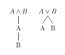
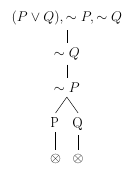
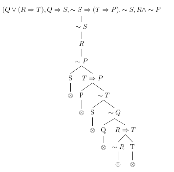
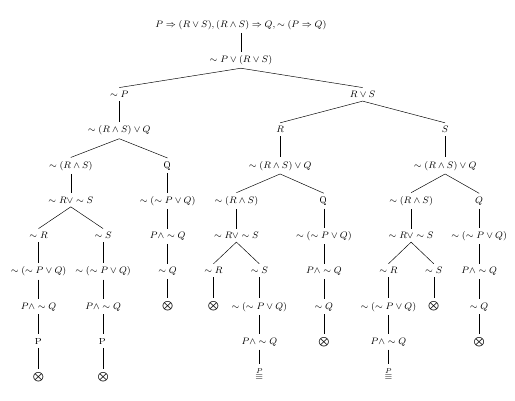
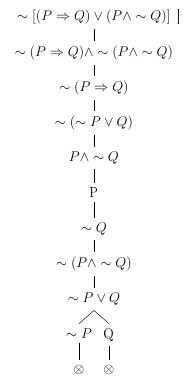
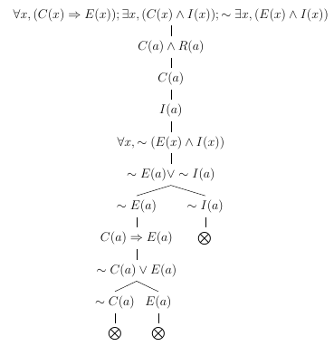
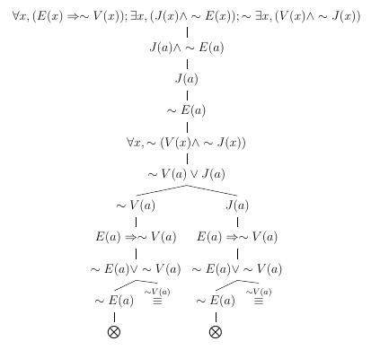
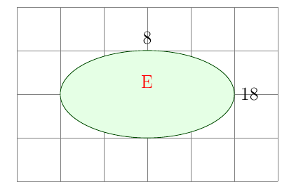
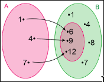

Notes
pelos alunos de Engenharia da Computação da Universidade Federal de Sergipe (UFS), turma de 2025
Sumário
Notes é um site criado por Gabriel Santos de Souza para hospedar anotações digitais para as matérias cursadas, ou quaisquer outros temas que os membros da turma queiram partir conhecimento.
Tecnologias
Tecnologias usadas para a criação do site.
- Git.
- GitHub.
- Markdown.
- mdbook.
- JavaScript.
- MathJax.
- EditorConfig.
- Nix.
Referências Bibliográficas
MCCANN, Tyler. Tylerdotrar/example-mdbook. Disponível em: https://github.com/tylerdotrar/Example-mdBook. Acesso em: 6 mai. 2025.
Cálculo
Cálculo (também conhecido como cálculo infinitesimal) é o campo da matemática especializado no cálculo de taxas de variação (cálculo diferencial) e a soma de fatores infinitamente pequenos para determinar um valor inteiro (cálculo integral) mediante o uso de funções. É a área da matemática que estuda a mudança. Ele liga a geometria à física.
Funções
Relação entre dois conjuntos, suponha \( X \) e \( Y \), onde para cada valor de \( X \), há apenas um valor de \( Y \).
Para mais informações sobre esse assunto, leia o trecho de funções na porção de Fundamentos Elementares da Matemática.
Cálculo Diferencial
Tem como foco o encontro da derivada (também conhecida como *c de uma função, que indica a taxa de variação de uma função, meidante uma reta tangente a dois pontos o gráfico (indicada por \( f' \)). Ela pode indicar conceitos como a aceleração ou desaceleração, além de estabelecer regras claras para tracejar o gráfico de uma função.
Cálculo Integral
Este tem como foco a integral, que permite o cálculo da área embaixo do gráfico, independente da sua forma. Com isso, é possível cálcular a área de estruturas não convencionais (que não são polígonos).
Referências Bibliográficas
BERGGREN, J. L. Calculus. Encyclopedia Britannica, 30 ago. 2025. Disponível em: https://www.britannica.com/science/calculus-mathematics. Acesso em: 15 set. 2025.
Muñoz, J. Cálculo: o que é e qual a sua importância? Jovens Cientistas, 10 jun. 2022. Disponível em: https://www.jovenscientistasbrasil.com.br/post/c%C3%A1lculo-o-que-%C3%A9-e-qual-a-sua-import%C3%A2ncia. Acesso em: 15 set. 2025.
Rossini, M. C. O que é o cálculo – e como ele causou a maior disputa da história da matemática. Superinteressante, 12 dez. 2023. Disponível em: https://super.abril.com.br/ciencia/o-que-e-o-calculo-e-como-ele-causou-a-maior-disputa-da-historia-da-matematica/. Acesso em: 15 set. 2025.
Cálculo A
Primeira partição do estudo de cálculo para alguns cursos, como os de computação. Outros, como Engenharia Cívil, cursam Cálculo I.
A diferença está no conteúdo. Cálculo A abrange somente o cálculo diferencial, enquanto cálculo I, de maneira menos aprofundada, chega até parte do cálculo integral.
Referências Bibliográficas
STEWART, James. Cálculo. 7. ed. [S.l.]: Cengage Learning, 2021. v. 1
O Limite de uma Função
Suponha que \( f(x) \) seja definido quando está próximo de \( a \) (\( f \) é definido num intervalo aberto com \( a \)). Então escrevemos
\[ \lim_{x \to a} f(x) = L \]
e dizemos "o limite de \( f(x) \), quando \( x \) tende a \( a \), é igual A \( L \)" se pudermos tornar os valores de \( f(x) \) arbitrariamente próximos de \( L \), ao tornar \( x \) suficientemente próximo de \( a \) (por ambos os lados de \( a \)) mas não igual a \( a \).
Em termos matemáticos
\[ x \to a \implies \lim_{x \to a} f(x) = L \implies f(x) \to L, x \neq a \]
Exemplo
Estime o valor de \( \lim_{x \to 1} \frac{x - 1}{x^{2} - 1} \).
Observe que \( f(x) \) não está definida quando \( x = 1 \), mas isso não importa, pois a definição diz que devemos considerar os valores próximos, não iguais.
Pegando alguns valores próximos de 1
| \( x < 1 \) | \( f (x) \) |
|---|---|
| 0,5 | 0,666667 |
| 0,9 | 0,526316 |
| 0,99 | 0,502513 |
| 0,999 | 0,500250 |
| 0,9999 | 0,500025 |
| \( x > 1 \) | \( f (x) \) |
|---|---|
| 1,5 | 0,400000 |
| 1,1 | 0,476190 |
| 1,01 | 0,497512 |
| 1,001 | 0,499750 |
| 1,0001 | 0,499975 |
podemos concluir que
\[ \lim_{x \to 1} = \frac{x - 1}{x^{2} - 1} = 0,5 \]
Exemplo
Estime o valor de \( \lim_{t \to 0} \frac{\sqrt{t^{2} + 9} - 3}{t^{2}} \).
Divisão por zero é impossível, então \( f(t) \) não está definida quando \( t = 0 \), por isso, devemos usar aquele mesmo método de exaustão anterior.
| t | \( \frac{\sqrt{t^{2} + 9}}{t^{2}} \) |
|---|---|
| \( \pm 1,0 \) | 0,16228 |
| \( \pm 0,5 \) | 0,16553 |
| \( \pm 0,1 \) | 0,16662 |
| \( \pm 0,05 \) | 0,16666 |
| \( \pm 0,01 \) | 0,16667 |
Com a tabela acima, podemos concluir que
\[ \frac{\sqrt{t^{2} + 9}}{t^{2}} = \frac{1}{6} \]
Exemplo
Faça uma estimativa de \( \lim_{x \to 0} \frac{\text{sen x}}{x} \).
Fazendo aquele mesmo esquema da tabela, notariamos que o valor de \( f(x) \) se aproxima cada vez mais de 1, e com isso podemos supor que
\[ \lim_{\theta \to 0} \frac{\text{sen \theta}}{\theta} = 1 \]
Que é o limite fundamental trigonométrico, importante de ser lembrado.
Outro limite do tipo é
\[ \lim_{\theta \to 0} \frac{\text{cos \theta} - 1}{\theta} = 0 \]
Exemplo
Analise \( \lim_{x \to 0} \text{sen} \frac{\pi}{x} \).
Tentando vários valores aqui, o resultado é zero, então podemos estimar que
\[ \lim_{x \to 0} \text{sen} \frac{\pi}{x} = 0 \]
Mas isto está errado, demonstrando que não podemos só tentar advinhando, precisamos de ferramentas reais para descobrir os limites.
Limites Laterais
Esquerda
Escrevemos
\[ \lim_{x \to a^{-}} f(x) = L \]
e dizemos que o limite de \( f(x) \) quando x tende a \( a \) pela esquerda é igual a \( L \) se pudermos tornar os valores de \( f(x) \) arbitrariamente próximos de \( L \), para \( x \) suficientemente próximo de \( a \) e menor que \( a \).
Direita
O mesmo é valido para o oposto
\[ \lim_{x \to a^{+}} f(x) = L \]
trocando esquerda por direita e menor por maior.
Conclusão
\[ \lim_{x \to a} f(x) = L \iff \lim_{x \to a^{-}} f(x) = L \land \lim_{x \to a^{+}} f(x) = L \]
Cálculos Usando Propriedades dos Limites
- Propriedade da Soma: \( \lim_{x \to a}[f(x) + g(x)] = \lim_{x \to a} f(x) + \lim_{x \to a} g(x) \)
- Propriedade da Diferença: \( \lim_{x \to a}[f(x) - g(x)] = \lim_{x \to a} f(x) - \lim_{x \to a} g(x) \)
- Propriedade da Multiplicação por Constante: \( \lim_{x \to a}[cf(x)] = c \lim_{x \to a} f(x) \)
- Propriedade do Produto: \( \lim_{x \to a}[f(x)g(x)] = \lim_{x \to a} f(x) \cdot \lim_{x \to a} g(x) \)
- Propriedade do Quociente: \( \lim_{x \to a} \frac{f(x)}{g(x)} = \frac{\lim_{x \to a} f(x)}{\lim_{x \to a} g(x)} \) se \( \lim_{x \to a} g(x) \neq 0 \)
- Propriedade da Potência: \( \lim_{x \to a} [f(x)]^{n} = \left[\lim_{x \to a} f(x)\right]^{n} \)
- Propriedade da Constante: \( \lim_{x \to a} c = c \text{ e } \lim_{x \to a} x = a \)
- Propriedade do Expoente: \( \lim_{x \to a} x^{n} = a^{n} \)
- Propriedade da Raiz: \( \lim_{x \to a} \sqrt[n]{f(x)} = \sqrt[n]{\lim_{x \to a} f(x)} \)
Exemplo
Calcule os limites.
(a) \( \lim_{x \to 5} (2x^{2} - 3x + 4) \)
(b) \( \lim_{x \to -2} \frac{x^{3} + 2x^{2} - 1}{5 - 3x} \)
(a)
\[ \lim_{x \to 5} (2x^{2} - 3x + 4) = \lim_{x \to 5} (2x^{2}) - \lim_{x \to 5} (3x) + \lim_{x \to 5} 4 = 2 \lim_{x \to 5} x^{2} = 3 \lim_{x \to 5} x + \lim_{x \to 5} 4 = 2(5^{2}) - 3(5) + 4 = 39 \]
(b)
\[ \lim_{x \to -2} \frac{x^{3} + 2x^{2} - 1}{5 - 3x} = \frac{\lim_{x \to -2} (x^{3} + 2x^{2} - 1)}{\lim_{x \to -2} (5 - 3x)} = \frac{\lim_{x \to -2} x^{3} + 2 \lim_{x \to -2} x^{2} - \lim_{x \to -2} 1}{\lim_{x \to -2} 5 - 3 \lim_{x \to -2} x} = \frac{(-2)^{3} + 2(-2)^{2} - 1}{5 - 3(-2)} = -\frac{1}{11} \]
Propriedade de Substituição Direta
Se \( f \) for uma função polinomial ou racional e \( a \) estiver no domínio de \( f \), então
\[ \lim_{x \to a} f(x) = f(a) \]
Exemplo
Encontre \( \lim_{x \to 1} \frac{x^{2} - 1}{x - 1} \).
Não podemos encontrar o limite fazendo \( x = 1 \), então temos que encontrar outro jeito.
Podemos fatorar o numerador como uma diferença de quadrados para eliminar o denominador:
\[ \frac{x^{2} - 1}{x - 1} = \frac{(x - 1)(x + 1)}{x - 1} \]
Isso é possível pois, quando \( x \) tende a 1, temos que \( x \neq 1 \) e, assim, \( x - 1 \neq 0 \).
\[ = \lim_{x \to 1} (x + 1) = 1 + 1 = 2 \]
Observação Se \( f(x) = g(x) \) quando \( x neq a \), então \( \lim_{x \to a} f(x) = \lim_{x \to a} g(x) \), desde que o limite exista.
Exemplo
Encontre \( \lim_{ \to 1} g(x) \) onde
\[ g(x) = \begin{cases} x + 1 & \text{se } x \neq 1 \pi & \text{se } x = 1 \end{cases} \]
Aqui \( g \) está definida em \( x = 1 \), e \( g(1) = \pi \), mas o valor de um limite não depende do valor da função em 1. Como \( g(x) = x + 1 \) para x \neq 1, temos
\[ \lim_{x \to 1} g(x) = \lim_{x \to 1} (x + 1) = 2 \]
Exemplo
Calcule \( \lim_{h \to 0} \frac{(3 + h)^{2} - 9}{h} \).
Não podemos simplesmente fazer \( h = \), então temos que usar um pouco de álgebra.
Expandindo o produto notável do numerador, obtemos
\[ \frac{(9 + 6h + h^{2}) - 9}{h} \]
Que pode ser novamente simplificado
\[ \frac{6h + h^{2}}{h} = \frac{h(6 + h)}{h} = 6 + h \]
Com isso, agora podemos fazer \( h = 0 \)
\[ \( \lim_{h \to 0} \frac{(3 + h)^{2} - 9}{h} \) = \lim_{h \to 0} (6 + h) = 6 \]
Exemplo
Encontre \(lim_{t \to 0} \frac{\sqrt{t^{2} + 9} - 3}{t^{2}} \).
\[ \lim_{t \to 0} \frac{\sqrt{t^{2} + 9} - 3}{t^{2}} = \lim_{t \to 0} \frac{\sqrt{t^{2} + 9} - 3}{t^{2}} \cdot \frac{\sqrt{x^{2} + 9} + 3}{\sqrt{x^{2} + 9} + 3} = \lim_{t \to 0} \frac{(t^{2} + 9) - 9}{t^{2}(\sqrt{t^{2} + 9} + 3)} = \lim_{t \to 0} \frac{t^{2}}{t^{2}(\sqrt{t^{2} + 9} + 3)} = \lim_{t \to 0} \frac{1}{\sqrt{t^{2} + 9} + 3} = \lim_{t \to 0} \frac{1}{\sqrt{\lim_{t \to 0} (t^{2} + 9)} + 3} = \frac{1}{3 + 3} = \frac{1}{6} \]
Exemplo
Mostre que \( \lim_{x \to 0} |x| = 0 \).
\[ |x| = \begin{cases} x & \text{se } \geq 0 -x & \text{se } < 0 \end{cases} \]
Uma vez que \( |x| = x \) para \( x > 0 \), temos
\[ \lim_{x \to 0^{+}} |x| = \lim_{x \to 0^{+}} = 0 \]
Para \( x < 0 \), temos \( |x| = -x \) e, assim,
\[ \lim_{x \to 0^{-}} |x| = \lim_{x \to 0^{-}} (-x) = 0 \]
Pela conclusão de limites laterais, temos que
\[ \lim_{x \to 0} |x| = 0 \]
Exemplo
Demonstre que \( \lim_{x \to 0} \frac{|x|}{x} \) não existe.
Fazendo pela esquerda
\[ \lim_{x \to 0^{-}} \frac{|x|}{x} = \lim_{x \to 0^{-}} \frac{-x}{x} = \lim_{x \to 0^{-}} -1 = -1 \]
Agora pela direita
\[ \lim_{x \to 0^{+}} \frac{|x|}{x} = \lim_{x \to 0^{+}} \frac{x}{x} = \lim_{x \to 0^{+}} 1 = 1 \]
Como \( -1 \neq 1 \), o limite não existe.
Exemplo
Se
\[ f(x) = \begin{cases} \sqrt{x - 4} & \text{se } x > 4 8 - 2x & \text{se } x < 4 \end{cases} \]
determine se \( \lim_{x \to 4} f(x) \) existe.
Fazendo pela esquerda
\[ \lim_{x \to 4^{-}} f(x) = \lim_{x \to 4^{-}} (8 - 2x) = 8 - 2 \cdot 4 = 0 \]
Fazendo pela direita
\[ \lim_{x to 4^{+}} f(x) = \lim_{x \to 4^{+}} \sqrt{x - 4} = \sqrt{4 - 4} = 0 \]
Como \( 0 = 0 \), o limite existe.
Igualdade de Limites
Se \( f(x) \leq g(x) \) quando \( x \) está próximo a \( a \) (exceto possivelmente em \( a \)) e os limites de \( f \) e \( g \), ambos existem quando \( x \) tende a \( a \), então
\[ \lim_{x \to a} f(x) \leq \lim_{x \to a} g(x) \]
Teorema do Confronto (Teorema do Sanduíche)
Se \( f(x) \leq g(x) \leq h(x) \) quando \( x \) está próximo a \( a \) (exceto possívelmente em \( a \)) e
\[ \lim_{x \to a} f(x) = \lim_{x \to a} h(x) = L \]
então
\[ \lim_{x \to a} g(x) = L \]
Exemplo
Mostre que \( \lim_{x \to 0} x^{2} \tex{sen } \frac{1}{x} = 0 \).
Como os valores de \( \text{sen} \) estão sempre -1 e 1, podemos escrever
\[ -1 \leq \text{sen } \frac{1}{x} \leq 1 \]
Como qualquer inequação permanece verdadeira quando multiplicada por um número positivo, pdemos multiplicar essa inequação por \( x^{2} \) (visto que \( x^{2} \geq 0 \forall x \))
\[ -x^{2} \leq x^{2} \text{sen } \frac{1}{x} \leq x^{2} \]
Sabemos que
\[ \lim_{x \to 0} x^{2} = 0 \text{ e } \lim_{x \to 0} (-x^{2}) = 0 \]
Usando o Teorema do Confronto, então temos que
\[ \( \lim_{x \to 0} x^{2} \tex{sen } \frac{1}{x} = 0 \) \]
Continuidade
Uma função \( f \) é contínua em un número \( a \) se
\[ \lim_{x \to a} f(x) = f(a) \]
Exemplo
Onde cada uma das seguintes funções é descontínua?
(a) \( f(x) = \frac{x^{2} - x -}{x - 2} \)
(b) \( f(x) = \begin{cases} \frac{1}{x^{2}} & \text{se } x \neq 0 \ 1 & \text{se } x = 0 \end{cases} \)
(c) \( f(x) = \begin{cases} \frac{x^{2} - x - 2}{x - 2} & \text{se } x \neq 2 \ 1 & \text{se } x = 2 \end{cases} \)
(a) Observe que \( f(2) \) não está definida; logo, \( f \) é descontínua em 2.
(b) Aqui \( f(0) = 1\) está definida, mas
\[ \lim_{x \to 0} f(x) = \lim_{x \to 0} \frac{1}{x^{2}} \]
não existe. Então \( f \) é descontínua em 0.
(c) Aqui \( f(2) = 1 \) está definida e
\[ \lim_{x \to 2} f(x) = \lim_{x \to 2} \frac{x^{2} - x - 2}{x - 2} = \lim_{x \to 2} \frac{(x - 2)(x + 1)}{x - 2} = \lim_{x \to 2} (x + 1) = 3 \]
existe. Mas
\[ \lim_{x \to 2} \neq f(2) \]
logo, \( f \) não é contínua em 2.
Lateralidade
Uma função \( f \) é contínua à direita em um número \( a \) se
\[ \lim_{x \to a^{+}} f(x) = f(a) \]
e \( f \) é contínua à esquerda em \( a \) se
\[ \lim_{x \to a^{-}} = f(a) \]
Intervalo
Uma função \( f \) é contínua em um intervalo se for contínua em todos os números do intervalo. Se \( f \) for definida somente de um lado da extremidade do intervalo, entendemos continuidade na extremidade como continuidade à direita ou à esquerda.
Exemplo
Mostre que a função \( f(x) = 1 - \sqrt{1 - x^{2}} \) é contínua no intervalo [-1, 1].
\[ \lim_{x \to a} f(x) = \lim_{x \to a} (1 - \sqrt{1 - x^{2}}) = 1 \lim_{x \to a} \sqrt{1 - x^{2}} = 1 - \sqrt{\lim_{x \to a} (1 - x^{2})} = 1 - \sqrt{1 - a^{2}} = f(a) \]
Assim, pela definição, \( f \) é contínua em \( a \) se \( -1 < a < 1 \). Cálculos análogos mostram que
\[ \lim_{x \to -1^{+}} f(x) = 1 = f(-1) \text{ e } \lim_{x \to 1^{-}} f(x) = 1 = f(1) \]
logo, \( f \) é contínua à direita em -1 e contínua à esquerda em 1. Consequentemente, de acordo com a definição de continuidade em intervalo, \( f \) é contínua em [-1, 1].
Teorema do Intervalo
Se \( f \) e \( g \) forem contínuas em \( a \) e se \( c \) for uma constante, então as seguintes funções também são contínuas em \( a \):
- \( f + g \)
- \( f - g \)
- \( cf \)
- \( fg \)
- \( \frac{f}{g} \) se \( g(a) \neq 0 \)
Teorema dos Conjuntos
(a) Qualquer polinômio é contínuo em toda a parte.
(b) Qualquer função racional é contínua sempre que estiver definida; ou seja, é contínua em seu domínio
Exemplo
Encontre \( \lim_{x \to - 2} \frac{x^{3} + 2x^{2} - 1}{5 - 3x} \).
A função
\[ f(x) = \frac{x^{3} + 2x^{2} - 1}{5 - 3x} \]
é racional; assim, pelo Teorema dos Conjuntos, é contínua em seu domínio, que é \( {x|x \neq \frac{5}{3}} \).
Logo
\[ \lim_{x \to -2} \frac{x^{3} + 2x^{2} - 1}{5 - 3x} = \lim_{x \to -2} f(x) = f(-2) = \frac{(-2)^{3} + 2(-2)^{2} - 1}{5 - 3(-2)} = -\frac{1}{11} \]
Teorema das Operações
Se \( f \) e \( g \) froem contínuas em \( a \) e \( c \) for uma constante, então as seguintes funções também são contínuas em \( a \):
- \( f + g \)
- \( f - g \)
- \( cf \)
- ( fg \)
- \( \frac{f}{g} & g(a) \neq 0 \)
Teorema dos Tipos de Funções Contínuas
Os seguintes tipos de funções são contínuas para todo o número de seus domínios:
- Polinômios
- Funções Trigonométricas
- Funções Trigonométricas Inversas
- Funções Exponenciais
- Funções Racionais
- Funções Logarítmicas
- Funções Raízes
Exemplo
Onde a função \( f(x) = \frac{\ln x + \text{tg}^{-} x}{x^{2} - 1} \) é contínua?
Pelo Teorema dos Tipos de Funções Contínuas, sabemos que \( y = \ln x \) é contínua para \( x > 0 \) e que \( y = \text{tg}^{-1} x \) é contínua em \( \mathbb{R} \). Assim, pelo Teorema dos Tipos de Funções Contínuas, \( y = \ln x + \text{tg}^{-1} x \) é contínua em \( (0, \infty) \).
O denominador \( y = x^{2} - 1 \) é um polinômio, portanto é contínuo em toda a parte.
Assim, \( f \) é contínua em todos os números postivos \( x \), exceto onde \( x^{2} - 1 = 0 \). Logo, \( f \) é contínua nos intervalos aberto \( (0, 1) \) e \( (1, \infty) \).
Exemplo
Calcule \( \lim_{x \to \pi} \frac{\text{sen } x}{2 + \text{cos } x} \).
O Teorema ods Tipos de Funções Contínuas nos diz que \( y = \text{sen } x \) é contínua. \( y = 2 + \text{cos } x \) é a soma de duas funções contínuas, e, portanto, é contínua. Logo, a razão
\[ f(x) = \frac{\text{sen } x}{2 + \text{cos } x} \]
é sempre contínua. Portanto, pela definição de função contínua,
\[ \lim_{x \to \pi} \frac{\text{sen } x}{2 + \text{cos } x} = \lim_{x \to \pi} f(x) = f(\pi) = \frac{\text{sen } \pi}{2 + \text{cos } \pi} = \frac{0}{2 - 1} = 0 \]
Teorema das Funções Compostas
\[ \lim_{x \to a} f(g(x)) = f\left(\lim_{x \to a} g(x)\right) \]
Exemplo
Calcule \( \lim_{x \to 1} \text{arcsen } \left(\frac{1 - \sqrt{x}}{1 - x}\right) \).
Uma vez que \( \text{arcsen} \) é uma função contínua, podemos aplicar o Teorema das Funções Compostas:
\[ \lim_{x \to 1} \text{arcsen } \left(\frac{1 - \sqrt{x}}{1 - x}\right) = \text{arcsen } \left(\lim_{x \to 1} \frac{1 - \sqrt{x}}{1 - x}\right) = \text{arcsen } \left(\lim_{x \to 1} \frac{1 - \sqrt{x}}{(1 - \sqrt{x})(1 + \sqrt{x})}\right) = \text{arcsen } \left(\lim_{x \to 1} \frac{1}{1 + \sqrt{x}}\right) = \text{arcsen } \frac{1}{2} = \frac{\pi}{6} \]
Teorema do Valor Intermediário
Suponha que \( f \) seja contínua em um intervalo fechado \( [a, b] \) e seja \( N \) um número qualquer entre \( f(a) \) e \( f(b) \), em que \( f(a) \neq f(b) \). Então existe um número \( c \) em \( (a, b) \) tal que \( f(c) = N \).
Exemplo
Mostre que existe uma raiz da equação
\[ 4x^{3} - 6x^{2} + 3x - 2 = 0
\]
entre 1 e 2.
Seja \( f(x) = 4x^{3} - 6x^{2} + 3x - 2 \). Estamos procurando por uma solução da equação dada, isto é, um número \( c \) entre 1 e 2 tal que \( f(c) = 0 \). Portanto, tomamos \( a = 1 \), \( b = 2 \) e \( N = 0 \) no Teorema do Valor Intermediário. Temos
\[ f(1) = 4 - 6 + 3 - 2 = -1 < 0 f(2) = 32 - 24 + 6 - 2 = 12 > 0 \]
Logo, \( f(1) < 0 < f(2) \), isto é, \( N = 0 \) é um número entre \( f(1) e f(2) \). Como \( f \) é contínua, por ser um polinômio, o Teorema Do Valor Intermediário afirma que existe um número \( c \) entre 1 e 2 tal que \( f(c) = 0 \). Em outras palavras, a equação \( 4x^{3} - 6x^{2} + 3x - 2 = 0 \) tem pelo menos uma raiz \( c \) no intervalo \( (1, 2) \).
Limites Infinitos
Positivo
Seja \( f(x) \) uma função definida em ambos os lados de \( a \), exceto possívelmente no próprio \( a \). Então
\[ \lim_{x \to a} f(x) = \infty \]
significa que podemos fazer os valores de \( f(x) \) ficarem arbitrariamente grandes tornando \( x \) suficientemente próximo de \( a \), mas não igual a \( a \).
Exemplo
Encontre \( \lim_{x \to 0} \frac{1}{x^{2}} \), se existir.
À medida que \( x \) tende a 0, \( x^{2} \) também tende a 0, e \( \frac{1}{x^{2}} \) fica muito grande.
Assim, os valores de \( f(x) \) não tendem a um número, e \( \lim_{x \to 0} \frac{1}{x^{2}} \) portanto não existe.
Por isso, escrevemos
\[ \lim_{x \to 0} \frac{1}{x^{2}} = \infty \]
Negativo
\[ \lim_{x \to a} f(x) = \infty \]
Mesma coisa que o positivo, só que em vez de ficarem arbitrariamente grandes, os valores tecnicamente ficam "arbitrariamente pequenos", por serem negativos.
Assíntota Vertical
A reta \( x = a \) é chamada assíntota vertical da curva \( y = f(x) \) se pelo menos uma das seguintes condições estiver satisfeita:
- \( \lim_{x \to a} f(x) = \infty \)
- \( \lim_{x \to a} f(x) = -\infty \)
- \( \lim_{x \to a^{-}} f(x) = \infty \)
- \( \lim_{x \to a^{-}} f(x) = -\infty \)
- \( \lim_{x \to a^{+}} f(x) = \infty \)
- \( \lim_{x \to a^{+}} f(x) = -\infty \)
Exemplo
Encontre as assíntotas de \( f(x) = \text{tg } x\).
Como
\[ \text{tg } x = \frac{\text{sen } x}{\text{cos } x} \]
Podemos encontrar assíntotas verticais onde \( \text{cos } x = 0 \). O valor para isso é \( \frac{\pi}{2} \).
Assíntotas Horizontais
A reta \( y = L \) é chamada assíntota horizontal da curva \( y = f(x) \) se
\[ \lim_{x \to \infty} f(x) = L \text{ ou } \lim_{x \to -\infty} f(x) = L \]
Uma função pode ter mais de uma assíntota horizontal.
Postivo
Seja \( f \) uma função definida em algum intervalo, \( (a, \infty) \). Então
\[ \lim_{x \to \infty} f(x) = L \]
significa que os valores de \( f(x) \) ficam arbitrariamente próximos de \( L \) tomando \( x \) suficientemente grande.
Lembrando que \( \infty \) não é um número.
Negativo
Mesma coisa que o positivo, só que em vez de tomar valores arbitrariamente grandes, os valores tecnicamente seriam "arbitrariamente pequenos", por serem negativos.
Exemplo
Encontre \( \lim_{x \to \infty} \frac{1}{x} \) e \( \lim_{x \to -\infty} \frac{1}{x} \).
Observe que quando \( x \) é grande, \( \frac{1}{x} \) é pequeno. Com isso, podemos fazer \( \frac{1}{x} \) tão próximo de 0 quanto quisermos. Portanto, segundo a definição, temos
\[ \lim_{x \to \infty} \frac{1}{x} = 0 \]
E também
\[ \lim_{x \to -\infty} \frac{1}{x} = 0 \]
Com isso, também temos a informação de que a reta \( y = 0 \) (o eixo \( x \) é uma assíntota horizontal de \( y = \frac{1}{x} \).
Teorema
Se \( r > 0 \) for um número racional, então
\[ \lim_{x \to \infty} \frac{1}{x^{r}} = 0 \]
Se \( r > 0 \) for um número racional tal que \( x^{r} \) seja definida para todo \( x \), então
\[ \lim_{x \to -\infty} \frac{1}{x^{r}} = 0 \]
Exemplo
Calcule
\[ \lim_{x \to \infty} \frac{3x^{2} - x - 2}{5x^{2} + 4x + 1} \]
e indique quais propriedades de limites foram usadas em cada etapa.
Para calcular o limite no infinito de uma função racional, primeiro dividimos ela pela maior potência de \( x \) que ocorre no denominador
\[ \lim_{x \to \infty} \frac{3x^{2} - x - 2}{5x^{2} + 4x + 1} = \lim_{x \to \infty} \frac{\frac{3x^{2} - x - 2}{x^{2}}}{\frac{5x^{2} + 4x + 1}{x^{2}}} = \lim_{x \to \infty} \frac{3 - \frac{1}{x} - \frac{2}{x^{2}}}{5 + \frac{4}{x} + \frac{1}{x^{2}}} = \frac{\lim_{x \to \infty} \left(3 - \frac{1}{x} - \frac{2}{x^{2}}\right)}{\lim_{x \to \infty} \left(5 + \frac{4}{x} + \frac{1}{x^{2}}\right)} = \frac{\lim_{x \to \infty} 3 - \lim_{x \to \infty} \frac{1}{x} - 2 \lim_{x \to \infty} \frac{1}{x^{2}}}{\lim_{x \to \infty} 5 + 4 \lim_{x \to \infty} \frac{1}{x} + \lim_{x \to \infty} \frac{1}{x^{2}}} = \frac{3 - 0 - 0}{5 + 0 + 0} = \frac{3}{5} \]
Exemplo
Determine as assíntotas horizontais e verticais do gráfico da função
\[ f(x) = \frac{\sqrt{2x^{2} + 1}}{3x - 5} \]
Dividindo o numerador e o denominador por \( x \) temos
\[ \lim_{x \to \infty} \frac{\sqrt{2x^{2} + 1}}{3x - 5} = \lim_{x \to \infty} \frac{\sqrt{2 + \frac{1}{x^{2}}}}{3 - \frac{5}{x}} = \frac{\lim_{x \to \infty} \sqrt{2 + \frac{1}{x^{2}}}}{\lim_{x \to \infty} \left(3 - \frac{5}{x}\right)} = \frac{\sqrt{\lim_{x \to \infty} 2 + \lim_{x \to \infty} \frac{1}{x^{2}}}}{\lim_{x \to \infty} 3 - 5 \lim_{x \to \infty} \frac{1}{x}} = \frac{\sqrt{2 + 0}}{3 - 5 \cdot 0} = \frac{\sqrt{2}}{3} \]
Portanto, a reta \( y = \frac{\sqrt{2}}{3} \) é uma assíntota horizontal do gráfico de \( f \).
No cálculo do limite quando \( x \to -\infty \), devemos lembrar que, para \( x < 0 \), temos \( \sqrt{x^{2}} = |x| = -x \). Logo, quando dividimos o numerador por \( x \), para \( x < 0 \), obtemos
\[ \frac{1}{x}\sqrt{2x^{2} + 1} = -\frac{1}{\sqrt{x^{2}}} \sqrt{2x^{2] + 1} = -\sqrt{2 + \frac{1}{x^{2}}} \]
Logo
\[ \lim_{x \to -\infty} \frac{\sqrt{2x^{2} + 1}}{3x - 5} = \lim_{x \to -\infty} \frac{-\sqrt{2 + \frac{1}{x^{2}}}}{3 - \frac{5}{x}} = \frac{-\sqrt{2 + \lim_{x \to -\infty} \frac{1}{x^{2}}}}{3 - 5 \lim_{x \to -\infty} \frac{1}{x}} = -\frac{\sqrt{2}}{3} \]
Assim, a reta \( y = -\frac{\sqrt{2}}{3} \) é também uma assíntota horizontal.
A assíntota vertical ocorre quando a função dá numa indeterminação. Com uma função racional, podemos fazer isso facilmente ao igualar o denominador a zero. Isso é possível com \( \frac{5}{3} \)
[!TIP] Lembrando que tem que fazer dos dois lados para ter certeza!
\[ \lim_{x \to \frac{5}{3}} \frac{\sqrt{2x^{2} + 1}}{3x - 5} = \infty \]
Exemplo
Calcule \( \lim_{x \to \infty} (\sqrt{x^{2} + 1} - x) \).
Multiplicamos o numerador e o denominador pelo conjugado radical:
\[ \lim_{x \to \infty} (\sqrt{x^{2} + 1} - x) = \lim_{x \to \infty} (\sqrt{x^{2} + 1} - x) \cdot \frac{\sqrt{x^{2} + 1} + x}{\sqrt{x^{2} + 1} + x} = \lim_{x \to \infty} \frac{(x^{2} + 1) - x^{2}}{\sqrt{x^{2} + 1} + x} = \lim_{x \to \infty} \frac{1}{\sqrt{x^{2} + 1} + x} = 0 \]
Limite da Função Exponencial Natural
\[ \lim_{x \to -\infty} e^{x} = 0 \]
Exemplo
Calcule \( \lim_{x \to 0^{-}} e^{\frac{1}{x}}.
\[ \lim_{x \to 0^{-}} e^{\frac{1}{x}} = \lim_{t \to -\infty} e^{t} = 0 \]
Exemplo
Calcule \( \lim_{x \to \infty} \text{sen } x \).
Quando \( x \) cresce, os valores de \( \text{sen } x \) oscilam entre 1 e -1 um número infinito de vezes; logo, eles não tendem a qualquer número definido. Portanto, \( \lim_{X \to \infty} \text{sen } x \) não existe.
Limites Infinitos no Infinito
Exemplo
Encontre \( \lim_{x \to \infty} x^{3} \) e \( \lim_{x \to -\infty} x^{3} \).
Quando \( x \0 torna-se grande, \( x^{3} \) também fica grande. Então
\[ \lim_{x \to \infty} x^{3} = \infty \]
Exemplo
Encontre \( \lim_{x \to \infty} (x^{2} - x) \).
Não podemos escrever
\[ \lim_{x \to \infty} (x^{2} - x) = \lim_{x \to \infty} x^{2} - \lim_{x \to \infty} x = \infty - \infty \]
Pois \( \infty \) não é um número. Contudo, podemos escrever
\[ \lim_{x \to \infty} (x^{2} - x) = \lim_{x \to \infty} x(x - 1) = \infty \]
Derivadas
Regras de Derivação
Cálculo B
Segunda partição do estudo de cálculo para alguns cursos, como os de computação. Outros, como Engenharia Civil, cursam Cálculo II.
A diferença está no conteúdo. Cálculo B abrange parte do cálculo infinitesimal, enquanto cálculo II fala ainda mais sobre esse tema.
Referências Bibliográficas
STEWART, James. Cálculo. 7. ed. [S.l.]: Cengage Learning, 2021. v. 1
O Problema da Área
Área é um termo fácil de ser definido para regiões com lados retos. Em um retângulo, pro exemplo, a área é o produto do comprimento e da largura. Em um triângulo, é metade da base vezes a altura. Seguindo aquele método grego de exaustão, podemos encontrar a área de outros polígonos dividindo-os em múltiplos triângulos, somando as áreas desses triângulos no final.
Isso não é tão fácil quando estamos lidando com uma região com lados curvos. Podemos fazer uma aproximação dessas áreas ao dividir o gráfico em retângulos e depois tomando o limite das áreas dos retângulos, a medida que o número de retângulos aumenta.
Exemplo
Use retângulos para estimar a área sob a parábola \( y = x^{2} \) de 0 até 1.
Como estamos fazendo de 0 até 1, podemos imaginar um quadrado na área do gráfico de com lados de comprimento 1. Dividindo a área \( S \) em quatro faixas, \( S_{1} \), \( S_{2} \), \( S_{3} \), e \( S_{4} \), com as retas veticais \( x = \frac{1}{4} \), \( \frac{1}{2} \), \( \frac{3}{4} \) e a existente \( 1 \) dividindo-as.
Podemos aproximar cada faixa por um retângulo com base igual à largura da faixa e altura igual ao lado direito da faixa. As alturas dos retângulos são os valores da função \( f(x) = x^{2} \) nas extremidades diretas dos subintervalos \( \left[0, \frac{1}{4}\right] \), \( \left[\frac{1}{4}, \frac{1}{2}\right] \), \( \left[\frac{1}{2}, \frac{3}{4}\right] \) e \( \left[\frac{3}{4}, 1\right] \).
Cada retângulo tem largura de \( \frac{1}{4} \) e altura de \( \left(\frac{1}{4}\right)^{2} \), \( \left(\frac{1}{2}\right)^{2} \), \( \left(\frac{3}{4}\right)^{2} \) e \( \left(1\right)^{2} \). Se \( R_{4} \) for a soma das áreas dos retângulos aproximantes, teremos
\[ R_{4} = \frac{1}{4} \cdot \left(\frac{1}{4}\right)^{2} + \frac{1}{4} \cdot \left(\frac{1}{2}\right)^{2} + \frac{1}{4} \cdot \left(\frac{3}{4}\right)^{2} + \frac{1}{4} \cdot 1^{2} = \frac{15}{32} = 0,46875 \]
Observação Os valores aqui estão ao quadrado pois estamos aplicando a função neles!
Por ser uma aproximação, temos que a área \( A \) de \( S \) é
\[ A < 0,46875 \]
Fazendo retângulos menores que tocam a curva em apenas um ponto (extremidade esquerda dos subintervalos), descobrimos uma outra área que server ajuda a definir o intervalo de \( A \).
\[ L_{4} = \frac{1}{4} \cdot 0^{2} + \frac{1}{4} \cdot \left(\frac{1}{4}\right)^{2} + \frac{1}{4} \cdot \left(\frac{1}{2}\right)^{2} + \frac{1}{4} \cdot \left(\frac{3}{4}\right)^{2} = \frac{7}{32} = 0,21875 \]
\[ 0,21875 < A < 0,46875 \]
Podemos repetir esse procedimento com números maiores de faixas para encontrar resultados mais precisos. Fazendo isso, podemos chegar a deduzir um resultado como foi feito em limites.
Nesse exemplo, mil faixas nos dão
\[ 0,3328336 < A < 0,3338335 \]
Que, por ser próximo de 0,3333..., podemos dizer que tende a \( \frac{1}{3} \).
Exemplo
Para a região \( S \) do Exemplo 1, mostre que a soma das áreas dos retângulos aproximantes superiores tende a \( \frac{1}{3} \), isto é,
\[ \lim_{n \to \infty} R_{n} = \frac{1}{3} \]
\( R_{n} \) é a soma das áreas dos retângulos. Cada retângulo tem uma largura \( \frac{1}{n} \), e as alturas são os valores da função \( f(x) = x^{2} \) nos pontos \( \frac{1}{n} \), \( \frac{2}{n} \), \( \frac{3}{n} \), ..., \( \frac{n}{n} \). Logo
\[ R_{n} = \frac{1}{n} \cdot \left(\frac{1}{n}\right)^{2} + \frac{1}{n} \cdot\left(\frac{2}{n}\right)^{2} + \frac{1}{n} \cdot \left(\frac{3}{n}\right)^{2} + ... + \frac{1}{n} \cdot \left(\frac{n}{n}\right)^{2} = \frac{1}{n} \cdot \frac{1}{n^{2}} (1^{2} + 2^{2} + 3^{2} + ... + n^{2}) = \frac{1}{n^{3}} (1^{2} + 2^{2} + 3^{2} + ... n^{2}) \]
Utilizamos aqui a fórmula para a soma dos quadrados dos \( n \) primeiros inteiros positivos:
\[ 1^{2} + 2^{2} + 3^{2} + ... + n^{2} = \frac{n(n + 1)(2n + 1)}{6} \]
Colocando essa fórmula em \( R_{n} \), temos
\[ R_{n} = \frac{1}{n^{3}} \cdot \frac{n(n + 1)(2n + 1)}{6} = \frac{(n + 1)(2n + 1)}{6n^{2}} \]
Então, temos
\[ \lim_{n \to \infty} R_{n} = \lim_{n \to \infty} \frac{(n + 1)(2n + 1)}{6n^{2}} = \lim_{n \to \infty} \frac{1}{6} \left(\frac{n + 1}{n}\right)\left(\frac{2n + 1}{n}\right) \text{Dividindo os termos em parênteses por $n$...} = \lim_{n \to \infty} \frac{1}{6} \left(1 + \frac{1}{n}\right)\left(2 + \frac{1}{n}\right) \text{Lembrando que $\lim_{n \to \infty} \frac{1}{n} = 0$ e que o limite de uma constante é a própria constante...} = \frac{1}{6} \cdot 1 \cdot 2 = \frac{1}{3} \]
Com isso, podemos definir a área de \( S \)
\[ A = \lim_{n \to \infty} R_{n} = \lim_{n \to \infty} L_{n} = \frac{1}{3} \]
Área
A área \( A \) da região \( S \) que está sob o gráfico de uma função contínua \( f \) é o limite da soma das áreas dos retângulos aproximantes:
\[ A = \lim_{n \to \infty} R_{n} = \lim_{n \to \infty}\left[f(x_{1})\Delta{x} + f(x_{2})\Delta{x} + ... + f(x_{n})\Delta{x}\right] \Delta{x} = \frac{b - a}{n}, b = \text{fim do intervalo}, a = \text{início do intervalo} \]
Tomando a extremidade esquerda chegamos no mesmo valor, só que com um \( n \) diferente
\[ A = \lim_{n \to \infty} L_{n} = \lim_{n \to \infty}\left[f(x_{0})\Delta{x} + f(x_{1})\Delta{x} + ... + f(x_{n - 1})\Delta{x}\right] \Delta{x} = \frac{b - a}{n}, b = \text{fim do intervalo}, a = \text{início do intervalo} \]
Devido a essa igualdade, em vez de usarmos as extremidades, podemos usar outras partes dos intervalos onde a curva toca os retângulos primeiro. Esses pontos, representados por \( x_{n}^{*} \) são chamados de pontos amostrais.
\[ A = \lim_{n \to \infty} \left[f(x_{1}^{*})\Delta{x} + f(x_{2}^{*})\Delta{x} + ... + f(x_{n}^{*})\Delta{x}\right] \]
Um jeito de reescrever isso é usando somatório:
\[ A = \lim_{n \to \infty} \sum_{i = 1}^{n} f(x_{i}^{*}) \Delta{x} \]
Exemplo
Seja \( A \) a área da região que está sob o gráfico de \( f(x) = e^{-x} \) entre \( x = 0 \) e \( x = 2 \).
(a) Usando as extremidades direitas, encontre uma expressão para \( A \) como um limite. Não calcule o limite.
(b) Estime a área tomando como pontos amostrais os pontos médios e usando quatro e depois dez subintervalos.
(a) Uma vez que \( a = 0 \) e \( b = 2 \), a largura de um subintervalo é
\[ \Delta{x} = \frac{2 - 0}{n} = \frac{2}{n} \]
Portanto, \( x_{1} = \frac{2}{n} \), \( x_{2} = \frac{4}{n} \), \( x_{3} = \frac{6}{n} \), \( x_{i} = \frac{2i}{n} \). A soma dos retângulos aproximantes é
\[ R_{n} = f(x_{1})\Delta{x} + f(x_{2})\Delta{x} + ... + f(x_{n})\Delta{x} = e^{-x_{1}}\Delta{x} + e^{-x_{2}}\Delta{x} + ... + e^{-x_{n}}\Delta{x} = e^{\frac{-2}{n}}\left(\frac{2}{n}\right) + e^{\frac{-4}{n}}\left(\frac{2}{n}\right) + ... + e^{\frac{-2n}{n}}\left(\frac{2}{n}\right) \]
Segundo a nossa definição, a área é
\[ A = \lim_{n \to \infty} R_{n} = \lim_{n \to \infty} \frac{2}{n} (e^{\frac{-2}{n}} + e^{\frac{-4}{n}} + e^{\frac{-6}{n}} + ... + e^{\frac{-2n}{n}}) \]
Usando somatório teríamos
\[ A = \lim_{n \to \infty} \frac{2}{n} \sum_{i = 1}^{n} e^{\frac{-2i}{n}} \]
(b) Com \( n = 4 \), os subintervalos com mesma largura \( \Delta{x} = 0,5 \) são \( [0; 0,5] \), \( [0,5; 1] \), \( [1; 1,5] \), e \( [1,5;2] \). Os pontos médios desses intervalos são \( x_{1}^{*} = 0,25 \), \( x_{2}^{*} = 0,75 \), \( x_{3}^{*} = 1,25 \) e \( x_{4}^{*} = 1,75 \), e a soma das áreas dos quatro retângulos aproximantes é
\[ M_{4} = \sum_{i = 1}^{4} f(x_{1}^{*}) \Delta{x} = f(0,25) \Delta{x} + f(0,75) \Delta{x} + f(1,25) \Delta{x} + f(1,75) \Delta{x} = e^{-0,25} (0,5) + e^{-0,75} (0,5) + e^{-1,25} (0,5) + e^{-1,75} (0,5) = \frac{1}{2} (e^{-0,25} + e^{-0,75} + e^{-1,25} + e^{-1,75}) \approx 0,8557 \]
Logo, uma estimativa para a área é
\[ A \approx 0,8557 \]
Com \( n = 10 \), os subintervalos são \( [0; 0,2] \), \( [0,2; 0,4], ..., [1,8; 2] \) e os pontos médios são \( x_{1}^{*} = 0,1 \), \( x_{2}^{*} = 0,3 \), \( x_{3}^{*} = 0,5 \), ..., \( x_{10}^{*} = 1,9 \). Assim
\[ A \approx M_{10} = f(0,1) \Delta{x} + f(0,3) \Delta{x} + f(0,5) \Delta{x} + ... + f(1,9) \Delta{x} = 0,2(e^{-0,1} + e^{-0,3} + e^{-0,5} + ... + e^{-1,9}) \approx 0,8632 \]
O Problema da Distância
A tarefa neste problema é encontrar a distância percorrida por um objeto durante um certo período de tempo, sendo que a velocidade é conhecida em todos os instantes. Se a velocidade permanece constante, então o problema é fácil de resolver por meio da fórmula
\[ \text{distância} = \text{velocidade} \times \text{tempo} \]
Mas se a velocidade variar, não é tão fácil assim.
Exemplo
Suponha que queiramos estimar a distância percorrida por um carro durante um intervalo de tempo de 30 segundos. A cada 5 segundos registramos a leitura do velocímetro na seguinte tabela:
| Tempo(s) | 0 | 5 | 10 | 15 | 20 | 25 | 30 |
|---|---|---|---|---|---|---|---|
| Velocidade (km/h) | 27 | 34 | 38 | 46 | 51 | 50 | 45 |
Para termos o tempo e a velocidade em unidades constantes, podemos a velocidade para metros por segundo:
| Tempo(s) | 0 | 5 | 10 | 15 | 20 | 25 | 30 |
|---|---|---|---|---|---|---|---|
| Velocidade (m/s) | 7,5 | 9,4 | 10,6 | 12,8 | 14,2 | 13,9 | 12,5 |
Multiplicando as velocidades pelos tempos podemos fazer estimativas das distâncias percorridas nos intervalos
\[ \text{De 0 a 5 segundos} 7,5 \text{ m/s } \times 5 \text{ s } = 37,5 \text{ m} \text{De 5 a 10 segundos} 9,4 \text{ m/s } \times 5 \text{ s } = 47 \text{ m} \text{Fazendo o resto...} (7,5 \times 5) + (9,4 \times 5) + (10,6 \times 5) + (12,8 \times 5) + (14,2 \times 5) + (13,9 \times 5) = 342 \text{ m} \]
Podemos, da mesma forma, usar a velocidade no fim de cada intervalo de tempo em vez de no começo como a velocidade constante.
\[ (9,4 \times 5) + (10,6 \times 5) + (12,8 \times 5) + (14,2 \times 5) + (13,9 \times 5) + (12,5 \times 5) = 367 \text{ m} \]
Para aumentar a precisão, podemos reduzir os segundos feitos entre leituras.
Que nem no problema da área, podemos fazer os retângulos nos gráfico. Os resultados que conseguimos são as áreas dos triângulos (o primeiro triângulo teem área 37,5).
Em geral, suponha que o objeto se mova com velocidade \( v = f(t) \), em que \( a \leq t \leq b \) e \( f(t) \geq 0 \) (logo, o objeto move-se sempre no sentido positivo). Vamos registrar as velocidades nos instantes \( t_{0} (= a) \), \( t_{1} \), \( t_{2} \), ..., \( t_{n} (= b) \), de forma que a velocidade seja aproximadamente constante em cada subintervalo. Se esses tempos forem igualmente espaçados, então entre duas leituras consecutivas temos o período de tempo \( \Delta{t} = \frac{b - a}{n} \). Durante o primeiro intervalo de tempo a velocidade é aproximadamente \( f(t_{0}) \) e, portanto, a distância percorrida é de aproximadamente \( f(t_{0}) \Delta{t} \). Analogamente, a distância percorrida durante o segundo intervalo de tempo é cerca de \( f(t_{1}) \Delta{t} \) e a distância total percorrida durante o intervalo de tempo \( [a, b] \) é de aproximadamente
\[ f(t_{0}) \Delta{t} + f(t_{1}) \Delta{t} + ... + f(t_{n} - 1) \Delta{t} = \sum_{i = 1}^{n} f(t_{i - 1}) \Delta{t} \]
Se uarmos as velocidades nas extremidades direitas em vez de nas extremidades esquerdas, nossa estimativa para a distância total ficará
\[ t(t_{1}) \Delta{t} + f(t_{2}) \Delta{t} + ... + f(t_{n}) \Delta{t} = \sum_{i = 1}^{n} f(t_{i}) \Delta{t} \]
Quanto mais frequentemente medirmos a velocidade, mais precisa será nossa estimativa, então parece plausível que a distância exata d percorrida é o limite de tais expressões:
\[ d = \lim_{n \to \infty} \sum_{i = 1}^{n} f(t_{i - 1}) \Delta{t} = \lim_{n \to \infty} \sum_{i = 1}^{n} f(t_{i}) \Delta{t} \]
Com isso, temos que a distância percorrida é igual à área sob o gráfico da função velocidade.
Integral
Se \( f \) é uma função contínua definida em \( a \leq x \leq b \), dividimos o intervalo \( [a, b] \) em \( n \) subintervalos de comprimentos iguais \( \Delta{x} = \frac{(b - a)}{n} \). Sejam \( x_{0} (= a) \), \( x_{1} \), \( x_{2} \), ..., \( x_{n} (= b) \) as extremidades desses subintervalos, e sejam \( x_{1}^{} \), \( x_{2}^{*} \), ..., \( x_{n}^{} \) pontos amostrais arbitrários nesses subintervalos, de forma que \( x_{i}^{*} \) esteja no i-ésimo subintervalo \( [x_{i - 1}, x_{i}] \). Então a integral definida de \( f \) de \( a \) a \( b \) é
\[ \int_{a}^{b} f(x)dx = \lim_{n \to \infty} \sum_{i = 1}^{n} f(x_{i}^{*}) \Delta{x} \]
E dizemos que \( f \) é integrável em \( [a, b] \).
Legenda
- \( \int \) é o sinal de integral
- \( f(x) \) é o integrando
- \( a \) e \( b \) são os limites de integração
- \( a \) é o limite inferior
- \( b \) é o limite superior
Fundamentos Elementares da Matemática
Área da matemática focada em problemas de lógica e linguagem matemática (fórmulas, definições, provas, algoritmos...).
Referências Bibliográficas
DE SOUZA RABELO, Paulo. Assunta Bem! Matemática é Peleja. [S.l.: S.n.].
Noções de Lógica
Cálculo Proposicional
Na maioria das ciências, o raciocínio utilizado é indutivo, isto é, aquele baseado na experiência e experimentação. Na matemática, esse tipo de raciocínio também chega a ser usado, mas nem sempre é confiável.
Nesse campo, o mais usado é o dedutivo. Se as premissas (hipóteses) são verdadeiras e as leis aplicadas estão corretas, então a conclusão é necessariamente verdadeira.
Proposição
Uma proposição é uma afirmação que é verdadeira ou falsa, mas não ambas. Chamamos este fato de princípio do meio excluído.
Exemplo
Consideremos as seguintes afirmações:
(1) \( \sqrt{2} \) é um número irracional.
(2) Todo triângulo é isósceles.
(3) Que horas são?
(4) \( x + 1 = 2 \).
(5) Existem infinitos números primos.
(6) Vixe Maria!
(7) Esta afirmação é falsa.
(8) Paulo é um bom professor.
Questões imperativas e exclamativas não são proposições, como em (3) e (6). A afirmação (4) pode ser verdadeira ou falsa, dependendo do valor de \( x \) associado. Ela é um predicado, uma afirmação contendo uma ou mais variáveis que se torna uma proposição quando atribuímos valores às variáveis. Por exemplo, chamando esse predicado de \( A(x) \) e fazendo \( A(1) \), temos que a proposição é verdadeira (o que não é o caso para \( A(2) \), ou qualquer valor de \( x \) na verdade).
A afirmação (7) é um paradoxo. A afirmação (8) não pode ser considerada uma proposição, pois é apenas uma opinião.
(1), (2) e (5) são proposições.
No estudo de lógica, usamos letras maiúsculas para representar proposições simples (geralmente \( P \), \( Q \), \( R \) e \( S \)), e atribuímos o valor \( V \) ou \( F \) a uma proposição se ela for verdadeira ou falsa, respectivamente. Usamos dos chamados conectivos lógicos para formar novas proposições a partir de outras existentes.
| Conectivo | Símbolo |
|---|---|
| e (conjunção) | \( \land \) |
| ou (disjunção) | \( \lor \) |
| não (negação) | \( ~ \) ou \( \neg \) |
Conjunção
Numa conjunção, sendo \( P \) e \( Q \) proposições, então \( P \land Q \) é uma afirmação verdadeira quando ambos, \( P \) e \( Q \), são verdadeiros, e falsa caso contrário.
Esta afirmação é usualmente apresentada na forma de uma tabela-verdade, na qual se verifica o valor lógico de uma afirmação composta a partir das combinações dos valores lógicos das sentenças individuais que ela contém. O número de possibilidades para uma proposição como esta é de \( 2^{n} \), sendo \( n \) o número de proposições.
A estratégia para construir uma tabela-verdade com esse tipo de preposição é de sugerir que a proposição inicial é verdadeira na primeira metade dos casos e falsa no resto. Onde a primeira é verdadeira, em metade dos casos a segunda é verdadeira e na outra metade falsa; onde a primeira é falsa, a segunda é verdadeira em metade dos casos e falsa na outra metade.
Podemos fazer isso com quantas proposições quisermos.
Aqui temos um exemplo com duas:
| \( P \) | \( Q \) | \( P \land Q \) |
|---|---|---|
| \( V \) | \( V \) | \( V \) |
| \( V \) | \( F \) | \( F \) |
| \( F \) | \( V \) | \( F \) |
| \( F \) | \( F \) | \( F \) |
E outro com três:
| \( P \) | \( Q \) | \( R \) | \( P \land Q \land R \) |
|---|---|---|---|
| \( V \) | \( V \) | \( V \) | \( V \) |
| \( V \) | \( V \) | \( F \) | \( F \) |
| \( V \) | \( F \) | \( V \) | \( F \) |
| \( V \) | \( F \) | \( F \) | \( F \) |
| \( F \) | \( V \) | \( V \) | \( F \) |
| \( F \) | \( V \) | \( F \) | \( F \) |
| \( F \) | \( F \) | \( V \) | \( F \) |
| \( F \) | \( F \) | \( F \) | \( F \) |
Disjunção
Numa disjunção, sendo \( P \) e \( Q \) proposições, então \( P \lor Q \) é uma afirmação verdadeira quando pelo menos um ds componentes for verdadeiro, e falso quando ambas forem falsas.
Aqui temos um exemplo com duas:
| \( P \) | \( Q \) | \( P \lor Q \) |
|---|---|---|
| \( V \) | \( V \) | \( V \) |
| \( V \) | \( F \) | \( V \) |
| \( F \) | \( V \) | \( V \) |
| \( F \) | \( F \) | \( F \) |
E outro com três:
| \( P \) | \( Q \) | \( R \) | \( P \land Q \land R \) |
|---|---|---|---|
| \( V \) | \( V \) | \( V \) | \( V \) |
| \( V \) | \( V \) | \( F \) | \( V \) |
| \( V \) | \( F \) | \( V \) | \( V \) |
| \( V \) | \( F \) | \( F \) | \( V \) |
| \( F \) | \( V \) | \( V \) | \( V \) |
| \( F \) | \( V \) | \( F \) | \( V \) |
| \( F \) | \( F \) | \( V \) | \( V \) |
| \( F \) | \( F \) | \( F \) | \( F \) |
Uma disjunção pode ser exclusiva ("ou um ou outro, nunca ambos", denotado por \( \oplus \) ou \( \underline{\lor} \)) ou inclusiva.
Negação
Na matemática, a dupla negação de uma proposição resulta na negação da negação, resultando nela mesma.
Exemplo
- \( P \): "Gosto de sorvete"
- \( ~P \): "Não gosto de sorvete"
- \( ~(~P) \): "Gosto de sorvete"
| \( P \) | \( ~P \) |
|---|---|
| \( V \) | \( F \) |
| \( F \) | \( V \) |
Observação A negação somente inverte o valor lógico de uma proposição, ou seja, não é só porque que uma proposição esteja sendo negada que ela é falsa. Ela pode ser falsa por padrão (fazendo com que sua negação seja verdadeira).
Implicações
Uma implicação \( P \implies Q \) é falsa somente quando a hipótese \( P \) é verdadeira e a conclusão \( Q \) é falsa. Um modo de entender o valor verdade de uma afirmação condicional é pensar nela como uma obrigação, uma promessa ou um contrato.
| \( P \) | \( Q \) | \( P \implies Q \) |
|---|---|---|
| \( V \) | \( V \) | \( V \) |
| \( V \) | \( F \) | \( F \) |
| \( F \) | \( V \) | \( V \) |
| \( F \) | \( F \) | \( V \) |
Em uma implicação \( P \implies Q \), \( P \) é chamada de hipótese e \( Q \) de conclusão (ou tese).
Exemplo
(1) Se o número \( a \) divide \( b \) e, por usa vez, \( b \) divide \( c \), então \( a \) divide \( c \).
(2) Se \( x \neq 0 \), então \( x^{2} > 0 \).
(3) Se \( p \) é primo e \( p > 2 \), então \( p \) é impar.
Equivalência Lógica
Duas afirmações \( P \) e \( Q \), simples ou compostas, são logicamente equivalentes se possuem a mesma tabela-verdade, ou seja, se possuem os mesmos valores lógicos. Denotamos este fato por \( P \equiv Q \).
Exemplos de Equivalência
- \( ~(P \lor Q) \equiv ~P \land ~Q \)
- \( ~(P \land Q) \equiv ~P \or ~Q \)
- \( (P \implies Q) \equiv (~P \lor Q) \)
Inversa
\[ ~P \implies ~Q \]
Assim como a negação, o sinal não importa, e sim o conteúdo.
Exemplo
(1) "Se eu sou sergipano, então eu sou brasileiro p" é um implicação válida, porém sua inversa é falsa: "Se eu não sou sergipano, então eu não sou brasileiro".
(2) "Se \( x \) é par, então x^{2} é par" é uma implicação verdadeira que possui uma inversa também vedadeira? "Se x é ímpar, então x^{2} é ímpar".
Contrapositiva
\[ ~Q \implies ~P \]
Recíproca
\[ Q \implies P \]
Se, e somente se
Quando em uma implicação \( P \implies Q \) é verdadeira e sua recíproca \( Q \implies P \) também é verdadeirqa, dizemos que temos uma bi-implicação (ou bicondicional), denotada por \( P \iff Q \) (tê-se \( P \) se, e somente se, \( Q \)).
| \( P \) | \( Q \) | \( P \iff Q \) |
|---|---|---|
| \( V \) | \( V \) | \( V \) |
| \( V \) | \( F \) | \( F \) |
| \( F \) | \( V \) | \( F \) |
| \( F \) | \( F \) | \( V \) |
Tautologias e Contradições
Uma tautologia é uma afirmação sempre verdadeira.
| \( P \) | \( Q \) | \( P \lor Q \) | \( P \implies (P \lor Q) \) |
|---|---|---|---|
| \( V \) | \( V \) | \( V \) | \( V \) |
| \( V \) | \( F \) | \( V \) | \( V \) |
| \( F \) | \( V \) | \( V \) | \( V \) |
| \( F \) | \( F \) | \( F \) | \( V \) |
Uma contradição é uma afirmação sempre falsa.
| \( P \) | \( Q \) | \( ~P \) | \( ~Q \) | \( ~P \land Q \) | \( P \lor ~Q \) | \( (~P \land Q) \land (P \lor ~Q) \) |
|---|---|---|---|---|---|---|
| \( V \) | \( V \) | \( F \) | \( F \) | \( F \) | \( V \) | \( F \) |
| \( V \) | \( F \) | \( F \) | \( V \) | \( F \) | \( V \) | \( F \) |
| \( F \) | \( V \) | \( V \) | \( F \) | \( V \) | \( F \) | \( F \) |
| \( F \) | \( F \) | \( V \) | \( V \) | \( F \) | \( V \) | \( F \) |
Observação Expressões lógicas regulares são chamadas de contingências.
Formas Normais Disjuntiva e Conjuntiva
A Forma Normal Disjuntiva permite encontrar uma função lógica indeterminada mediante uma conjunção de disjunções, enquanto a conjuntiva usa uma disjunção de conjunções.
Exemplo
Qual a sentença lógica que fornecea tabela-verdade abaixo?
| \( P \) | \( Q \) | \( R \) | Função Lógica |
|---|---|---|---|
| \( V \) | \( V \) | \( V \) | \( V \) |
| \( V \) | \( V \) | \( F \) | \( V \) |
| \( V \) | \( F \) | \( V \) | \( F \) |
| \( V \) | \( F \) | \( F \) | \( V \) |
| \( F \) | \( V \) | \( V \) | \( F \) |
| \( F \) | \( V \) | \( F \) | \( V \) |
| \( F \) | \( F \) | \( V \) | \( V \) |
| \( F \) | \( F \) | \( F \) | \( F \) |
Para encontrar o FND, olhamos para as linhas em que o resultado da função lógica é verdadeiro (1, 2, 4, 6 e 7). Então criamos fórmulas que fornece um resultado verdadeiro através de conjunções:
\[ FND: (P \land Q \land R) \lor (P \land Q \land ~R) \lor (P \land ~Q \land ~R) \lor (~P \land Q \land ~R) \lor (~P \land ~Q \land R) \]
Por outro lado, para o FNC, olhamos as linhas em uqe o resultado é falso (3, 5 e8 ); e tomamos disjunções de forma que forneça este resultado:
\[ FNC: (~P \lor Q \lor ~R) \land (P \lor ~Q \lor ~R) \land (~P \lor ~Q \lor ~R) \]
Quantificadores
Uma sentença aberta (ou predicado) é uma sentença contendo uma ou mais variáveis, que, ao serem substituídas por valores, viram proposições. O universo de discurso é o conjunto dos valores válidos das variáveis.
Exemplo
- \( x > 3 \) é uma sentença aberta
- \( 2 > 3 \) é uma proposição falsa, derivada da sentença aberta
Quantificador Universal
Para uma sentença aberta \( P(x) \) com variável \( x \) num universo de discurso \( \mathbb{U} \), a sentença \( \forall x \in \mathbb{U}, P(x) \) (lida: para todo x em U, P(x)) é verdadeira precisamente quando \( P(x) \) é verdadeiro qualquer que seja \( x \) em \( \mathbb{U} \). O símbolo \( \forall \) é chamado de quantificador universal.
Quantificador Existencial
A sentença \( \exists x \in \mathbb{U}, P(x) \) (lida: existe x em U tal que P(x)) é verdadeira quando existe pelo menos um \( x \) no universo de discurso \( \mathbb{U} \) tal que \( P(x) \) é verdadeiro. O símbolo \( \exists \) chamado de quantificador existencial. Quando o objeto é único, denotamos este fato pelo símbolo \( \exists ! \).
Exemplo
(1) \( \forall x \in \mathbb{R}, x^{2} \geq 0 \).
(2) \( \forall x, y \in \mathbb{Q} \) (o produto \( xy \) e a soma \( x + y \) são racionais).
(3) \( \forall x \in \mathbb{R}, (x \geq 3 \implies x^{2} \geq 9) \).
(4) \( \exists x \in \mathbb{Z}, x^{2} = 4 \).
(5) Existem dois números primos tal que sua soma é um número primo.
(6) Para cada número primo \( x \) menor que 10, \( x^{2} + 4 \) é primo.
(7) Existe alguém que não entendeu a definição de quantificador existencial.
Negação
A negação de um quantificador universal resulta num existencial e vice-versa.
Exemplo
"Todos serão reprovados em Fundamentos de Matemática \( (\forall x \in \mathbb{U}, P(x)) \) ⇝ "Existe uma pessoa que não será reprovada em Fundamentos de Matemática" \( (\exists x \in \mathbb{U}, ~P(x)) \)
Validade de Argumentos
Um arugmento com hipóteses \( P_{1} \), \( P_{2} \), ..., \( P_{n} \) e conclusão \( Q \) é dito ser válido. se sempre que \( P_{1} \), \( P_{2} \), ..., \( P_{n} \) forem verdadeiros, então \( Q \) também o for. Denotaremos um argumento por
\[ P_{1}, P_{2}, ..., P_{n} \vdash Q \]
Assim,
\[ (P_{1} \land P_{2} \land ... \land P_{n}) \implies Q \]
é uma tautologia. Caso contrário, dizemos que o argumento é inválido.
Tabela-Verdade
Nela, consideramos todas as possibilidades.
Exemplo
Verificar mediante tabela-verdade a validade do argumento seguinte: "Se Carlos está com fome, então, ele come. Carlos dorme ou não come. Carlos está acordado. Portanto, Carlos não está com fome."
O primeiro passo consiste na representação do argumento na forma simbólica, em termo de proposições simples. Chamando as proposições simples "...fome", "...come" e "..acordado" de \( P \), \( Q \) e \( R \), respectivamente, o argumento pode ser escrito na linguagem da lógica proposicional como
\[ P \implies Q, ~R \lor ~Q, R \vdash ~P \]
| \( P \) | \( Q \) | * \( R \) | \( ~Q \) | \( ~R \) | * \( P \implies Q \) | * \( ~R \lor ~Q \) | * \( ~P \) |
|---|---|---|---|---|---|---|---|
| \( V \) | \( V \) | \( V \) | \( F \) | \( V \) | \( V \) | \( F \) | \( F \) |
| \( V \) | \( V \) | \( F \) | \( F \) | \( F \) | \( V \) | \( F \) | \( F \) |
| \( V \) | \( F \) | \( V \) | \( V \) | \( V \) | \( F \) | \( V \) | \( F \) |
| \( V \) | \( F \) | \( F \) | \( V \) | \( F \) | \( F \) | \( V \) | \( F \) |
| \( F \) | \( V \) | * \( V \) | \( F \) | \( V \) | * \( V \) | * \( V \) | * \( V \) |
| \( F \) | \( V \) | \( F \) | \( F \) | \( F \) | \( V \) | \( V \) | \( V \) |
| \( F \) | \( F \) | * \( V \) | \( V \) | \( V \) | * \( V \) | * \( V \) | * \( V \) |
| \( F \) | \( F \) | \( F \) | \( V \) | \( F \) | \( V \) | \( V \) | \( V \) |
As células marcadas com "*" destacam as hipóteses e a conclusão do argumento, bem como as linhas em que as hipótese são simultaneamente verdadeiras e o respectivo valor da conclusão.
Exemplo
Se o Vasco cair pra série \( B \), então seu treinador será demitido. Se seu treinador for demitido, então o astro do time, Dinamite, também sairá. Se Dinamite sair, então não mais torcerei pelo Vasco. Continuo sendo torcedor do Vasco. Logo, Dinamite não saiu do time e vasco não caiu para série B.
Simbolicamente, temos
\[ P \implies Q, Q \implies R, R \implies S, ~S \vDash ~R \land P \]
| \( P \) | \( Q \) | \( R \) | \( S \) | * \( P \implies Q \) | * \( Q \implies R \) | * \( R \implies S \) | * \( ~S \) | \( ~R \) | \( ~P \) | * \( ~R \land ~P \) |
|---|---|---|---|---|---|---|---|---|---|---|
| \( V \) | \( V \) | \( V \) | \( V \) | \( V \) | \( V \) | \( V \) | \( F \) | \( F \) | \( F \) | \( F \) |
| \( V \) | \( V \) | \( V \) | \( F \) | \( V \) | \( V \) | \( F \) | \( V \) | \( F \) | \( F \) | \( F \) |
| \( V \) | \( V \) | \( F \) | \( V \) | \( V \) | \( F \) | \( V \) | \( F \) | \( V \) | \( F \) | \( F \) |
| \( V \) | \( V \) | \( F \) | \( F \) | \( V \) | \( F \) | \( V \) | \( V \) | \( V \) | \( F \) | \( F \) |
| \( V \) | \( F \) | \( V \) | \( V \) | \( F \) | \( V \) | \( V \) | \( F \) | \( F \) | \( F \) | \( F \) |
| \( V \) | \( F \) | \( V \) | \( F \) | \( F \) | \( V \) | \( F \) | \( V \) | \( F \) | \( F \) | \( F \) |
| \( V \) | \( F \) | \( F \) | \( V \) | \( F \) | \( V \) | \( V \) | \( F \) | \( V \) | \( F \) | \( F \) |
| \( V \) | \( F \) | \( F \) | \( F \) | \( F \) | \( V \) | \( V \) | \( V \) | \( V \) | \( F \) | \( F \) |
| \( F \) | \( V \) | \( V \) | \( V \) | \( V \) | \( V \) | \( V \) | \( F \) | \( F \) | \( V \) | \( F \) |
| \( F \) | \( V \) | \( V \) | \( F \) | \( V \) | \( V \) | \( F \) | \( V \) | \( F \) | \( V \) | \( F \) |
| \( F \) | \( V \) | \( F \) | \( V \) | \( V \) | \( F \) | \( V \) | \( F \) | \( V \) | \( V \) | \( V \) |
| \( F \) | \( V \) | \( F \) | \( F \) | \( V \) | \( F \) | \( V \) | \( V \) | \( V \) | \( V \) | \( V \) |
| \( F \) | \( F \) | \( V \) | \( V \) | \( V \) | \( V \) | \( V \) | \( F \) | \( F \) | \( V \) | \( F \) |
| \( F \) | \( F \) | \( V \) | \( F \) | \( V \) | \( V \) | \( F \) | \( V \) | \( F \) | \( V \) | \( F \) |
| \( F \) | \( F \) | \( F \) | \( V \) | \( V \) | \( V \) | \( V \) | \( F \) | \( V \) | \( V \) | \( V \) |
| \( F \) | \( F \) | \( F \) | \( F \) | * \( V \) | * \( V \) | * \( V \) | \( V \) | \( V \) | \( V \) | * \( V \) |
Exemplo
Ou matemática é difícil ou os alunos não gostam de matemática. Se o português é fácil, então a matemática é facil. Os alunos gostam de matemática. Portanto, se matemática é difícil, então português é fácil.
Simbolicamente, temos
\[ A \underline{\lor} B, C \implies ~A, ~B \vDash A \implies C \]
| \( A \) | \( B \) | \( C \) | * \( A \underline{\lor} B \) | \( ~A \) | * \( C \implies ~A \) | * \( ~B \) | * \( A \implies C \) |
|---|---|---|---|---|---|---|---|
| \( V \) | \( V \) | \( V \) | \( F \) | \( F \) | \( F \) | \( F \) | \( V \) |
| \( V \) | \( V \) | \( F \) | \( F \) | \( F \) | \( V \) | \( F \) | \( F \) |
| \( V \) | \( F \) | \( V \) | \( V \) | \( F \) | \( F \) | \( V \) | \( V \) |
| \( V \) | \( F \) | \( F \) | * \( V \) | \( F \) | * \( V \) | * \( V \) | * \( F \) |
| \( F \) | \( V \) | \( V \) | \( V \) | \( V \) | \( V \) | \( F \) | \( V \) |
| \( F \) | \( V \) | \( F \) | \( V \) | \( V \) | \( V \) | \( F \) | \( V \) |
| \( F \) | \( F \) | \( V \) | \( F \) | \( V \) | \( V \) | \( V \) | \( V \) |
| \( F \) | \( F \) | \( F \) | \( F \) | \( V \) | \( V \) | \( V \) | \( V \) |
A tabela mostra que o argumento é inválido.
Exemplo
Se eu ganhar na megasena darei um carro a cada um de vocês. Eu não ganhei. Logo, vocês perderam os carros prometidos.
| \( P_{1} \) | \( P_{2} \) | * \( P_{1} \implies P_{2} \) | \( ~P_{1} \) | \( ~P_{2} \) |
|---|---|---|---|---|
| \( V \) | \( V \) | \( V \) | \( F \) | \( F \) |
| \( V \) | \( F \) | \( F \) | \( F \) | \( V \) |
| \( F \) | \( V \) | * \( V \) | * \( V \) | * \( F \) |
| \( F \) | \( F \) | \( V \) | \( V \) | \( V \) |
A tabela mostra que o argumento é inválido.
Regras de Inferência
O método de tabela-verdade pode ser exaustivo. Neste método, derivamos uma sequência de proposições a partir das hipóteses até atingir a conclusão. Aqui estão elas:
| Nome | Premissas | Conclusão |
|---|---|---|
| Simplificação | \( P \land Q \) | \( P \) |
| Adição | \( P \) | \( P \lor Q \) |
| Conjunção | \( P, Q \) | \( P \land Q \) |
| Silogismo Disjuntivo | \( P \lor Q, ~P \) | \( Q \) |
| Modus Ponens | \( P \implies Q, P \) | \( Q \) |
| Modus Tollens | \( P \implies Q, ~Q \) | \( ~P \) |
| Silogismo Hipotético | \( P \implies Q, Q \implies R \) | \( P \implies R \) |
| Absorção | \( P \implies Q \) | \( P \implies (P \land Q) \) |
| Dilema Construtivo | \( P \implies Q, R \implies S, P \lor R \) | \( Q \lor S \) |
| Dilema Destrutivo | \( P \implies Q, R \implies S, ~Q \lor ~S \) | \( ~P \lor ~R \) |
Exemplo
Passe o celular ou a carteira. Dou o relógio ou não dou o celular. Fico com os documentos ou não dou a carteira. Não fico com os documentos. Logo, dou o celular e o relógio. Em símbolos
\[ P \lor C, L \or ~P, N \lor ~C, ~N \vDash P \land L \]
(1) \( P \lor C \) Premissa
(2) \( L \lor ~P \) Premissa
(3) \( N \lor ~C \) Premissa
(4) \( ~N \) Premissa
(5) \( ~C \) (3, 4) Silogismo Disjuntivo
(6) \( P \) (1, 5) Silogismo Disjuntivo
(7) \( L \) (2, 6) Silogismo Disjuntivo
(8) \( P \land L \) (6, 7) Conjunção
Como chegamos na conclusão, temos que o argumento é válido.
Exemplo
Se não estudar, não serei aprovado. Se colar, não estudo. Se não perder a concentração, serei aprovado. Se desligo o celular, não perco a concentração. Logo, se colo, não desligo o celular. Em símbolos
\[ ~E \implies ~A, C \implies E, ~P \implies A, M \implies ~P \vDash C \implies ~M \]
(1) \( ~E \implies ~A \) Premissa
(2) \( C \implies ~E \) Premissa
(3) \( ~P \implies A \) Premissa
(4) \( M \implies ~P \) Premissa
(5) \( C \implies ~A \) (1, 2) Silogismo Hipotético
(6) \( ~A \implies P \) (3) Contrapositiva
(7) \( C \implies P \) (5, 6) Silogismo Hipotético
(8) \( P \implies ~M \) (4) Contrapositiva
(9) \( C \implies ~M \) (7, 8) Silogismo Hipotético
Árvore de Refutação
Involve provar que o arugmento não pode ser inválido. Assumimos a conclusão como falsa, e, se não encontrarmos nenhum argumento a favor, então o argumento é válido.
Uma conjunção gera somente um ramo, enquanto uma disjunção gera dois ramos.

Se encontarmos uma contradição tipo \( P \) e \( ~P \) então o ramo é fechado.
Exemplo
Verificar por meio de árvore de refutação a validade do argumento \( [(P \lor Q) \land ~P] \vDash Q \).

Exemplo
\[ (Q \lor (R \implies T), Q \implies S, ~S \implies (T \implies P), ~S \vDash R \implies P \]
Dica: simplificamos ao converter \( A \implies B \) em \( ~A \lor B \).

Exemplo
Considere o argumento \( {[P \implies (R \lor S)] \land [(R \land S) \implies Q]} \vDash (P \implies Q) \).

Como dois ramos ficaram abertos, o argumento é inválido.
Exemplo
Construa uma árvore de refutação para verificar se a fórmula \( (P \implies Q) \lor (P \land ~Q) \) é uma tautologia.

Argumentos Envolvendo Quantificadores
Regra 1: Dada qualquer função proposicional \( P(x) \), da verdade de \( \forall{x}, P(x) \), podemos inferir a verdade de \( P(a) \) para qualquer \( a \) no universo de discurso.
Regra 2: Dada qualquer função proposicional \( P(x) \), da verdade de \( \exists{x}, P(x) \), podemos inferir que existe pelo menos um elemento \( a \) no universo de discurso para o qual \( P(a) \) é verdadeiro.
Procure utilizar primeiro as proposições que envolvem quantificadores existenciais.
Exemplo
Prove a validade do seguinte argumento: "Todos os atletas são fisicamente fortes. Paulo é um atleta. Então Paulo é fisicamente forte."
Sejam \( A(x) : x \) é um atleta; \( F(x) : x \) é fisicamente forte. Assim,
(1) \( \forall{x}, A(x) \implies F(x) \) Premissa
(2) \( A(p) \) Premissa
(3) \( A(p) \implies F(p) \) Regra 1
(4) \( F(p) \) (2, 3) Modus Ponens
Exemplo
"Tudo é caro ou ruim para você. Nem tudo é ruim para você. Assim, existem algumas coisas que são caras e não são ruins para você."
Fazendo \( C(x) : x \) é caro e \( R(x) : x \) é ruim, obtemos:
(1) \( \forall{x}, [C(x) \lor R(x)] \) Premissa
(2) \( ~\forall{x}, R(x) \) Premissa
(3) \( \exists{x}, ~R(x) \) (2) Negação
(4) \( ~R(a) \) Regra 2
(5) \( C(a) \lor R(a) \) Regra 1
(6) \( C(a) \) (5, 4) Silogismo Disjuntivo
(7) \( C(a) \land ~R(a) \) (4, 6) Conjunção
(8) \( \exists{x}, [C(x) \land ~R(x)] \) Regra 2
Exemplo
"Todos os cientistas são estudiosos. Alguns cientistas são inventores. Alguns estudiosos são inventores."
Faça \( C(x) : x \) é cientista; \( E(x) : x \) é estudioso; e \( I(x) : x \) é inventor. Tomando a negação da conclusão como hipótese adicional, obtemos que o argumento é válido, conforme a árvore de refutação abaixo:

Exemplo
Consideremos o seguinte arugmento: "Nenhum estudante é velho. Alguns jovens não são estudantes. Logo, alguns velhos não são jovens."
Faça \( E(x) : x \) é estudante; \( V(x) : x \) é velho; e \( J(x) : x \) é jovem. Então

Conjuntos
Coleção de objetos. Um objeto membro de um conjunto é chamado de elemento.
Legenda
- Letras maiúsculas representam conjuntos
- Letras minúsculas representam elementos
- \( x \in A \) traduz para "\( x \) pertence ao conjunto \( A \)"
- \( \neg(x \in A) \equiv x \not\in A \)
- Exemplo de conjunto: \( \{1, 3, 5, 7, 9\} \)
- \( A = \{x \in \mathbb{U}: P(x)\} \) (\( x \) do conjunto universal \( \mathbb{U} \) pertence à \( A \) se \( P(x) \))
- Exemplo de declaração de conjunto: \( A = \{n \in \mathbb{Z}: n = 2k, k \in \mathbb{Z}\} \) (\( n \) do conjunto dos números naturais pertence à A se for par)
A ordem não importa, o que importa são os elementos.
Exemplo
Determine os conjuntos \( A = \{x \in \mathbb{R}: x^{2} < 4\} \), \( B = \{x \in \mathbb{Z}: -2 < x < 5\} \) e \( C = \{x \in \mathbb{N}: (3x - 1)(x - 2) = 0\} \)
Resolução
\[ A = (-2, 2) \]
\[ B = \{-1, 0, 1, 2, 3, 4\} \]
\[ C = \{2\} \]
Observação É importante decompor as condições. Neste exemplo, \( x^2 < 4 \implies x^2 - 4 < 0 \implies (x - 2)( x + 2) < 0 \implies x - 2 < 0 \land x + 2 > 0 \lor x - 2 > 0 \land x + 2 > 0 \implies x > 2 \land x - 2 \), o que é impossível.
Subconjunto
\[ (A \subset B) = \forall x \in \mathbb{U}, x \in A \implies x \in B \]
Nesse caso, A está contido em B. E A é um subconjunto dele mesmo. Um subconjunto é próprio se \( A \subset B \) e \( A \neq B \).
Como descobrir se \( A \subset B \)
\[ A = \{n \in \mathbb{Z}: n = 2k, k \in \mathbb{Z}\} \]
\[ B = \{m \in \mathbb{Z}: m = 6k, k \in \mathbb{Z}\} \]
\( B \subset A \), pois se \( y \in B \implies y = 6k, k \in \mathbb{Z} \implies y = 2(3k) = 2u, u \in \mathbb{Z} \), cumprindo a exigência de A.
Exemplo
Considere os conjuntos \( A = \{-4, 1, 2, 4, 10\} \), \( B = \{m \in \mathbb{Z}: |m| \leq 12\} \) e \( C = \{t \in \mathbb{Z}: t^2 + 3 \in [4, 20)\} \). Quais inclusões entre esses conjuntos é verdadeira?
Resolução
\[ B = \{-12, -11, -10, ..., 10, 11, 12\} \]
Desse modo, temos que \( A \subset B \). Para \( C \), como \( t \) está elevado ao quadrado, se determinarmos os elementos positivos em C, os negativos também estarão. Assim, \( 4 \leq t^{3} + 3 < 20 \implies \) \(1 \leq t^2 < 17 \implies 1 \leq t < \sqrt{17} \). Logo, \( C = \{-4, -3, -2, -1, 1, 2, 3, 4\} \), \( C \subset B \), \( (10 \in A \land 10 \not\in C) \implies A \not\in C \).
Exemplo
\[ A \subset B \land B \subset C \implies A \subset C \]
Resolução
Se \( A \subset B \) e \( B \subset C \), então \( \forall a, a \in A \implies a \in B \land \forall b, b \in B \implies b \in C \). Portanto, \( \forall x, x \in A \implies x \in B \implies x \in C \equiv A \subset C \).
Observação \( (A \not\subset B) \) Para provar uma afirmação da forma \( A \not\subset B \), basta encontrar um \( a \in A \), \( a \not\in B \). \( A \subset B \equiv \forall x, x \in A \implies x \in B \), então \( A \not\subset B \equiv \exists x \), \( x \in A \land x \not\in B \).
Observação \( (A = B) \) \( A = B \iff A \subset B \land B \subset A \)
Exemplo
\[ P = \{x \in \mathbb{R}: x^2 - 5x + 6 < 0\} \]
\[ Q = \{x \in \mathbb{R}: 2 < x < 3\} \]
\[ P = Q? \]
Resolução
Seja \( y \in P \). \( y \in P \implies y^2 - 5y + 6 < 0 \equiv (y - 2)(y - 3) < 0 \). Temos dois casos possíveis:
I. \( y - 2 < 0 \land y - 3 > 0 \)
II. \( y - 2 > 0 \land y - 3 < 0 \)
Em I, temos que \( y < 2 \) e \( y > 3 \), o que é um absurdo. Em II, \( 2 < y < 3 \iff y \in \mathbb{Q} \). Com isso, seria necessário que \( \mathbb{Q} \subset P \). Seja \( z \in \mathbb{Q} \). Então \( 2 < z < 3 \) e daí \( y - 2 > 0 \land y - 3 < 0 \). Logo,\( (y - 2)(y - 3) < 0 \) e, consequentemente, \( z^{2} - 5z + 6 < 0 \). Portanto, \( z \in P \).
Operações sobre Conjuntos
União
\[ A \cup B = \{x \in \mathbb{U}: x \in A \lor x \in B\} \]
Interseção
\[ A \cap B = \{x \in \mathbb{U}: x \in A \land x \in B\} \]
Subtração
\[ A - B = \{x \in \mathbb{U}: x \in A \land x \not\in B\} \]
Exemplo
Seja \( \mathbb{U} = \{1, 2, 3, ..., 12\} \), \( A = \{n \in \mathbb{U}: n = 2k, k \in \mathbb{R}\} \) e \(B = \{n \in \mathbb{U}: n \text{é primo}\} \). Então \( A \cup B = \{2, 3, 4, 5, 6, 7, 8, 10, 11, 12\} \), \( A \cap B = \{2\} \) e \( A - B = \{4, 6, 8, 10, 12\} \).
Exemplo
Consideramos os intervalos da reta \( A = [1, 4) = \{x \in \mathbb{R}: 1 \leq x < 4\} \) e \( B = (2, 6] = \{x \in \mathbb{R}: 2 < x \leq 6\} \). Então \( A \cup B = [1, 6] \). \( A \cap B = (2, 4) \) e \( A - B = [1, 2] \). Além disso, \( [1, 2] \cap (2, 4) = \varnothing \) (conjunto vazio).
Álgebra de Conjuntos
Sejam \( A \), \( B \) e \( C \) subconjuntos de um conjunto universal, então:
I. Propriedades do conjunto vazio: \( A \cap \varnothing = \varnothing e A \cup \varnothing = A \)
II. Leis de Idempotência: \( A \cap A = A \) e \( A \cup A = A \)
III. Leis Comutativas: \( A \cap B = B \cap A \) e \( A \cup B = B \cup A \)
IV. Leis Associativas: \( (A \cap B) \cap C = A \cap (B \cap C) \) e \( (A \cup B) \cup C = A \cup (B \cup C) \)
V. Leis Distributivas: \( A \cap (B \cap C) = (A \cap B) \cup (A \cap C) \) e \( A \cup (B \cap C) = (A \cup B) \cap (A \cup C) \)
Uniões e Interseções Generalizadas
Esta seção aborda operações com mais de dois conjuntos. Seja \(n \in \mathbb{N} \) e \(A_{1}, A_{2}, ..., A_{n} \) subconjuntos de \( \mathbb{U} \).
Definição
(a) A união dos conjuntos \( A_{i} \) como o conjunto
\[ \underset{i \in 1}{\overset{n}{\bigcup}} A_{i} = A_{1} \cup A_{2} \cup ... \cup A_{n} = \{ x \in \mathbb{U}: x \in A_{i}, \text{para algum } i = 1, 2, ..., n\} \]
(b) A interseção dos \( A_{i} \) como o conjunto
\[ \underset{i = 1}{\overset{n}{\bigcap}} A_{i} = A_{1} \cap A_{2} \cap ... \cap A_{n} = \{x \in \mathbb{U}: x \in A_{i}, \text{para todo } i = 1, 2, ..., n\} \]
Exemplo
Consideremos a família \( A_{i} = [0, \frac{1}{i}) \), com \( i = 1, 2, ..., 5 \). Então
\[ \underset{i \in 1}{\overset{5}{\bigcup}} A_{i} = [0, 1) \]
e
\[ \underset{i = 1}{\overset{5}{\bigcap}} A_{i} = [0, \frac{1}{5}) \]
Por outro lado, se tomarmos a família \( B_{i} = [i, i + 1) \), com \( i = 1, 2, ..., 5 \). Então
\[ \underset{i \in 1}{\overset{5}{\bigcup}} B_{i} = [1, 6) \]
e
\[ \underset{i = 1}{\overset{5}{\bigcup}} B_{i} = \varnothing \]
O conjunto de índices pode ser todo o conjunto dos números naturais. No exemplo acima, teríamos então que
\[ \underset{i \in 1}{\overset{\infty}{\bigcup}} S_{n} = \underset{i \in 1}{\overset{\infty}{\bigcup}} (0, \frac{1}{n}) = (0, 1) \]
e
\[ \underset{i = 1}{\overset{\infty}{\bigcup}} S_{n} = \underset{i = 1}{\overset{\infty}{\bigcup}} (0, \frac{1}{n}) = \varnothing \]
Conjunto Potência
Consideremos o conjunto \( A = \{x, y, z\} \). Então podemos construir um conjunto cujos elementos são os subconjuntos do conjunto \( A \). Note que \( A \) possui subconjuntos com zero, um, dois ou três elementos. Assim, denotando por \( \rho(A) \), este novo conjunto, segue que
\[ \rho(A) = \{\varnothing, \{x\}, \{y\}, \{z\}, \{x, y\}, \{x, z\}, \{y, z\}, \{x, y, z\} \]
Que possui 8 elementos.
\[ \rho(A) = \{X: X \subset A \} \]
Teorema
Se \( A \) é um conjunto \( n \) de elementos, então \( \rho(A) \) é um conjunto com \( 2^{n} \) elementos.
Teorema
Sejam \( A \) e \( B \) conjuntos. Então \( A \subset B \iff \rho(A) \subset \rho(B) \).
Produto Cartesiano
Conjunto formado por pares ordenados \( (a, b) \).
Definição
Sejam \( A \) e \( B \) conjuntos. Definimos o produto cartesiano de \( A \) e \( B \) \( (A \times B) \) como o conjunto
\[ A \times B = \{(a, b): a \in A \land b \in B\} \]
onde \( (a, b) \) denota um par ordenado.
Exemplo
Sejam \( A = \{a, b, c \} \) e \( B = \{1, 2\} \). Então
\[ A \times B = \{(a, 1), (a, 2), (b, 1), (b, 2), (c, 1), (c, 2)\} \]
Teorema
Sejam \( A \), \( B \), \( C \) e \( D \) conjuntos.
I. Se \( A \subset B \) e \( C \subset D \), então \( A times C \subset B \times D \)
II. \( A \times B \cup C = A \times B \cup A \times C \) e \( A \times (B \cap C) = (A \times B) \cap (A \times C)\)
III. \( A \cap B \times C \cap D = A \times C \cap B \times D \)
Relações
Definição
Sejam \( A \) e \( B \) conjuntos. Uma relação \( R \) entre \( A \) e \( B \) é um subconjunto de \( A \times B \). Assim, se \( (a, b) \in R \), escrevemos \( aRb \) (ou \( a ~ b \)) par aexpressar que \( a \) e \( b \) estão relacionados. O domínio de uma relação é o conjunto \( D(r) = \{x \in A : \exists y \in B \text{ tal que } xRy\} \) e a imagem da relação é o conjunto \( I(R) = \{y \in B : \exists x \in A \text{ tal que } xRy\} \).
Exemplo
Seja \( A = \{1, 2, 3\} \) e \( B = \{2, 3, 4\} \). Defina a relação \( R = \{(x, y) : x + 1 < y\} \).
Resolução
\[ R = \{(1, 3), (1, 4), (2, 4)\} \]
\[ D(R) = \{1, 2\} \]
\[ I(R) = \{3, 4\} \]
O domínio fica na esquerda e a imagem na direita.
Exemplo
(1) Sobre \( \mathbb{Z} \) consideremos a relação \( R = \{(x, y) \in \mathbb{Z} \times \mathbb{Z} : x + y = 0\} \). Enstão \( R = \{..., (-1, 1), (1, -1), (0, 0), (2, -2), ...\} \) é o conjunto de pontos sobre a reta dada pela equação \( y = -x \) com coordenadas inteiras.
(2) Sobre o conjunto \( \mathbb{N} \times \mathbb{N} \) considere a relação \( (m, n)R(s, r) \iff m + r = n + s \). Esta relação possui uma infinidade de elementos. Por exemplo, \( (1, 1)R(2, 2), (1, 3)R(5, 7), ...\).
(3) Seja \( E = \{(x, y) \in \mathbb{R} \times \mathbb{R} : \frac{x^{2}}{324} + \frac{y^{2}}{64} \leq 1\} \). O gráfico de \( E \) é constituído pelos pontos do plano que estão dentro e sobre a elipse.

(4, 5) Relações também podem ser representadas usando grafos e fluxogramas.
Definição
SE \( R \) é uma relação entre os conjuntos \( A \) e \( B \), então definimos a inversa de \( R \), denotada por \( R^{-1} \), como sendo a relação
\[ R^{-1} = \{(x, y) \in B \times A : (x, y) \in R\} \]
Exemplo
(1) No caso da relação \( R = \{(x, y) : x + 1 < y\} \) em \( A \times B \), sua inversa é dada pela relação \( R^{-1} = \{(3, 1), (4, 1), (4, 2)\} \) em \( B \times A \). Ou seja, os papéis de \( x \) e \( y \) foram trocados; enquanto em \( R \) o critério era que o segundo componente do par ordenado fosse maior que o primeiro mais uma unidade, em \( R^{-1} \) o primeiro componente é que é maior que o segundo mais uma unidade.
(2) Seja \( R \) uma relação sobre o conjunto dos números reais \( \mathbb{R} \) definida por \( xRy \iff y = x^{2} \). Determine \( R^{-1} \).
Recorrendo à definição de relação inversa, temos que
\[ R^{-1} = \{(y, x) \in \mathbb{R}^{+} \times \mathbb{R} : y = x^{2}\} = \{(y, x) \i \mathbb{R}^{+} \times \mathbb{R} : x = \pm \sqrt{y}\} \]
Definição
Seja \( R \) uma relação entre os conjuntos \( A \) e \( B \) e seja \( S \) uma relação entre os conjuntos \( B \) e \( C \). A composição de \( R \) e \( S \) é definida como sendo o subconjunto de \( A \times C \) dado por
\[ S \circ R = \{(a, c) \in A \times C : \exists{b} \in B \text{ tal que } (a, b) \in R \text{ e } (b, c) \in S\} \]
O domínio de \( S \circ R \) será um subconjunto do domínio da relação \( R \) e a imagem estará contida na imagem da relação \( S \). E para um elemento pertencer a composição é necessário que haja um elemento em \( B \) fazendo a conexão entre elementos de \( A \) e \( C \).
Exemplo
Consideremos os conjuntos \( A = \{1, 2, 3, 4\} \), \( B = \{p, q, r, s\} \) e \( C = \{x, y, z\} \). Seja \( R = \{(1, p), (1, q), (2, q), (3, r), (4, s)\} \) uma relação entre \( A \) e \( B \), e tomemos a relação entre \( B \) e \( C \) dada por \( S = \{(p, x), (q, x), (q, y), (s, z)\} \). Então
\[ S \circ R = \{(1, x), (1, y), (2, x), (2, y), (4, z)\}, \]
com \( D(S \circ R) = \{1, 2, 4\} \subset D(R)\) e \( I(S \circ R) = \{x, y, z\} \subset I(S) \).
Exemplo
Se \( R \) é uma relação entre \( A \) e \( B \) e \( S \) é uma relação entre \( B \) e \( A \), então nem sempre é verdade que \( S \circ R = R \circ S \). Por exemplo, tome sobre \( \mathbb{R} \times \mathbb{R} \) as seguintes relações
\[ R = \{(x, y) \in \mathbb{R} \times \mathbb{R} : y = x + 1\} \text{ e } S = \{(y, z) \in \mathbb{R} \times \mathbb{R} : z = y^{2}\} \]
Então
\[ R \circ S = \{(y, x) \in \mathbb{R} \times \mathbb{R} : x = y^{2} + 1\} \]
E
\[ S \circ R = \{(y, x) \in \mathbb{R} \times \mathbb{R} : x = (y + 1)^{2}\} \]
Observamos agora que a composição de uma relação \( R \) com sua inversa \( R^{-1} \) nem sempre é a relação identidade (que associa um objeto a ele mesmo).
Teorema
Suponha \( A \), \( B \), \( C \) e \( D \) conjuntos. Sejam \( R \) uma relação entre \( A \) e \( B \), \( S \) uma relação entre \( B \) e \( C \), e \( T \) uma relação entre \( C \) e \( D \). Então, considerando que sejam válidas as composições,
(i) \( (R^{-1})^{-1} = R \) (ii) \( T \circ (S \circ R) = (T \circ S) \circ R \) (iii) \( (S \circ R)^{-1} = R^{-1} \circ S^{-1} \)
Relações de Equivalência
Uma relação \( R \) sobre um conjunto \( X \) é chamada relação de equivalência se as seguintes propriedades forem satisfeitas:
(1) Reflexiva: \( \forall x \in X, xRx \)
(2) Simétrica: \( \forall x, y \in X, xRy \implies yRx \)
(3) Transitiva: \( \forall x, y, z \in X, xRy \land yRz \implies xRz \)
Exemplo
Seja \( n \) um inteiro positivo fixado. Então definimos sobre \( \mathbb{Z} \) a seguinte relação: \( aRb \iff a - b = kn, k \in \mathbb{Z} \). Esta relação é chamada congruência módulo \( n \). Ao invés de escrever \( aRb \), costuma-se denotar esta relação por \( a \equiv b \pmod{n}} \). Verifiquemos que esta é uma relação de equivalência.
(1) Vale a reflexividade pois \( a \equiv a \pmod{n} \forall a \in \mathbb{Z} \) uma vez que \( a - a = 0n \)
(2) Vale a simetria pois se \( a \equiv b \pmod{n} \), então
\[ b - a = -(a - b) = -(kn) = (-k)n, \]
o que implica, por definição da relação, que \( b \equiv a \pmod{n} \)
(3) Vale a transitividade pois, \( \forall a, b, c \in \mathbb{Z}, a \equiv b \pmod{n} \land b \equiv c \pmod{n}, \exists k_{1}, k_{2} \in \mathbb{Z} \) satisfazendo \( a - b = k_{1}n \land b - c = k_{2}n \). Assim,
\[ a - c = (a - b) + (b - c) = (k_{1} + k_{2})n \]
e isto implica que \( a \equiv c \pmod{n} \)
Exemplo
Definimos uma relação sobre \( \mathbb{Z} \) por: \( xRy \iff x + 3y = 2k, k \in \mathbb{Z} \). Verifiquemos que esta é uma relação de equivalência.
(1) Vale a reflexividade pois \( \forall x \in \mathbb{Z} \) temos que \( x + 3x = 4x = 2k, k \in \mathbb{Z} \).
(2) Vale a simetria pois se \( xRy \), então \( x + 3y = 2k, k \in \mathbb{Z} \). Consequentemente,
\[ y + 3x = y + 2y - 2y + x + 2x = x + 3y + 2(x - y) = 2(k + x - y) \]
nos diz que \( y + 3x \) é par. Ou seja, \( yRx \).
(3) Vale a transitividade pois, \( \forall x, y, z \in \mathbb{Z}, xRy \land yRz \), temos que \( \exists k_{1}, k_{2} \in \mathbb{Z} \) satisfazendo \( x + 3y = 2k_{1} \) e \( y + 3z = 2k_{2} \). Assim,
\[ x + 3z = x + 3y - 3y + y - y + 3z = (x + 3y) + (y + 3y) + (y + 3z) - 4y = 2(k_{1} + k_{2} - y) \]
é par, e isto implica que \( xRz \) como queríamos mostrar.
Exemplo
Definimos agora a relação sobre \( R \) por: \( xRy \iff |x - y| \leq 1 \). Verifiquemos que esta não é uma relação de equivalência.
(1) Vale a reflexividade pois \( \forall x \in \mathbb{R}, |x - x| = 0 \leq 1\)
(2) Vale a simetria pois \( xRy \implies |x - y| \leq 1 \) e como \( |y - x| = |x - y| \) temos que \( yRx \)
(3) Não vale a propriedade transitiva pois, \( 5R4 \) e \( 4R3 \) porém \( |5 - 3| = 2 > 1 \)
Definição
Uma vez que temos uma relação de equivalência \( R \) sobre um conjunto \( X \), definimos a classe de equivalência de um elemento \( x \in X \), denotada por \( [x] \), como sendo o subconjunto de todos os elementos em \( X \) que estão relacionados a \( x \), isto é,
\[ [x] = \{y \in X : yRx\} \]
O conjunto de todas as classes é chamado conjunto quociente e denotado por
\[ X/R = \{[x] : x \in X\} \]
Exemplo
No caso da relação de equivalência \( x \equiv y \pmod{3} \) sobre \( \mathbb{Z} \), temos que
\[ [x] = \{x \in \mathbb{Z} : y \equiv x \pmod{3}\} & = \{y \in \mathbb{Z} : y = 3k + x, k \in \mathbb{Z}\} & = \{3k + x : x \in \mathbb{Z}\} \]
Assim, a classe de equivalência do elemento \( \ \in \mathbb{Z} \) é constituída pelos inteiros que ao serem divididos por 3 deixam resto \( x \). Logo, há somente três classes distintas:
\[ [0] = \{0, \pm 3, \pm 6, ...\} [1] = \{1,4, -2,7, -5 ...\} [2] = \{2,5, -1,8, -4, ...\} \]
correspondentes aos elementos que deixam restos 0, 1 ou 2, respectivamente. Portanto,
\[ Z/R = \{[0], [1], [2]\} \]
Exemplo
A relação \( R \) definida sobre o conjunto dos números reais \( R \) por \( xRy \iff x^{2} = y^{2} \) é uma relação de equivalência. As classes de equivalência têm a forma
\[ [x] = \{y \in \mathbb{R} : yRx\} = \{y \in : y^{2} = x^{2}\} = \{-x, x\} \]
Logo, \( \mathbb{R}/R \) possui infinitas classes de equivalência. Assim, temos as classes \( [\pi] = \{-\pi, \pi\} \) e \( [\sqrt{2} = \{-\sqrt{2}, \sqrt{2}\} \).
Sobre o conjunto quociente \( X/R \) podemos definir uma operação de adição e uma operação de multiplicação da seguinte forma:
\[ [x] + [y] = [x + y] \]
e
\[ [x] \cdot [y] = [xy] \]
Com estas operações podemos construir o conjunto dos inteiros a partir dos números naturais da seguinte forma: defina a relação de equivalência \ ( R \) sobre \( \mathbb{N} \times \mathbb{N} \) por \( (a, b)R(c, d) \iff a + b = b + c \).
Definição
Seja \( X \) um conjunt não-vazio e seja \( I \) um conjunto de índices. Uma partição é uma relação de subconjuntos \( \{A_{\alpha}_{\alpha \in I} \in X \) tal que:
(1) \( \forall \alpha \in I, A_{\alpha} \neq \varnothing \)
(2) \( X = \bigcup_{\alpha \in I} A_{\alpha} \)
(3) \( \forall \alpha, \beta \in I, A_{\alpha} \cap A_{\beta} \implies A_{\alpha} = A_{\beta} \)
Exemplo
A família de intervalos \( A_{n} = [n, n + 1) \), com \( n \in \mathbb{Z} \), particiona o conjunto \( \mathbb{R} \). De fato, cada \( A_{n} \neq \varnothing, \mathbb{R} = \bigcup_{n \in \mathbb{Z}} A_{n} \) e se \( A_{n} \cap A_{m} \neq \varnothing, como os intervalos \( [n, n + 1) \) e \( [m, m + 1) \) são ou iguais ou disjuntos, segue que \( A_{n} = A_{m} \).
Teorema
seja \( \{A_{\alpha}\}{\alpha \in I} \) uma pratição do conjunto \( X \). Para \( x, y \in X \) define \( xRy \iff \exists A{\alpha}, x, y \in A \). Então \( R \) é uma relação de equivalência sobre \( X \) e \( X/R = \{A_{alpha} : \alpha \in I\} \).
Relação de Ordem
Relação que compara os elementos de um conjunto e os classifica de alguma forma. Requer que a propriedade transitiva seja válida, mas não a simétrica.
Definição
Uma relação \( R \) sobre um conjunto \( X \) é dita uma relação de ordem parcial se ela é reflexiva, antissimétrica e transitiva, onde anti-simetria significa que \( \forall x, y \in X, xRy \land yRx \) temos que \( x = y \). O conjunto \( X \) é dito parcialmente ordenado.
Exemplo
A ordem padrão \( \leq \) (menor ou igual) sobre \( \mathbb{R} \) é claramente uma relação de ordem parcial sobre \( \mathbb{R} \).
Exemplo
Para o conjunto dos números naturais \( \mathbb{N} \), a relação \( R \) é definida por \( aRb \iff a|b \) é uma relação de ordem. Com efeito, a propriedade reflexiva é válida, pois \( \forall n \in \mathbb{N}, n = n \cdot 1, n|n \). A relação \( R \) também é anti-simétrica, pois \( aRb \land bRa \implies \exists m, n \in \mathbb{N}, b = am \land a = bn \). Assim, \( a = (am)n = a(mn) \). Mas isto somente é possível se \( mn = 1 \), donde concluímos que \( m = n = 1 \). Portanto, \( a = b \). Por fim, verificamos que a propriedade transitiva também é válida. \( aRb \land bRc \implies \exists m, n \in \mathbb{N}, b = am \land c = bn \). Assim, \( c = (am)n = a(mn) = ak \). Portanto, \( a \) divide \( c \) e isto implica que \( aRc \).
Exemplo
Consideremos um conjunto \( X \) e sobre seu conjunto potência \( \mathcal{P}(X) \) a relação definida por \( A \preceq B \iff A \subset B \). Uma vez que \( A \subset A \) segue que \( A \preceq A \) ( \( A \) precede ou é igual a \( A \) ) e a relação é reflexiva. Quando estudamos Conjuntos vimos que \( A \subset B \land B \subset C \implies A \subset C \). Isto é \( A \preceq B \land B \preceq C \implies A \preceq C \) e a relação é transitiva. Também do capítulo sobre conjuntos vimos que \( A \subset B \land B \subset C \implies A = B \). Logo, \( a \preceq B \land B \preceq A \implies A = B \), de modo que vale a propriedade antissimétrica. Portanto, o conjunto ( \( \mathcal{P}(X), \subset \) ) é parcialmente ordenado.
Ordem lexicográfica
Seja \( A \) um conjunto e seja \( \preceq \) uma ordem parcial sobre \( A \). Dizemos que \( (a_{1}, a_{2})R(x_{1}, x_{2}) \iff a_{1} \preceq x_{1} \lor a_{1} = x_{1} \land a_{2} \preceq x_{2} \). Mostremos que \( R \) é uma relação de ordem parcial. A propriedade reflexiva é válida, uma vez que \( \forall (x,y) \in A \) temos que \( x = x \land y \preceq y \). Logo, \( (x,y)R(x, y) \). Para verificarmos a antissimetria, suponha que \( (x_{1}, y_{2})R(x_{2}, y_{2}) \) e \( (x_{2}, y_{2})R(x_{1}, y_{1}) \). Assim, do fato que \( x_{1] \preceq x_{2} \land x_{2} \preceq x_{1} \) segue que \( x_{1} = x_{2} \) e, consequentemente, \( y_{1} \preceq y_{2} \land y_{2} \preceq y_{1} \). Portanto, \( y_{1} = y_{2} \land (x_{1}, y_{1}) = (x_{2}, y_{2}) \). Por fim, para mostrarmos a validade da propriedade transitiva, suponha que \( (x_{1}, y_{1})R(x_{2}, y_{2}) \land (x_{2}, y_{2})R(x_{3}, y_{3}) \). Temos quatro casos a considerar:
(a) se \( x_{1} \preceq x_{2} \land x_{2} \preceq x_{3} \), então, pela transitividade de \( \preceq \) temos que \( x_{1} \preceq x_{3} \). Logo, \( (x_{1}, y_{1})R(x_{3}, y_{3] \)
(b) se \( x_{1} \preceq x_{2} \land x_{2} = x_{3} \), então, \( x_{1} \preceq x_{3} \land (x_{1}, y_{1})R(x_{3}, y_{3} \)
(c) se \( x_{1} = x_{2} \land x_{2} \preceq x_{3} \), então, \( x_{1} \preceq x_{3} \land (x_{1}, y_{1})R(x_{3}, y_{3} \)
(d) se \( x_{1} = x_{2} \land x_{2} = x_{3} \), então, \( x_{1} = x_{3} \), e, desse modo, \( y_{1} \preceq y_{2} \land y_{2} \preceq y_{3} \implies y_{1} \preceq y_{3} \) \( \therefore (x_{1}, y_{1})R(x_{3}, y_{3} \)
O termo "parcial" numa relação de ordem parcial refere-se ao fato que existem elementos no conjunto que não são comparáveis. Por exemplo, no conjunto \( \mathbb{N} \) com a relação de divisibilidade os elementos 2 e 3 não estão relacionados (nem 2 divide 3, nem 3 divide 2).
Funções
Tradicionalmente, é uma regra que liga um número (argumento) a outro (valor). É usado na ciência para descrever processsos onde uma quantidade afeta outra.
Uma função \( f \) de um conjunto \( X\) em um conjunto \( Y \) é uma relação que associa cada elemento \( x \in X \) a um único elemento \( y \in Y \) que denotamos por \( y = f(x) \). Assim, uma função \( f : X \rightarrow Y \) satisfaz duas condições:
(1) \( D(f) = X \)
(2) \( (x, y) \in f \land (x, z) \in f \implies y = z \)
Aqui \( D(f) \) é dito o domínio da função \( f \) e o conjunto de \( Y \) dado por
\[ f(X) = I(f) = \{f(x): x \in X\} \]
é chamado imagem de \( f \). Designamos o conjunto \( Y \) como o contra-domínio.
Para ser uma função, todo elemento do conjunto \( X \) deve estar associado a outro do conjunto \( Y \), mas a inversa não precisa ser necessariamente verdade.
Exemplo
(1) A função \( f : A = \{1, 4, 7\} \rightarrow B = \{1, 2, 6, 7, 8, 9, 12\} \) dada por \( f(x) = x + 5 \) pode ser representada por um diagrama de flechas. Note que \( I(f) = \{6, 9, 12\} \subset B \).

(2) Muitas vezes, funções são dadas sem haver menção ao domínio. Nesse caso, o domínio é entendido como o maior subconjunto de \( \mathbb{R} \) para o qual \( f \) está definida. Por exemplo, para \( f(x) = \frac{\sqrt{x}}{x - 2} \), o domínio de \( f \) é \( [0, \infty) - \{2\} = D(f) \).
Definição
Duas funções \( f : A \rightarrow B \) e \( g : C \rightarrow D \) são iguais se, e somente se, \( A = C, B = D \land \forall x \in A = C, f(x) = g(x) \).
Exemplo
Consideremos as seguintes funções \( f : \mathbb{R} \rightarrow \mathbb{R} \) e \( g : \mathbb{R}_{+} \rightarrow \mathbb{R} \) dadas por \( f(x) = x^{3} \) e \( g(x) = x^{3} \), respectivamente. Então, mesmo tendo expressões iguais, como \( \mathbb{R} \neq \mathbb{R}_{+} \), elas são diferentes.
Combinando funções
Quando o contradomínio das funções são conjuntos em que se podem fazer operações aritméticas, então podemos produzir novas funções a partir de funções dadas combinando-as. Desse modo, se \( A \) é um conjunto qualquer e \(f, g : A \rightarrow \mathbb{R} \), definimos as seguintes novas funções \( f + g \), \( f - g \), \( f \cdot g \) e \( \frac{f}{g} \) de \( A \) em \( \mathbb{R} \) através dos valores de \( f \) e \( g \) em cada \( x \in A \). Isto é
- \( (f + g)(x) = f(x) + g(x) \)
- \( (f - g)(x) = f(x) - g(x) \)
- \( (f \cdot g)(x) = f(x) \cdot g(x) \)
- \( (\frac{f}{g})(x) = \frac{f(x)}{g(x)} (g(x) \neq 0) \)
Exemplo
Seja \( f(x) = x^{2} + 1 \) e \( g(x) = 2x + 1 \), temos as seguintes funções:
- \( (f + g)(x) = x^{2} + 2x + 2 \)
- \( (f - g)(x) = x^{2} - 2x \)
- \( (f \cdot g)(x) = 2x^{3} + x^{2} + 2x + 1\)
- \( (\frac{f}{g})(x) = \frac{(x^{2} + 1)}{(2x + 1)} (x \neq \frac{1}{2}) \)
Restrição
Outra maneira de a partir de uma função \( f : X \rightarrow Y \) se obter uma nova função é restringir a ação da função a um subconjunto de seu domínio ou, ao contrário, estender o domínio.
(1) se \( a \subset X \), a função \( f|_{A} : A \rightarrow Y \) definida por \( f|_{A}(a) = f(a), \forall a \in A \) é dita a restrição de \( f \) ao conjunto \( A \).
(2) se \( X \subset W \) uma função \( g: W \rightarrow B, g(x) = f(x) \forall x \in X \) é dita uma extensão de \( f \).
Exemplo
A função \( f : (0, \infty) \rightarrow \mathbb{R}, f(x) = \frac{1}{x} \) cresce ilimitadamente quando nos aproximamos de \( x = 0 \), porém, sua restrição \( g : [\frac{1}{2}, \infty) \rightarrow \mathbb{R}, g(x) = \frac{1}{x} \) é limitada, com \( g(x) \leq 2, \forall x \in [\frac{1}{2}, \infty) \).
Exemplo
A função raiz quadrada pode ser estendida para todo o conjunto dos reais através da função \( g : \mathbb{R} \rightarrow \mathbb{R}, g(x) = \sqrt{|x|} \).
Composição e funções inversas
Desde que cada função é uma relação e cada relação possui associado a ela sua inversa, isto é, se \( f : A \rightarrow B \) é uma relação, então a relação inversa \( f^{-1} \) é dada por
\[ f^{-1} = \{(y, x) : (x, y) \in f\} \]
diremos que \( f \) é invertível se \( f^{-1} \) é também uma função.
Exemplo
Para a função \( f = \{(x, y) : y = 2x + 1\} \subset \mathbb{R} \times \mathbb{R} \), a inversa de \( f \) é a função
\[ f^{-1} = \{(y, x) : (x, y) \in f\} = \{(y, x) : y = 2x + 1\} = \{(y, x) : x = \frac{y - 1}{2}\} \]
Contudo, para a função \( g = \{(x, y) : y = x^{2}\} \subset \mathbb{R}^{+} \times \mathbb{R}^{+} \), temos que a relação inversa
\[ g^{-1} = \{(y, x) : (x, y) \in g\} = \{(y, x) : y = x^{2}\} = \{(y, x) : x = \pm \sqrt{y}\} \]
não é uma função. De fato, \( (1, 1), (1, -1) \in g^{-1} \) pois \( 1^{2} = (-1)^{2} \). Porém, \( 1 \neq -1 \).
(1) Elementos distintos no domínio \( A \) devem estar associados a elementos distintos no contradomínio \( B \), ou seja, se \( x \neq y \in A \), então \( f(x) \neq f(y) \in B \). Funções que satisfazm esta propriedade são chamadas de funções injetivas.
(2) Cada elemento no contradomínio \( B \) deve ser imagem sob \( f \) de pelo menos um elemento de \( A \). Em outras palavras \( \forall y \in B, \exists x \in A, f(x) = y \), ou ainda, \( I(f) = B \). Funções que satisfazem esta propriedade são ditas funções sobrejetivas.
Desse modo, se a função \( f \) não for bijetiva: injetiva e sobrejetiva, ela não é invertível. Noutras palavras, se \( f \) é invertível, necessariamente ela é bijetiva.
Exemplo
Seja \( f : \mathbb{R} \times \mathbb{R} \rightarrow \mathbb{R} \times \mathbb{R} \) definida por \( f(x, y) = (-x + y, x + y) \). Se \( (x, y), (z, t) \in \mathbb{R} \times \mathbb{R} \) são tais que \( f(x, y) = f(z, t) \), então
\[ (-x + y, x + y) = (-z + t, z + t) \]
Isto implica que
\[ -x + y = -z + t \implies x + y = z + t \]
Somando esssas identidades, obtemos que \( y = t \) e, consequentemente, \( x = z \). Assim, \( (x, y) = (z, t) \) e a função \( f \) é injetiva. Agora, para verificarmos se a função \( f \) é sobrejetiva, tomemos um elemento genérico \( (c, d) \) em \( \mathbb{R} \times \mathbb{R} \) e busquemos um elemento no domínio \( (x, y) \in \mathbb{R} \times \mathbb{R}, f(x, y) = (c, d) \). Por definição de \( f \), temos que \( (-x + y, x + y) = (c, d) \), donde \( -x + y = c \land x + y = d \). Somando essas equações obtemos que \( y = \frac{c + d}{2} \). Substitutindo em uma das equações acima, concluímos que \( x = \frac{d - c}{2} \). Portanto,
\[ f\left(\frac{c + d}{2}, \frac{d - c}{2}\right) = (c, d) \]
e a função \( f \) é sobrejetiva. Desse modo, \( f \) é uma função bijetiva.
Composição
Seja \( f : A \rightarrow B \) e \( g : B \rightarrow C \). A composição de \( g \) e \( f \) é a relação
\[ g \circ f = \{(x, y) : \forall y \in B, (x, y) \in f \land (y, z) \in g\} = \{(x, z) : \exists y \in B, f(x) = y \land g(y) = z\} = \{(x, z) : g(f(x)) = z\} \]
Logo, \( g \circ f : A \rightarrow C \) será definida por \( (g \circ f)(x) = g(f(x)) \).
Exemplo
Seja \( f(x) = sen(x) \) e \( g(x) = x^{2} + 6x \).
\[ (f \circ g)(x) = f(g(x)) = sen(g(x)) = sen(x^{2} + 6x) \]
e
\[ (g \circ f)(x) = g(f(x)) = sen^{2}(x) + 6sen(x) \]
Como a operação de composição de funções não é comutativa, \( f \circ g \) pode ser diferente de \( g \circ f \).
Observação Como a composição de relações é associativa e funções são relações, a composição de funções também é associativa, ou seja, \( f : A \rightarrow B, g : B \rightarrow C \land h : C \rightarrow \implies (h \circ f) \circ g = h \circ (f \circ g) \).
Definição
Se uma função \( f : A \rightarrow B \) é bijetiva, então ela é invertível.
Matemática Básica
Produtos Notáveis
Expressões algébricas fundamentais. São notáveis pela sua importância na matemática.
Legenda
- \( \therefore \) significa Logo, Portanto
Propriedades
Nas última igualdades, a propriedade distributiva é aplicada.
Quadrado
Quadrado da Soma de Dois Termos
\[ (x + y)^{2} = (x + y) \cdot (x + y) = x^{2} + 2xy + y^{2} \]
Quadrado da Diferença de Dois Termos
\[ (x - y)^{2} = (x - y) \cdot (x - y) = x^{2} - 2xy + y^{2} \]
Produto da Soma pela Diferença da Dois Termos
\[ x^2 - y^{2} = (x + y) \cdot (x - y) \]
Visualização
Esta aula serve como visualização para essas operações.
Basicamente, imagine um quadrado. Nesse quadrado, para cada lado, divida-o—com "o" referindo-se ao lado—em um comprimento \( x \) e outro \( y \). Essas divisões serão feitas sob a mesma medida em todos os lados. Ao fazer isso, percebe-se que quadrados e retângulos são formados.
-
Quadrados: Um do comprimento maior, outro do menor.
-
Retângulos: Lados maiores têm o comprimento do maior, lados menores o do menor.
Feitas essas observações, fica claro que a área desse polígono, por ser um quadrado, é nada mais nada menos que \( (x + y)^{2} \). Como esse quadrado é composto por dois outros menores, fazemos uma igualdade:
\[ (x + y)^{2} = x^{2} + y^{2} \]
Porém, isso está incorreto, pois esquecemos dos dois retângulos—adicionando-os, chegamos à equação:
\[ (x + y)^{2} = x^{2} + 2xy + y^{2} \]
Cubo
Cubo da Soma de Dois Termos
\[ (x + y)^{3} = (x + y) \cdot (x + y) \cdot (x + y) = x^{3} + 3x^{2}y + 3xy^{2} + y^{3} \]
Cubo da Diferença de Dois Termos
\[ (x - y)^{3} = (x - y) \cdot (x - y) \cdot (x - y) = x^{3} - 3x^{2}y + 3xy^{2} - y^{3} \]
Exceções
No caso de \( a = 1 \), \( b = 0 \), essa equivalência é correta:
\[ (x + y)^{2} = x^{2} + y^{2} \]
Exercícios
Produtos Notáveis: Parte 1 - Aula 25
Questão 1
Sejam \( x \) e \( y \) números reais positivos, onde:
- \( x^{2} + y^{2} = 91 \)
- \( x \cdot y = 15 \)
Encontre o valor de \( x + y \).
Resolução
\[ x^{2} + y^{2} = (x + y)^{2} \therefore \]
\[ (x + y)^{2} = x^{2} + 2xy + y^{2} \]
Como a ordem dos fatores não altera o resultado (pelo menos em operações simples como a soma):
\[ (x + y)^{2} = 91 + 30x + y = \sqrt{121} \therefore \]
\[ x + y = 11 \]
\( y \) e \( y \) são números reais e positivos, então -11 não é um resultado possível.
Questão 2
Sabendo-se que \( x + \frac{1}{x} = 5 \), calcule \(x^{2} + \frac{1}{x^{2}} \), onde \( x > 0 \).
Resolução
\[ (x + \frac{1}{x})^{2} = x^{2} + 2 \cdot x \cancel{\cdot \frac{1}{x}} + \left(\frac{1}{x}\right)^{2} \therefore \]
\[ (x + \frac{1}{x})^{2} = x^{2} + 2 + \frac{1}{x^{2}} \]
O professor no vídeo recomenda nomear \( x^{2} + \frac{1}{x} \) para a equação não ficar "poluída". Farei o mesmo aqui:
\[ S = x^{2} + \frac{1}{x} \]
\[ 5^{2} = S + 2 \therefore \]
\[ S = 25 - 2 = 23 \]
Produtos Notáveis: Parte 2 - Aula 26
Questão 1
Sejam \( a \) e \( b \) números reais, podemos afirmar que \( a^{2} + b^{2} \geq 2ab \)?
Resolução
Como uma potência sempre resulta num número positivo (exemplo: \( -8^{2} = 64 \)), podemos usar o zero como ponto de partida:
\[ (a \pm b)^{2} \geq 0 \]
Como isso é uma desigualdade, podemos passar o \( 2ab \) para o outro lado:
\[ a^{2} + b^{2} \geq 2ab \]
Com isso, podemos afirmar que \( a^{2} + b ^{2} \) é sim maior ou igual à \( 2ab \).
Questão 2
Considere três números reais \( a \), \( b \) e \(c \), tal que \(a > b > c\). Podemos afirmar que \(a^{2} + b^{2} + c^{2} \geq ab + ac + bc\)?
Resolução
\[ (a - b)^{2} \geq 0 \therefore a^{2} - 2ab + b^{2} \geq 0 \therefore a^{2} + b^{2} \geq 2ab \]
\[ (a - c)^{2} \geq 0 \therefore a^{2} - 2ac + c^{2} \geq 0 \therefore a^{2} + c^{2} \geq 2ac \]
\[ (b - c)^{2} \geq 0 \therefore b^{2} - 2bc + c^{2} \geq 0 \therefore b^{2} + c^{2} \geq 2bc \]
Como uma igualdade, somando os termos de uma desigualdade, mesmo se somados, continuarão verdadeiros.
Exemplo:
\[ 5 \geq 1 \]
\[ 7 \geq 2 \]
\[ \therefore 12 \geq 3 \]
Tendo isso em vista, podemos simplesmente pegar as últimas desigualdades, viz. \( a^{2} + b^{2} \geq 2ab \), \( a^{2} + c^{2} \ge q2ac \), \(b^{2} + c^{2} \geq 2bc \), e fazer a comparação:
\[ 2a^{2} + 2b^{2} + 2c^{2} = 2ab + 2ac + 2bc \]
Cortando os 2, chegamos ao resultado:
\[ \cancel{2}a^{2} + \cancel{2}b^{2} + \cancel{2}c^{2} = \cancel{2}ab + \cancel{2}ac + \cancel{2}bc = a^{2} + b^{2} + c^{2} \geq ab + ac + bc \]
Com isso, podemos afirmar que \( a^{2} + b^{2} + c^{2} \) é sim maior que \( ab + ac + bc \).
Produtos Notáveis: Parte 3
Questão 1
Sejam \( x \), \( y \) e \( z \) números positivos, onde \( x^{2} + y^{2} + z^{2} = 38 \) e \( xy + xz + yz = 31 \), calcule o valor de \( x + y + z \).
Resolução
O professor deu uma boa sugestão, para dividir em termos quando tiver três termos (com \( x + y \) sendo o "primeiro termo"):
\[ (x + y + z)^{2} = [(x + y) + z]^{2} \]
\[ (x + y)^{2} + 2 \cdot (x + y) \cdot z + z^{2} = x^{2} + 2xy + y^{2} + 2xz + 2yz + z^{2} \]
Arrumando a ordem, fica fácil de substituir:
\[ (x + y + z)^{2} = x^{2} + y^{2} + z^{2} + 2xy + 2yz + 2xz \]
\[ (x + y + z)^{2} = 38 + 31 \cdot 2 \]
\[ (x + y + z)^{2} = 100 \therefore \]
\[ x + y + z = \sqrt{100} \]
\[ x + y + z = 10 \]
Questão 2
Sabendo-se das seguintes afirmações:
- \( x \) e \( y \) são números reais
- \( x \cdot y = 9 \)
- \( x + y = 6 \)
Calcule o valor de \( \frac{x}{y} + \frac{y}{x} + 2 \).
Resolução
Para igualar os denominadores, o professor multiplica os numeradores pelos denominadores:
\[ \frac{x}{y} + \frac{y}{x} + 2 = \frac{x^{2}}{xy} + \frac{y^{2}}{xy} + \frac{2xy}{xy} \]
A primeira fração foi multiplicada por \( x \), a segunda por \( y \) e a última por \( xy \) para igular.
Já sabmos o valor de \( x \cdot y \), é 9—podemos juntar tudo:
\[ \frac{x^{2} + 2xy + y^{2}}{9} = \frac{(x + y)^{2}}{9} \]
E também sabemos que \( x + y = 6 \), logo chegamos ao resultado:
\[ 6^{2} = 36 \therefore \]
\[ \frac{(x + y)^{2}}{9} = \frac{36}{9} = 4 \]
Produtos Notáveis: Parte 4 - Aula 28
Questão 1
Calcule o valor de \( 0,651^{2} - 0,349^{2} \).
Resolução
\[ 0,0651^{2} - 0,349^{2} = (0,651 + 0,349) \cdot (0,651 - 0,349) \therefore \]
\[ 0,651^{2} - 0,349^{2} = 1 \cdot 0,302 \]
Questão 2
Desenvolva e reduza os termos semelhantes:
\[ (x + y)^{2} + (x + y) \cdot (x - y) \]
Resolução
\[ (x + y)^{2} + (x + y) \cdot (x - y) \]
O quadrado do primeiro, mais duas vezes o primeiro vezes o segundo, mais o quadrado do segundo:
\[ x^{2} + 2xy + y^{2} + (x + y) \cdot (x - y) \]
\[ x^{2} - y^{2} = (x + y) \cdot (x - y) \therefore \]
\[ x^{2} + 2xy + y^{2} + (x + y) \cdot (x - y) = x^{2} + 2xy + y^{2} + x^{2} - y^{2} \]
Cancelando:
\[ x^{2} + 2xy \cancel{+ y^{2}} + x^{2} \cancel{- y^{2}} = 2x^{2} 2xy \]
Questão 3
Sabendo-se as seguintes afirmações:
- \( 9x + 5y = 1 \)
- \( 9x - 5y = 3 \)
Calcule o valor de \( \frac{2^{81x^{2}}}{2^{25y^{2}}} \).
Resolução
\[ \frac{2^{81x^{2}}}{2^{25y^{2}}} = 2^{81x^{2} - 25y^{2}} \]
\[ x^{2} - y^{2} = (x + y) \cdot (x - y) \therefore \]
\[ 2^{81x^{2} - 25y^{2}} = 2^{1 \cdot 3} = 8 \]
Produtos Notáveis: Parte 5 - Aula 29
Questão 1
Desenvolva \( (x + 2)^{3} \).
Resolução
\[ (x + 2)^{3} = x^{3} + 3 \cdot x^{2} \cdot 2 + 3 \cdot x \cdot 2^{2} + 2^{3} = x^{3} + 6x^{2} + 12x + 8 \]
Questão 2
Seja \( x > 0 \), onde \( x + \frac{1}{x} = 4 \), calcule o valor de \( x^{3} + \frac{1}{x^{3}} \).
Resolução
\[ \left(x^{3} + \frac{1}{x}\right)^{3} = x^{3} + 3x^{2} \cdot \frac{1}{x} + 3x \cdot \frac{1}{x^{2}} + \frac{1}{x^{3}} \]
Dá pra cancelar uns x:
\[ \left(x^{3} + \frac{1}{x}\right)^{3} = x^{3} + 3\cancel{x^{2}} \cdot \frac{1}{\cancel{x}} + 3\cancel{x} \cdot \frac{1}{\cancel{x^{2}}} + \frac{1}{x^{3}} \therefore \]
\[ \left(x^{3} + \frac{1}{x}\right)^{3} = x^{3} + \frac{1}{x^{3}} + 3x + \frac{3}{x} \]
Substituindo o valor:
\[ 4^{3} = x^{3} + \frac{1}{x^{3}} + 3x + \frac{3}{x} \]
Observamos que \( 3x + \frac{3}{x} \) é simplesmente o triplo de \( x + \frac{1}{x} = 4 \), então adicionamos o valor:
\[ 4^{3} = x^{3} + \frac{1}{x^{3}} + 12 \therefore \]
\[ x^{3} + \frac{1}{x^{3}} = 64 - 12 = 52 \]
Questão 3
Seja \( x + y + z = 0 \), demonstre que \( x^{3} + y^{3} + z^{3} = 3xyz \).
Resolução
\[ x + y + z = 0 \therefore \]
\[ x + y = -z \]
\[ (x + y)^{3} = (-z)^{3} \therefore \]
\[ x^{3} + 3x^{2}y + 3x^{2} + y^{3} = -z^{3} \therefore \]
\[ x^{3} + y^{3} + z^{3} + 3x^{2}y + 3xy^{2} = 0 \]
Como \( x + y = -z \), podemos aplicar a distributiva para chegar ao valor de \(3x^{2}y + 2xy^{2} \):
\[ 3x^{2}y + 3xy^{2} = 3xy \cdot (x + y) = 3xy \cdot (-z) \therefore \]
\[ 3x^{2}y + 3xy^{2} = -3xyz \]
\[ x^{3} + y^{3} + z^{3} - 3xyz = 0 \therefore \]
\[ x^{3} + y^{3} + z^{3} - 3xyz = 0 \]
Produtos Notáveis Parte 1 - Aula 30
Questão 1
(35ª OBM/1ª Fase)
Na adição de temos iguais, \( 2013^{2013} + 2013^{2013} + 2013^{2013} + ... + 2013^{2013} = 2013^{2014} \), escrita de forma simplificada, foram escritos muitos sinais de adição (+). Quantos sinais foram escritos?
a) 1006 b) 2009 c) 2012 d) 2014 e) 4026
Resolução
Para simplificar, podemos deixar a igualdade com o mesmo expoente:
\[ 2013^{2014} = 2013 \cdot 2013^{2013} \]
Com isso, também notamos que, para o resultado ser 2014 nessa forma, 2013 parcelas são necessárias. Como o primeiro número não usa sinal, 2012 sinais foram escritos.
Alternativa C.
Questão 2
(35ª OBM/2ª Fase [Adaptada])
Sendo \( x \) e \( y \) números reais, os quais as seguintes afirmações se aplicam:
- \(x^{3} + y^{3} = 5 \cdot (x + y) \)
- \( x^{2} + y^{2} = 4 \)
- \( x + y \neq 0 \)
Determine o valor de \( x \cdot y \).
a) 4 b) 3 c) 1 d) 0 e) -1
Resolução
Para a primeira afirmação, aplicando as propriedades:
\[ (x + y) \cdot (x^{2} - xy + y^{2}) \]
\[ x^{3} \cancel{- x^{2}y} \cancel{+ xy^{2}} \cancel{+ x^{2}y} \cancel{- xy^{2}} + y^{3} \]
\[ x^{3} + y^{3} = (x + y) \cdot (x^{2} - xy + y ^{2}) \]
\[ x^{3} - y^{3} = (x + y) \cdot (x^{2} + xy + y ^{2}) \]
Usando a primeira afirmação:
\[ x^{3} + y^{3} = 5 \cdot (x + y) \therefore \]
\[ (x + y) \cdot (x^{2} - xy + y^{2}) = 5 \cdot (x + y) \]
Pelos números serem diferentes de zero, podemos cancelar:
\[ \cancel{(x + y) \cdot} (x^{2} - xy + y^{2}) = 5 \cancel{\cdot (x + y)} \]
Usando a segunda afirmação:
\[ 4 - xy = 5 \therefore \]
\[ xy = 1 \]
Alternativa C.
Resolução de exercícios: Produtos Notáveis Parte 2 - Aula 31
Questão 1
(35ª OBM)
Determine \( x + y \), onde \(x \) e \( y \) são reais, sabendo que \( x^{3} + y^{3} = 9 \) e \( x^{2}y + xy^{2} = 6 \).
a) 1 b) 2 c) 3 d) 4 e) 5
Resolução
\[ (x + y)^{3} = x^{3} + 3x^{2}y + 3xy^{2} + y^{3} \]
\[ (x + y)^{3} = x^{3} + y^{3} + 3x^{2}y + 3xy^{2} \]
Usando dos valores disponibilizados:
\[ (x + y)^{3} = 9 + 18 \therefore \]
\[ x + y = \sqrt[3]{27} = 3 \]
Alternativa C.
Questão 2
Um possível valor de \( ^{n} \) para que \( 2^{20} + 2^{26} + 2^{n} \) seja um quadrado perfeito, é:
a) 10 b) 15 c) 30 d) 20 e) 12
Resolução
\[ 20^{20} + 2^{26} + 2^{n} = (2^{10})^{2} + 2 \cdot (2^{10}) \cdot 2^{15} + 2^{n} \]
\[ 20^{20} + 2^{26} + 2^{30} = (2^{10})^{2} + 2 \cdot 2^{10} \cdot 2^{15} + (2^{15})^{2} = (2^{10} + 2^{15})^{2} \]
Um possível valor é \( n = 30 \).
Questão 3
A diferença dos quadrados de dois números naturais consecutivos sempre resulta num número ímpar?
Resolução
\[ (n + 1)^{2} - n^{2} = n^{2} + 2n + 1 - n^{2} \]
Cancelando:
\[ (n + 1)^{2} - n^{2} = \cancel{n^{2} +} 2n + 1 \cancel{- n^{2}} = 2n + 1 \]
Com isso, chegamos na conclusão que sim, sempre resultará num número ímpar.
Resolução de exercícios: OBM (Olimpíada Brasileira de Matemática) - Aula 32
Questão 1
(34ª OBM)
Sendo \(a \), \( b \) e \( c \) reais, tais que:
- \( ab \cdot (a + b + c) = 1001 \)
- \( bc \cdot (a + b + c) = 2002 \)
- \( ca \cdot (a + b + c) = 3003 \)
Encontre \( abc \).
Resolução
Podemos multiplicar as equações pelos termos que estão faltando para chegar à uma equação que contenha \( abc \):
\[ ab \cdot (a + b + c) = 1001 \therefore \]
\[ abc \cdot (a + b + c) = 1001c \]
\[ bc \cdot (a + b + c) = 2002 \therefore \]
\[ abc \cdot (a + b + c) = 1001a \]
\[ ca \cdot (a + b + c) = 3003 \therefore \]
\[ abc \cdot (a + b + c) = 3003b \]
Como a intenção é cancelar os números à direita da igualdade, podemos os decompor até 1001:
\[ abc \cdot (a + b + c) = 2002a \therefore \]
\[ abc \cdot (a + b + c) = 2 \cdot 1001 \cdot a \]
\[ abc \cdot (a + b + c) = 3003b \therefore \]
\[ abc \cdot (a + b + c) = 3 \cdot 1001 \cdot b \]
E aí pra tudo ficar 1001 mesmo, basta passar os números que estão multiplicando para o outro lado, dividindo:
\[ abc \cdot (a + b + c) = 2 \cdot 1001 \cdot a \therefore \]
\[ \frac{abc \cdot (a + b + c)}{2} = 1001a \]
\[ abc \cdot (a + b + c) = 3 \cdot 1001 \cdot b \therefore \]
\[ \frac{abc \cdot (a + b + c)}{3} = 1001b \]
Agora, devemos somar as expressões. Devido às propriedades das frações, é necessário fazer o MMC:
\[ abc \cdot (a + b + c) + \frac{abc \cdot (a + b + c)}{2} + \frac{abc \cdot (a + b + c)}{3} = \frac{(6abc + 3abc + 2abc) \cdot (a + b + c)}{6} \]
\[ \frac{(6abc + 3abc + 2abc) \cdot (a + b + c)}{6} = \frac{11abc \cdot (a + b + c)}{6} \]
E, com o outro lado da igualdade:
\[ 1001a + 1001b + 1001c = 1001 \cdot (a + b + c) \]
Com isso, podemos cancelar:
\[ \frac{11abc \cancel{\cdot (a + b + c)}}{6} = 1001 \cancel{\cdot (a + b + c)} = \frac{11abc}{6} = 1001 \]
\[ abc = \frac{6 \cdot 1001}{11} = abc = 6 \cdot 91 \therefore abc = 546 \]
Resolução de exercícios: Produtos Notáveis Parte 3 - Aula 33
Questão 1
Considere \( A = 1 \) e \( B = 1 \) e analize a seguinte sequência:
- \( A^{2} - B^{2} = A - B \)
- \( (A + b) \cdot (A - B) = A - B \)
- \( \frac{(A + B) \cancel{\cdot (A - B)}}{\cancel{A - B}} = \cancel{\frac{A - B}{A - B}} \)
- \( A + B = 1 \)
- \( 1 + 1 \neq 1 \)
Qual parte contribuiu para a desigualdade no final?
Resolução
O erro está na terceira parte. Não podemos simplificar uma indeterminação—nesse caso, \( \frac{A - B}{A - B} \) (que é igual à \( \frac{0}{0} \)).
Questão 2
Considere quatro números reais \( a \), \( b \), \( c \) e \( d \).
Mostre que se \( (a + b)^{2} + (b + c)^{2} + (c + d)^{2} = 4 \cdot (ab + bc + cd) \),, então \( a = b = c = d\).
Resolução
\[ a^{2} + 2ab + b^{2} + b^{2} + 2bc + c^{2} + c^{2} + 2cd + d^{2} = 4ab + 4bc + 4cd \]
\[ (a^{2} + 2ab - 4ab + b^{2}) + (b^{2} + 2bc - 4bc + c^{2}) + (c^{2} + 2cd - 4cd + d^{2}) = 0 \]
\[ (a^{2} - 2ab + b^{2}) + (b^{2} - 2bc + c^{2}) + (c^{2} - 2cd + d^{2}) = 0 \]
\[ (a - b)^{2} + (b - c)^{2} + (c - d)^{2} = 0 \]
Por serem potências, os valores são positivos ou zero. Como não dá para chegar num valor positivo, todos são zero:
| Igualdade com Zero | Resultado |
|---|---|
| \( a - b = 0 \) | \( a = b \) |
| \( b - c = 0 \) | \( b = c \) |
| \( c - d = 0 \) | \( c = d \) |
Resolução de exercícios: Produtos Notáveis Parte 4 - Aula 34
Questão 1
Sabendo-se que \( a^{2} + b^{2} + c^{2} = 1 \), onde \( a \), \( b \) e \(c \) são números reais, demonstre que \( -\frac{1}{2} \leq ab + ac + bc \leq 1 \).
Resolução
\[ (a - b)^{2} \geq 0 \therefore \]
\[ a^{2} - 2ab + b^{2} \geq 0 \therefore \]
\[ a^{2} + b^{2} \geq 2ab \]
\[ (b - c)^{2} \geq 0 \therefore \]
\[ b^{2} + c^{2} \geq 2bc \]
\[ (a - c)^{2} \geq 0 \therefore \]
\[ a^{2} + c^{2} \geq 2ac \]
Somando as expressões:
\[ 2a^{2} + 2b^{2} + 2c^{2} = 2ab + 2bc + 2ac \]
Simplificando por 2:
\[ a^{2} + b^{2} + c^{2} \geq ab + bc +ac \]
Como \( a^{2} + b^{2} + c^{2} = 1 \), a primeira parte está completa:
\( 1 \geq ab + bc + ac \) ou \( ab + bc + ac \leq 1 \).
Agora, a segunda parte:
\[ (a + b + c)^{2} \geq 0 \therefore \]
\[ a^{2} + b^{2} + c^{2} + 2ab + 2bc + 2ac \geq 0 \]
\[ 1 + 2ab + 2bc + 2ac \geq 0 \therefore \]
\[ 2ab + 2bc + 2ac \geq -1 \]
Dá para dividir tudo por 2 para igualar, chegando à segunda parte:
\[ \cancel{2}ab + \cancel{2}bc + \cancel{2}ac \geq \frac{-1}{2} \]
Juntando as duas:
\[ -\frac{1}{2} \leq ab + bc \leq 1 \]
Resolução de exercícios: Produtos Notáveis Parte 5 - Aula 35
Questão 1
Demonstre a igualdade \( (a^{2} + b^{2}) \cdot (c^{2} + d^{2}) = (ad - bc)^{2} + (ac + bd)^{2} \).
Resolução
\[ a^{2} c^{2} + a^{2} d^{2} + b^{2} c^{2} + b^{2} d^{2} = (a^{2} d^{2} - 2adbc + b^{2} c^{2}) + (a^{2} c^{2} + 2adbc + b^{2} d^{2}) \]
\[ (a^{2} c^{2} + 2adbc + b^{2} d^{2}) = (ad - bc)^{2} + (ac + bd)^{2} \]
Questão 2
O produto de 4 números positivos consecutivos somado a uma unidade é um quadrado perfeito?
Resolução
\[ n \cdot (n + 1) \cdot (n + 2) \cdot (n + 3) + 1 \]
Podemos multiplicar os extremos entre si:
\[ n \cdot (n + 3) = n^{2} + 3n \]
E os que estavam no meio também:
\[ (n + 1) \cdot (n + 2) = n^{2} + 2n + n + 2 \]
Então, podemos aplicar a propriedade distributiva com (n^{2} + 3n) como se fosse um único elemento:
\[ (n^{2} + 3n)^{2} + 2 \cdot (n^{2} + 3n) \cdot 1 + 1 = (n^{2} + 3n + 1)^{2} \]
Plataforma Base
Questão 1
Simplificando a expressão \( (x + 10)^{2} - x \cdot (x + 20) \), encontraremos:
a) 80 b) 75 c) 100 d) 50 e) 120
Resolução
\[ (x + 10)^{2} = x^{2} + 2 \cdot x \cdot 10 + 10^{2} \]
\[ \cancel{x^{2} \cdot 2 \cdot x \cdot 10} + 10^{2} \cancel{- x^{2} - 20x} = 100 \]
Alternativa C.
Questão 2
Realizando a simplificação da expressão algébrica \( \frac{(2x - 10) \cdot (2x + 10)}{x^{2} - 25 \), encontraremos:
a) x - 5 b) 2 c) 2x - 5 d) 4 e) \( 2x^{2} + 5 \)
Resolução
\[ x^{2} - 25 = x^{2} - 5^{2} = (x + 5) \cdot (x - 5) \]
Colocando em evidência o 2 no numerador:
\[ \frac{2 \cdot \cancel{(x - 5) \cdot} 2 \cancel{\cdot (x + 5)}}{\cancel{(x + 5) \cdot (x - 5)}} = 2 \cdot 2 = 4 \]
Alternativa D.
Questão 3
Simplificando a expressão \( (2x - 5) \cdot (2x + 5) - (2x - 5)^{2} \), encontramos:
a) \( 8x^{2} - 20x - 50 \) b) 20x - 50 c) 20x d) 50 e) 2x - 25
Resolução
Colocando o \( (2x - 5) \) em evidência:
\[ (2x - 5) \cdot ((2x + 5) - 2x - 5)) \]
\[ (2x - 5) \cdot (\cancel{2x} + 5 \cancel{- 2x} + 5) = 10 \cdot (2x - 5) = 20x - 50 \]
Alternativa B.
Questão 4
Sabe-se que \( x^{2} + y^{2} = 20 \) e \( xy = 3 \). Qual o valor de \( (x + y)^{2} \)?
a) 26 b) \( 20^{2} \) c) 60 d) \( 23^{2} \) e) 23
Resolução
A ordem dos fatores não altera o resultado:
\[ (x + y)^{2} = x^{2} + y^{2} + 2xy \therefore \]
\[ (x + y)^{2} = 20 + 2 \cdot 3 \therefore \]
\[ (x + y)^{2} = 26 \]
Alternativa A.
Questão 5
A diferença entre o quadrado da soma e o quadrado da diferença entre dois números rais é igual a:
a) Ao quádruplo do produto dos números. b) A soma dos quadrados dos dois números. c) A diferença dos quadrados dos dois números. d) Ao dobro do produto dos números. e) A diferença dos dois números.
Resolução
\[ (a + b)^{2} - (a - b)^{2} = (a^{2} + 2ab + b^{2}) - (a^{2} - 2ab + b^{2}) \]
Removendo os parênteses (tem que converter os sinais de todos à direita!):
\[ \cancel{a^{2}} + 2ab \cancel{+ b^{2} - a^{2}} + 2ab \cancel{b^{2}} = 2ab + 2ab = 4ab \]
Alternativa A.
Questão 6
Assinale a forma simplificada da expressão:
\[ \frac{y^{2} - x^{2}}{x^{2} y^{2}} \cdot \frac{xy}{y + x} \cdot \frac{xy}{x - y} \]
a) 1 b) -1 c) \( \frac{(y - x)^{2}}{x^{2} - y^{2}} \) d) \( x^{2} - y^{2} \) e) \( y^{2} - x^{2} \)
Resolução
\[ y^{2} - x^{2} = (y - x) \cdot (y + x) \therefore \]
\[ \frac{y^{2} - x^{2}}{x^{2} y^{2}} \cdot \frac{xy}{y + x} \cdot \frac{xy}{x - y} = \frac{(y - x) \cdot \cancel{(y + x)}}{\cancel{(xy)} \cancel{(xy)}} \cdot \frac{\cancel{xy}}{\cancel{y + x}} \cdot \frac{\cancel{xy}}{x - y} = \frac{(y - x)}{x - y} \]
Quando chegou nessa parte não entendi, mas segundo a correção você deve negativar:
\[ \frac{- \cancel{(x - y)}}{\cancel{x - y}} = -1 \]
Alternativa B.
Questão 7
Sabendo-se que:
- \( a + b = 6 \)
- \( a \cdot b = 4 \)
Quanto vale \( a^{2} + b^{2} \)?
a) 28 b) 16 c) 10 d) 32 e) 36
Resolução
\[ a + b = 6 \therefore \]
\[ (a + b)^{2} = 6^{2} \]
\[ 6^{2} = a^{2} + b^{2} + 2ab \therefore \]
\[ a^{2} + b^{2} + 8 = 36 \therefore \]
\[ a^{2} + b^{2} = 36 - 8 \]
\[ 36 - 8 = 28 \therefore \]
\[ a^{2} + b^{2} = 28 \]
Alternativa A.
Questão 8
Assinale a alternativa que representa a forma mais simples da expressão:
\[ \frac{2x \cdot (x + 4) \cdot (x - 4)}{x^{2} - 16} \]
a) 3 b) 2x - 8 c) \( x^{2} - 16 \) d) 2x + 8 e) 2
Resolução
\[ (x + 4) \cdot (x - 4) = x^{2} - 4^{2} \therefore \]
\[ \frac{2x \cdot (x + 4) \cdot (x - 4)}{x^{2} - 16} = \frac{2 \cdot \cancel{x^{2} - 4^{2}}}{\cancel{x^{2} - 16}} \]
Alternativa E.
Questão 9
O produto de \( ( \sqrt{4} + \sqrt{5}) \cdot (\sqrt{4} - \sqrt{5}) \) é:
a) 1 b) 4 c) -1 d) -20 e) 20
Resolução
\[ (\sqrt{4} + \sqrt{5}) \cdot (\sqrt{4} - \sqrt{5} = \sqrt{4}^{2} - \sqrt{5}^{2} \]
Cancelando:
\[ \cancel{\sqrt{4}^{2}} - \cancel{\sqrt{5}^{2}} = 4 - 5 = -1 \]
Alternativa C.
Questão 10
Qual é o resultado, na forma mais simples, da operação \( \frac{4x^{2}}{1 - x^{2}} - \frac{1 - x}{1 + x} + \frac{1 + x}{1 - x} \):
a) \( \frac{4x^{2}}{(1 - x)} \) b) \( \frac{4x}{(1 - x)} \) c) \( \frac{4}{(1 - x)} \) d) \( \frac{4x +1}{(1 + x)} \) e) \( \frac{4 \cdot (x + 1)}{(1 - x)} \)
Resolução
\[ \frac{4\cancel{x^{2}}}{1 \cancel{- x^{2}}} - \frac{1 \cancel{- x}}{1 \cancel{+ x}} = 4 - 1 + 1 = 4 \]
\[ \frac{4\cancel{x}}{1 \cancel{- x}} = 4 \]
Alternativa B.
Referências Bibliográficas
GOUVEIA, Rosimar. Produtos Notáveis. Em: Toda Matéria. Disponível em: https://www.todamateria.com.br/produtos-notaveis/. Acesso em: 7 mai. 2025.
Geometria Analítica
Campo da matemática que utiliza da álgebra (Álgebra Linear) para representar e resolver problemas geométricos (Geometria Euclidiana). Com isso, problemas que seriam difíceis de resolver de uma maneira puramente geométrica podem ser facilitados com álgebra e vice versa.
Referências Bibliográficas
BIX, Alan Robert; D'SOUZA, Harry Joseph. Analytic geometry. Encyclopedia Britannica, 12 abr. 2025. Disponível em: https://www.britannica.com/science/analytic-geometry. Acesso em: 16 set. 2025
Plano
Um plano é um ambiente que contém apenas duas dimensões: a vertical (cima e baixo) e a horizontal (esquerda e direita).
Tratamento Geométrico
Segmentos Orientados
Relação de Equipolência
Vetores
Operações
Adição
Subtração
Produto
Ângulo
Tratamento Algébrico
Sistema Cartesiano
Vetores
Operações
Igualdade
Oposto
Soma
Multiplicação
Cônicas
Considere duas retas concorrentes e não-perpendiculares, \( g \) e (( e \), que se intersectam em um ponto \( O \). Fazendo \( g \) girar 360 graus em torno de \( e \), obtemos dois cones.
Uma geratriz de C é uma reta obtida girando \( g \) a um ângulo \( 0 \leq \theta < 2\pi \) em torno de \( e \). Uma cônica é uma curva obtida intersectando \( C \) com um plano \( \pi \) que não passa por \( O \).
Parábola
Obtida ao cortar um cone de forma paralela à geratriz de \( C \).
Definição
Sejam \( d \) uma reta no plano e \( F \) um ponto não pertencente a \( d \). A parábola \( \mathcal{P} \) de diretriz \( d \) e foco \( F \) é o conjunto que consiste em todos os pontos \( P \) do plano, equidistantes do ponto \( F \) e da reta \( d \), isto é,
\[ \mathcal{P} = \{P; d(P, F) = d(P, d_{\text{reta}})\} \]
O eixo \( e \) da parábola é a reta que passa pelo foco \( F \) e é perpendicular a reta diretriz \( d \). O vértice \( V \) da parábola é o ponto de interseção da parábola com o eixo \( e \).
Equações Reduzidas
Parábola com vértice na origem e eixo coincidente com o eixo \( y \)
- \( F = (0, a) \)
- \( a \neq 0 \)
- \( d(V, d) = d(V, F) = |a| \)
- \( d \) é uma reta horizontal
- \( d: y = -a \)
\( P = (x, y) \in \mathcal{P} \iff d(P, F) = d(P, d) \). A reta que passa pelo ponto \( P = (x, y) \) e é perpendicular a reta diretriz \( d \) intersecta \( d \) no ponto \( P = (x, -a) \), consequentemente,
\[ d(P, d) = d(P, P') = \sqrt{(y + a)^{2}} = |y + a| \]
\[ P = (x, y) \in \mathcal{P} \iff x^{2} = 4ay \]
Abertura
- \( a > 0 \) indica uma abertura para cima
- \( a < 0 \) indica uma abertura para baixo
Parábola com vértice na origem e eixo coincidente com o eixo \( x \)
- \( F = (0, a) \)
- \( a \neq 0 \)
- \( d(V, d) = d(V, F) = |a| \)
- \( d \) é uma reta vertical
- \( d: x = -a \)
\( P = (x, y) \in \mathcal{P} \iff d(P, F) = d(P, d) \). A reta que passa por \( P = (x, y) \) e é perpendicular a reta diretriz \( d \) intersecta \( d \) no ponto \( P = (-a, y) \), consequentemente,
\[ d(P, d) = d(P, P') = \sqrt{(x + a)^{2}} = |x + a| \]
Abertura
- \( a > 0 \) indica uma abertura para direita
- \( a < 0 \) indica uma abertura para esquerda
Parábola com vértice em \( V = (x_{0}, y_{0}) \) e eixo paralelo ao eixo \( y \)
- \( F = (x_{0}, y_{0} + a) \)
- \( a \neq 0 \)
- \( d \) é uma reta horizontal
- \( d: y = y_{0} - a \)
- \( e: x = x_{0} \)
- \( (x - x)^{2} = 4a(y - y_{0}) \)
Abertura
- \( a > 0 \) indica uma abertura para cima
- \( a < 0 \) indica uma abertura para baixo
Parábola com vértice \( V = (x_{0}, y_{0}) \) e eixo paralelo ao eixo \( x \)
- \( F = (x_{0} + a, y_{0}) \)
- \( a \neq 0 \)
- \( d \) é uma reta vertical
- \( d: x = x_{0} - a \)
- \( e: y = y_{0} \)
- \( (y - y_{0})^{2} = 4a(x - x_{0}) \)
Abertura
- \( a > 0 \) indica uma abertura para direita
- \( a < 0 \) indica uma abertura para esquerda
Equação Geral
- Paralelo ao eixo \( y \): \( Ax^{2} + Cx + Dy + E = 0, A \neq 0 \)
- Paralelo ao eixo \( x \): \( By^{2} + Cx + Dy + E = 0, B \neq 0 \)
Elipse
Quando apenas um dos cones é cortado de uma forma não paralela.
Definição
Sejam \( F_{1} \) e \( F_{2} \) pontos distintos do plano. Denote \( d(F_{1}, F_{2}) = 2c > 0 \). A elipse \( \mathcal{E} \) de focos \( F_{1} \) e \( F_{2} \) é o conjunto do plano que consiste de todos os pontos \( P \), cuja soma das distâncias a \( F_{1} \) e \( F_{2} \) é igual a uma constante \( 2a > 0 \), onde \( a > c \), ou seja,
\[ \mathcal{E} = \{P; d(P, F_{1}) + d(P, F_{2}) = 2a\}, a > c \]
- Uma elipse possui dois focos, \( F_{1} e F_{2} \)
- A distância focal ( \( d(F_{1}, F_{2}) \) ) da elipse é a distância \( 2c \) entre os focos
- A reta focal é a reta \( l \) que passa pelos focos \( F_{1} \) e \( F_{2} \)
- O centro da elipse é o ponto médio \( C \) do segmento \( F_{1}F_{2} \)
- Os vértices da elipse são os pontos \( A_{1} \), \( A_{2} \), \( B_{1} \) e \( B_{2} \)
- O eixo maior é o segmento \( A_{1}A_{2} \)
- O eixo menor é o segmento \( B_{1}B_{2} \)
Observação \( d(A_{1}, C) = d(A_{2}, C) = a \) \( d(B_{1}, C) = d(B_{2}, C) = b \) \( d(F_{1}, C) = d(F_{2}, C) = c \) \( d(A_{1}, F_{1}) = d(A_{2}, F_{2}) = a - c \)
Observação O comprimento do eixo maior da elipse é igual a \( 2a \), enquando o do eixo menor é \( 2b \).
Observação \( b^{2} = a^{2} - c^{2} \)
Equação Reduzida
Elipse com centro na origem e eixo focal coincidente com o eixo \( y \)
- \( A_{1} = (0, -a) \)
- \( A_{2} = (0, a) \)
- \( B_{1} = (-b, 0) \)
- \( B_{2} = (b, 0) \)
- \( C = (0, 0) \)
- \( F_{1} = (0, -c) \)
- \( F_{2} = (0, c) \)
- \( P = (x, y) \in \mathcal{E} \iff \frac{x^{2}}{b^{2}} \frac{y^{2}}{a^{2}} = 1\)
Elipse com centro na origem e eixo focal coincidente com o eixo \( x \)
- \( A_{1} = (-a, 0) \)
- \( A_{2} = (a, 0) \)
- \( B_{1} = (0, b) \)
- \( B_{2} = (0, -b) \)
- \( C = (0, 0) \)
- \( F_{1} = (-c, 0) \)
- \( F_{2} = (c, 0) \)
- \( P = (x, y) \in \mathcal{E} \iff \frac{x^{2}}{a^{2}} \frac{y^{2}}{b^{2}} = 1\)
Observação Um jeito fácil de descobrir com qual eixo o eixo focal coincide é olhando os valores dos denominadores, e lembrando que \( a > b \).
Elipse com centro \( C = (x_{0}, y_{0}) \) e eixo focal paralelo ao eixo \( y \)
- \( A_{1} = (x_{0}, y_{0} - a) \)
- \( A_{2} = (x_{0}, y_{0} + a) \)
- \( B_{1} = (x_{0} - b, y_{0}) \)
- \( B_{2} = (x_{0} + b, y_{0}) \)
- \( C = (x_{0}, x_{0}) \)
- \( F_{1} = (x_{0}, y_{0} - c) \)
- \( F_{1} = (x_{0}, y_{0} + c) \)
- \( l : x = x_{0} \)
- \( P = (x, y) \in \mathcal{E} \iff \frac{(x - x_{0})^{2}}{b^{2}} + \frac{(y - y_{0})^{2}}{a^{2}} = 1\)
Elipse com centro \( C = (x_{0}, y_{0}) \) e eixo focal paralelo ao eixo \( x \)
- \( A_{1} = (x_{0} - a, y_{0}) \)
- \( A_{2} = (x_{0} + a, y_{0}) \)
- \( B_{1} = (x_{0}, y_{0} - b) \)
- \( B_{2} = (x_{0}, y_{0} + b) \)
- \( C = (x_{0}, x_{0}) \)
- \( F_{1} = (x_{0} - c, y_{0}) \)
- \( F_{1} = (x_{0} + c, y_{0}) \)
- \( l : y = y_{0} \)
- \( P = (x, y) \in \mathcal{E} \iff \frac{(x - x_{0})^{2}}{a^{2}} + \frac{(y - y_{0})^{2}}{b^{2}} = 1\)
Observação Para ver com que eixo o eixo focal é paralelo, basta ver o denominador da equação. Se o que tem \( x \) em cima é maior, então é paralelo com o eixo \( x \), e se o que tem \( y \) é maior, então é paralelo com \( y \).
Excentricidade
Diz o quão achatada a elipse é.
\[ e = \frac{c}{a}, (0 < e < 1) \]
Quanto mais próximo de 0 a excentricidade é, mais arredondada é a elipse.
Equação Geral
\[ Ax^{2} + By^{2} + Cx + Dy + E = 0 \]
Hipérbole
Quando o corte não é paralelo e os dois cones são cortados.
Definição
Sejam \( F_{1} \) e \( F_{2} \) pontos distintos do plano. Denote \( d(F_{1}, F_{2}) = 2c > 0 \). A hipérbole \( \mathcal{H} \) de focos \( F_{1} \) e \( F_{2} \) é o conjunto do plano que consiste de todos os pontos \( P \) tais que o módulo da diferença das distâncias a \( F_{1} \) e \( F_{2} \) é igual a uma constante \( 2a > 0 \), ou seja,
\[ \mathcal{H} = \{P; |d(P, F_{1}) - d(P, F_{2})| = 2a\} \]
Observação
Pela desigualdade triangular, obtemos que \( a < c \).
- Uma hipérbole possui dois focos, \( F_{1} e F_{2} \)
- A distância focal ( \( d(F_{1}, F_{2}) \) ) da hipérbole é a distância \( 2c \) entre os focos
- A reta focal é a reta \( l \) que passa pelos focos \( F_{1} \) e \( F_{2} \)
- O centro da hipérbole é o ponto médio \( C \) do segmento \( F_{1}F_{2} \)
- A reta imaginária é a reta \( l' \) que passa pelo centro \( C \) e é perpendicular a reta focal \( l \)
- Os vértices da hipérbole são os pontos \( A_{1} \) e \( A_{2} \) nas interseções da hipérbole com a reta focal \( f \)
- Os vértices imaginários da hipérbole são os pontos \( B_{1} \) e \( B_{2} \) sobre a reta imaginária \( l' \) tais que \( d(A_{1}, B_{1} = d(B_{1}, A_{2}) = d(A_{1}, B_{2}) = d(A_{2}, B_{2}) = c \)
- O eixo real da hipérbole é o segmento \( A_{1}A_{2} \)
- O eixo imaginário da hipérbole é o segmento \( B_{1}B_{2} \)
- A excentricidade de uma hipérbole é o número real \( e = \frac{c}{a}, (e > 1) \)
Observação \( d(A_{1}, F_{1}) = d(A_{2}, F_{2}) = c - a \) \( d(A_{1}, C) = d(A_{2}, C) = a \)
Observação O comprimento do eixo real da hipérbole é igual a \( 2a \).
Observação Pelo Teorema de Pitágoras, temos que \( d(C, B_{1}) = d(C, B_{2}) = b \) onde \( c^{2} = a^{2} + b^{2} \)
Equação Reduzida
Hipérbole com centro na origem e reta focal coincidente com o eixo \( y \)
- \( A_{1} = (0, -a) \)
- \( A_{2} = (0, a) \)
- \( B_{1} = (-b, 0) \)
- \( B_{2} = (b, 0) \)
- \( C = (0, 0) \)
- \( F_{1} = (0, -c) \)
- \( F_{2} = (0, c) \)
- Equação das assíntotas: \( y = -\frac{a}{b}x \text{ e } y = \frac{a}{b}x \)
- \( P = (x, y) \in \mathcal{H} \iff \frac{y^{2}}{a^{2}} - \frac{x^{2}}{b^{2}} = 1\)
Hipérbole com centro na origem e reta focal coincidente com o eixo \( x \)
- \( A_{1} = (-a, 0) \)
- \( A_{2} = (a, 0) \)
- \( B_{1} = (0, -b) \)
- \( B_{2} = (0, b) \)
- \( C = (0, 0) \)
- \( F_{1} = (-c, 0) \)
- \( F_{2} = (c, 0) \)
- Equação das assíntotas: \( y = -\frac{b}{a}x \text{ e } y = \frac{b}{a}x \)
- \( P = (x, y) \in \mathcal{H} \iff \frac{x^{2}}{a^{2}} - \frac{y^{2}}{b^{2}} = 1\)
Hipérbole com centro em \( C = (x_{0}, y_{0}) \) e reta focal paralela ao eixo \( y \)
- \( A_{1} = (x_{0}, y_{0} - a) \)
- \( A_{2} = (x_{0}, y_{0} + a) \)
- \( B_{1} = (x_{0} - b, y_{0}) \)
- \( B_{2} = (x_{0} + b, y_{0}) \)
- \( C = (x_{0}, y_{0}) \)
- \( F_{1} = (x_{0}, y_{0} - c) \)
- \( F_{2} = (x_{0}, y_{0} + c) \)
- Equação das assíntotas: \( y = -\frac{a}{b}(x - x_{0}) + y_{0} \text{ e } y = \frac{a}{b}(x - x_{0}) + y_{0} \)
- Reta focal: \( l : x = x_{0} \)
- Reta imaginária: \( l' : y = y_{0} \)
- \( P = (x, y) \in \mathcal{H} \iff \frac{(y - y_{0})^{2}}{a^{2}} - \frac{(x - x_{0})^{2}}{b^{2}} = 1\)
Hipérbole com centro em \( C = (x_{0}, y_{0}) \) e reta focal paralela ao eixo \( x \)
- \( A_{1} = (x_{0} - a, y_{0}) \)
- \( A_{2} = (x_{0} + a, y_{0}) \)
- \( B_{1} = (x_{0}, y_{0} - b) \)
- \( B_{2} = (x_{0}, y_{0} + b) \)
- \( C = (x_{0}, y_{0}) \)
- \( F_{1} = (x_{0} - c, y_{0}) \)
- \( F_{2} = (x_{0} + c, y_{0}) \)
- Equação das assíntotas: \( y = -\frac{b}{a}(x - x_{0}) + y_{0} \text{ e } y = \frac{b}{a}(x - x_{0}) + y_{0} \)
- Reta focal: \( l : x = x_{0} \)
- Reta imaginária: \( l' : y = y_{0} \)
- \( P = (x, y) \in \mathcal{H} \iff \frac{(x - x_{0})^{2}}{a^{2}} - \frac{(y - y_{0})^{2}}{b^{2}} = 1\)
Equação Geral
\[ Ax^{2} + By^{2} + Cx + Dy + E = 0 \]
Sendo que \( A \) e \( B \) tem sinais contrários.
Espaço
Um espaço é um ambiente que contém três dimensões: a vertical (cima e baixo), a horizontal (esquerda e direita) e a diagonal.
Sistema Cartesiano Ortogonal
Um plano cartesiano ortogona é formado por três retas ortogonais e um ponto:
Retas e Pontos
- A reta \( x \), denominada eixo das abscissas ou eixo \( x \)
- A reta \( y \), denominada eixo das ordenadas ou eixo \( y \)
- A reta \( z \), denominada eixo das cotas ou eixo \( z \)
- O ponto \( O \), denominado origem
Planos
Associado a um sistema cartesiano ortogonal \( Oxyz \) no espaço temos os planos cartesianos
- Plano \( XY \), plano que contém os eixos \( X \) e \( Y \)
- Plano \( XZ \), plano que contém os eixos \( X \) e \( Z \)
- Plano \( YZ \), plano que contém os eixos \( Y ) e a\( Z \)
Ponto
Um ponto \( P \) qualquer do espaço é representado por um termo ordenado \( (x, y, z) \).
[ Com isso, temos que \( O = (0, 0 , 0) \]
Espaço Cartesiano
O espaço é o produto cartesianos tal que
\[ \mathbb{b}^{3} = \mathbb{R} \times \mathbb{R} \times \mathbb{R} = {(x, y, z); x, y, z \in \mathbb{R}} \]
Vetores
- \( \vec{i} \): vetor com origem no ponto \( (0, 0) \) e extremidade no ponto \( (1, 0, 0) \)
- \( \vec{j} \): vetor com origem no ponto \( (0, 0) \) e extremidade no ponto \( (0, 1, 0) \)
- \( \vec{k} \): vetor com origem no ponto \( (0, 0) \) e extremidade no ponto \( (0, 0, 1) \)
Dado um vetor \( \vec{v} \) no espaço, existem números reais \( x \), \( y \) e \( z \) tais que
\[ \vec{v} = x\vec{i} + y\vec{j} + z\vec{zk} \]
Expressão Analítica
A representação de um vetor \( \vec{v} \) por \( \vec{v} = (x, y, z) \).
Paralelismo de Vetores
\[ \vec{u} || \vec{v} \iff \vec{u} = k\vec{v}, k \in \mathbb{R} \]
Observação Com \( x_{2} \neq 0 \), \( y_{2} \neq 0 \) e \( z_{2} \neq 0 \), podemos fazer \( \vec{v} || \vec{v} \iff \frac{x_{1}}{x_{2}} = \frac{y_{1}}{y_{2}} = \frac{z_{1}}{z_{2}} \)
Módulo
\[ ||\vec{v}|| = \sqrt{x^{2} + y^{2} + z^{2}} \]
Distância entre dois pontos
\[ d(A, B) = \sqrt{(x_{2} - x_{1})^{2} + (y_{2} - y_{1})^{2} + (z_{2} - z_{1})^{2}} \]
Exemplo
Considere o vetor \( \vec{v} = (2, -1, -3) \). Determine o vetor \( \vec{w} \) tal que \( \vec{w} || \vec{v} \), \( \vec{w} \) tem o mesmo sentido de \( \vec{v} \) e \( ||\vec{w}|| = 3||\vec{v}|| \).
\[ \vec{w} = k\vec{v}, k \in \mathbb{R} ||\vec{w} = 3||\vec{v}|| \implies k||\vec{v}|| = 3||\vec{v}|| \implies k = 3 \therefore \vec{w} = (6, -3, -9) \]
Exemplo
Considere os pontos \( A = (0, 1, -1) \) e \( B = (1, 2, -1) \), e os vetores \( \vec{u} = (-2, -1, 1) \), \( \vec{v} = (3, 0, -1) \) e \( \vec{w} = (-2, 2, 2) \). Existem números \( a \), \( b \) e \( c \in \mathbb{R} \) tais que
\[ \vec{w} = a\vec{AB} + b\vec{u} + c\vec{v} \]
\[ \vec{AB} = B - A = (1 - 0, 2 - 1, -1 -(-1)) = (1, 1, 0) (-2, 2, 2) = (a - 2b + 3c, a - b, b - c) \begin{enumerate} \item a - 2b + 3c = -2 \item a - b = 2 \item b - c = 2 \end{enumerate} \text{Da equação (3), podemos isolar $c$:} c = b - 2 \text{Da equação (2), podemos isolar $a$:} a = b + 2 \text{substituindo em (1):} (b + 2) - 2b + 3(b - 2)= -2 b + 2 - 2b + 3b - 6 = -2 2b - 4 = -2 2b = 2 b = 1 a = b + 2 \implies a = 3 c = b - 2 \implies c = -1 \]
Produto Interno
Plano
O produto interno ou produto escalar entre dois vetores do plano \( \vec{u} = (x_{1}, y_{1}) \) e \( \vec{v} = (x_{2}, y_{2}) \), é denotado por \( \langle \vec{u}, \vec{v} \) (ou \( \vec{u} \cdot \vec{v} \)), e definido por
\[ \langle \vec{u}, \vec{v} \rangle = x_{1}x_{2} + y_{1}y_{2} \]
Exemplo
Calcule o produto interno entre os vetores \( \vec{u} = (2, -5) \) e \( \vec{v} = (-1, 1) \).
\[ \langle \vec{u}, \vec{v} \rangle = (2 \cdot (-1) + (-5) 1) = (-2 - 5) = -7 \]
Espaço
\[ \langle \vec{u}, \vec{v} \rangle = x_{1}x_{2} + y_{1}y_{2} + z_{1}z_{2} \]
Exemplo
Calcule o produto interno entre os vetores \( \vec{u} = (1, -4, 0) \) e \( \vec{v} = (3, 1, -5) \).
\[ \langle \vec{u}, \vec{v} \rangle = (1 \cdot 3 + (-4) \cdot 1 + 0 \cdot (-5)) = (3 - 4) = -1 \]
Propriedades
- \( \langle \vec{u}, \vec{v} \rangle = \langle \vec{v}, \vec{u} \rangle \)
- \( \langle \vec{u}, \vec{v} + \vec{w} \rangle = \langle \vec{u}, \vec{v} \rangle + \langle \vec{u}, \vec{w} \rangle \text{ e } \langle \vec{u} + \vec{v}, \vec{w} \rangle = \langle \vec{u}, \vec{w} \rangle + \langle \vec{v}, \vec{w} \rangle \)
- \( k \langle \vec{u}, \vec{v} \rangle = \langle k\vec{u}, \vec{v} \rangle = \langle \vec{u}, k\vec{v} \rangle \)
- \( \langle \vec{u}, \vec{u} \rangle = ||\vec{u}||^{2}
- \( \langle \vec{u}, \vec{u} \rangle = 0 \iff \vec{u} = 0 \)
Proposição
Sejam \( \vec{u} \neq \vec{0} \) e \( \vec{v} \neq \vec{0} \) vetores e \( \theta \in [0, \pi] \) o ângulo entre \( \vec{u} \) e \( \vec{v} \). Então,
\[ \langle \vec{u}, \vec{v} \rangle = ||\vec{u}|| ||\vec{v}|| \text{cos } \theta \]
Interpretação Geométrica do Produto Escalar
O produto escalar entre dois vetore não-nulos é o produto entre os seus módulos e o cosseno do ângulo entre eles.
- \( \langle \vec{u}, \vec{v} \rangle > 0 \iff 0 \leq \theta < \frac{\pi}{2} \)
- \( \langle \vec{u}, \vec{v} \rangle < 0 \iff \frac{\pi}{2} < \theta \leq \pi \)
- \( \langle \vec{u}, \vec{v} \rangle = 0 \iff \theta = \frac{\pi}{2} \)
Ortogonalidade
\[ \vec{u} \bot \vec{v} \iff \langle \vec{u}, \vec{v} \rangle = 0 \]
Exemplo
Determine o ângulo entre os vetores \( \vec{u} = (2, -1, -1) \) e \( \vec{v} = (-1, -1, 2) \).
\[ -3 = 6 \text{ cos } \theta \implies \text{cos } \theta = -\frac{3}{6} \implies \text{cos } \theta = -\frac{1}{2} \implies \theta = \text{arcos } \left(-\frac{1}{2}\right) \implies \theta = 120^{\circ} \text{ ou } \frac{2\pi}{3} \]
Exemplo
Determine \( k \) para que os vetores \( \vec{u} = (-2, 3) \) e \( \vec{v} = (k, -4) \) sejam
(a) Ortogonais
(b) Paralelos
(a)
\[ \vec{u} \bot \vec{v} \implies \langle \vec{u}, \vec{v} \rangle = 0 \implies (-2 \cdot k + 3 \cdot (-4)) = 0 \implies -2k - 12 = 0 \implies -2k = 12 \implies k = -6 \]
(b)
\[ \vec{u} // \vec{v} \implies \vec{v} = x\vec{u} \implies (k, -4) = (-2x, 3x) \implies 3x = -4 \implies x = -\frac{4}{3} \implies -2 \cdot \left(-\frac{4}{3}\right) \implies k = \frac{8}{3} \]
Exemplo
Calcule \( ||\vec{u} + \vec{v}|| \), \( ||\vec{u} - \vec{v}|| \) e \( \langle \vec{u}, \vec{v} \rangle \) sabendo que \( ||\vec{u}|| = 4 \), \( ||\vec{v}|| = 3 \) e o ângulo entre \( \vec{u} \) e \( \vec{v} \) é \( \frac{\pi}{3} \).
- Cálculo do Produto Escalar
\[ ||\vec{u}|| = 4 ||\vec{v}|| = 3 \theta = \frac{\pi}{3} \langle \vec{u}, \vec{v} \rangle = 4 \cdot 3 \cdot \text{cos } \frac{\pi}{3} \implies \langle \vec{u}, \vec{v} \rangle = 4 \cdot 3 \cdot \frac{1}{2} = \frac{12}{2} = 6 \]
- Cálculo do Módulo da Soma
\[ ||\vec{u} + \vec{v}||^{2} = ||\vec{u}^{2}|| + 2(\vec{u} \cdot \vec{v}) + ||\vec{v}||^{2} \implies ||\vec{u} + \vec{v}||^{2} = 16 + 2(6) + 9 \implies ||\vec{u} + \vec{v}||^{2} = 16 + 12 + 9 = 37 \implies ||\vec{u} + \vec{v}||= \sqrt{37} \]
- Cálculo do Módulo da Diferença
\[ ||\vec{u} - \vec{v}||^{2} = ||\vec{u}^{2}|| - 2(\vec{u} \cdot \vec{v}) + ||\vec{v}||^{2} \implies ||\vec{u} - \vec{v}||^{2} = 16 - 12 + 9 = 13 \implies ||\vec{u} - \vec{v}|| = \sqrt{13} \]
Projeção Ortogonal
A "sombra" que um vetor faz sob uma outra reta. Por ser a "sombra" de um vetor, também é um vetor.
Sejam \( \vec{u} \) e \vec{v} \) dois vetores. A projeção ortogonal de \( \vec{u} \) e \( \vec{v} \) (denotada por \( Proj_{\vec{v}}^{\vec{U}} \)) é
\[ Proj_{\vec{v}}^{\vec{u}} = \frac{\langle \vec{u}, \vec{v} \rangle}{||\vec{v}||^{2}} \cdot \vec{v} \]
Exemplo
Considere os vetores no plano \( \vec{v} = (1, 1) \) e \( \vec{u} = (2, 5) \). Calcule a projeção ortogonal de \( \vec{u} \) e \( \vec{v} \). Decomponha \( \vec{u} \) como soma de \( \vec{u}{1} \) com \( \vec{u}{2} \), onde \( \vec{u}{1} || \vec{v} \) e \( \vec{u}{2} \bot \vec{v} \).
\[ \langle \vec{u}, \vec{v} \rangle = (1 \cdot 2 + 1 \cdot 5) = 7 ||\vec{v}|| = \sqrt{(1)^{2} + (1)^{2}} = \sqrt{2} ||\vec{v}||^{2} = 2 Proj_{\vec{v}}^{\vec{u}} = \frac{7}{2} (1, 1) = \left(\frac{7}{2}, \frac{7}{2}\right) \vec{u}{1} = \left(\frac{7}{2}, \frac{7}{2}\right) \vec{u}{2} = \vec{u} - \vec{u}{1} = (2 - \frac{7}{2}, 5 - \frac{7}{2}) \implies \vec{u}{2} = \left(\frac{4}{2} - \frac{7}{2}, \frac{10}{2} - \frac{7}{2}\right) = \left(-\frac{3}{2}, \frac{3}{2}\right) \]
Produto Vetorial
Resulta num vetor.
\[ \vec{u} \times \vec{v} = \begin{vmatrix} \vec{i} & \vec{j} & \vec{k} x_{1} & y_{1} & z_{1} x_{2} & y_{2} & z_{2} \end{vmatrix} \]
Com os vetores não tendo um valor definido. Eles apenas servem para indicar as posições (\( \vec_{i} = x \), \( \vec{j} = y \), \( \vec{k} = z \)).
Observação Para a operação fazemos \( \vec{i} (y_{1} \cdot z_{2} - y_{2} \cdot z_{1}) - \vec{j} (x_{1} \cdot z_{2} - x_{2} \cdot z_{1}) + \vec{k} (x_{1} \cdot y_{2} - x_{2} \cdot y_{1}) = (a, -b, c) \).
Exemplo
Considere os vetores \( \vec{u} = (3, -1, -2) \) e \( \vec{v} = (2, 4, -1) \). Calcule \( \vec{u} \times \vec{v} \).
\[ \vec{u} \times \vec{v} = \begin{vmatrix} 3 & -1 & -2 2 & 4 & -1 \end{vmatrix} = \vec_{i} (1 + 8) - \vec{j} (-3 + 4) + \vec{k} (12 + 2) = (9, -1, 14) \]
Propriedades
- \( \vec{u} \times \vec{0} = \vec{0} \)
- \( \vec{v} \times \vec{u} = -(\vec{u} \times \vec{v}) \)
- \( (\vec{u} \times \vec{v}) \bot \vec{u} \) e \( (\vec{u} \times \vec{v}) \bot \vec{v} \)
- \( ||\vec{u} \times \vec{v}||^{2} = ||\vec{u}||^{2}||\vec{v}||^{2} - (\langle \vec{u}, \vec{v} \rangle)^{2} \)
- Se \( \theta \) é o ângulo entre dois vetores não-nulos \( \vec{u} \) e \( \vec{v} \), então \[ ||\vec{u} \times \vec{v}|| = ||\vec{u}||||\vec{v}||\text{sin} \theta \]
- \( \vec{u} \times \vec{v} = \vec{0} \iff \vec{u}||\vec{v} \)
- \( \vec{u} \times (\vec{v} + \vec{w}) = \vec{u} \times \vec{v} + \vec{u} \times \vec{w} \) \( (\vec{u} + \vec{v}) \times \vec{w} = \vec{u} \times \vec{w} + \vec{v} \times \vec{w} \)
- \( x(\vec{u} \times \vec{v}) = (x\vec{u}) \times \vec{v} = \vec{u} \times (x\vec{v}) \)
- \( \langle \vec{u}, \vec{v} \times \vec{w} \rangle = \langle \vec{u} \times \vec{v}, \vec{w} \rangle \)
Observação Por 6, temos que \( \vec{u} \times \vec{u} = \vec{0}, \forall \vec{u} \). Por 2, vemos que o produto vetorial não é comutativo, ou seja, \( \vec{u} \times \vec{v} \neq \vec{v} \times \vec{u} \). O produto vetorial não é associativo, ou seja, em geral temos que \( (\vec{u} \times \vec{v}) \times \vec{w} \neq \vec{u} \times (\vec{v} \times \vec{w}) \).
Exemplo
Determine um vetor com módulo igual a 5 simultaneamente ortogonal aos vetores \( \vec{u} = (1, 1, 0) \) e \( \vec{v} = (-1, 1, 2) \).
\[ \vec{u} \times \vec{v} = \begin{vmatrix} 1 & 1 & 0 -1 & 1 & 2 \end{vmatrix} = (2, -2, 2) = \vec{w} \]
\[ ||\vec{w}|| = \sqrt{(2)^{2} + (2)^{2} + (2)^{2}} = \sqrt{12} = 2\sqrt{3} \]
\[ 2\sqrt{3}x = 5 \implies x = \frac{5 \sqrt{3}}{6} \]
\[ \vec{w} \cdot \frac{5 \sqrt{3}}{6} = (\frac{10\sqrt{3}}{6}, -\frac{10\sqrt{3}}{6}, \frac{10\sqrt{3}}{6}) = (\frac{5 \sqrt{3}}{3}, -\frac{5 \sqrt{3}}{3}, \frac{5 \sqrt{3}}{3}) \]
Interpretação Geométrica para o Produto Vetorial
Sejam \( \vec{u} \) e \( \vec{v} \) vetores não-nulos e não-paralelos, e \( \theta \) o ângulo entre eles. Sabemos que estes valores determinam um paralelogramo.
Chame de \( a \) a mediada da altura deste paralelogramo. Note que
\[ \text{sin} \theta = \frac{a}{||\vec{v}||} \implies a = ||\vec{v}|| \text{sin} \theta \]
Assim, a área deste paralelogramo é dada por
\[ A = \text{base} \cdot \text{altura} = ||\vec{u}||a = ||\vec{u}||||\vec{v}|| \text{sin} \theta \]
Portanto, pela propriedade 5 obtemos que
\[ A = ||\vec{u} \times \vec{v}|| \]
Conclusão: O módulo do produto de vetorial de dois vetores não-nulos é igual a área do paralelogramo determinado por eles.
Exemplo
Considere os vetores \( \vec{u} = (1, -1, 1) \) e \( \vec{v} = (2, -3, 4) \). Calcule a área do paralelogramo gerado por \( \vec{u} \) e \( \vec{v} \).
\[ \vec{u} \times \vec{v} = \begin{vmatrix} 1 & -1 & 1 2 & -3 & 4 \end{vmatrix} = \vec_{i} (-4 + 3) - \vec{j} (4 - 2) + \vec{k} (-3 + 2) = (-1, -2, -1) = \vec{w} \]
\[ ||\vec{w}|| = \sqrt{(-1)^{2} + (-2)^{2} + (-1)^{2}} = \sqrt{6} \]
Exemplo
Considere os pontos \( A = (2, 1, 1) \), \( B = (3, -1, 0) \) e \( C = (4, 2, -2) \). Calcule a área do triângulo \( ABC \).
Operações
Assim como os vetores no plano, podemos fazer operações com os vetore no espaço.
Igualdade
\[ \vec{u} = (x_{1}, y_{1}, z_{1}) \vec{v} = (x_{2}, y_{2}, z_{2}) \vec{u} = \vec{v} \iff x_{1} = x_{2} \land y_{1} = y_{2} \land z_{1} = z_{2} \]
Oposto
\[ \vec{v} = (x, y, z) \implies -\vec{v} = (-x, -y, -z) \]
Soma
\[ \vec{u} = (x_{1}, y_{1}, z_{1}) \vec{v} = (x_{2}, y_{2}, z_{1}) \vec{u} + \vec{v} = (x_{1} + x_{2}, y_{1} + y_{2}, z_{1} + z_{2}) \]
Multiplicação
\[ \vec{v} = (x, y, z) k \in R k\vec{v} = (kx, ky, kz) \]
Programação
[...] [P]rocesso de escrita, testes e manutenção de programas de computadores. Esses programas, por sua vez, são compostos por conjuntos de instruções determinados pelo programador que descrevem tarefas a serem realizadas pela máquina e atendem diversas finalidades.
— Autor Desconhecido. I Do Code. Disponível em: https://idocode.com.br/blog/programacao/o-que-e-programacao. Acesso em: 20 mai. 2025.
[Informática] Área do conhecimento que se dedica ao desenvolvimento e/ou à criação de programas de computador.
— Autor Desconhecido. Dicio. Disponível em: https://dicio.com.br/programacao. Acesso em: 20 mai. 2025.
[Sobre o verbo "programar"]
Fornecer instruções a uma máquina ou a um mecanismo para um procedimento automático (ex.: programar a máquina de lavar; programar o alarme). [Informática] Dividir o problema entregue ao computador ou ao calculador em instruções codificadas e aceitáveis pela máquina.
— Autor Desconhecido. priberam. Disponível em: https://dicionario.priberam.org/programa%C3%A7%C3%A3o. Acesso em: 20 mai. 2025.
Escrever [instruções] em uma linguagem específica que a máquina entenda [para] poder gerar essas aplicações [em referência às imagens].
— TEIXEIRA MACEDO, H. (ED.). 01Oqueprogramar, 16 feb. 2022. Disponível em: https://www.youtube.com/watch?v=OtznOZE6-ns. Acesso em: 27 mai. 2025.
Na disciplina, acho que não chegamos a receber uma resposta do professor do que seria, mas para mim é dar instruções para executar tarefas. — SANTOS DE SOUZA, G. Notes, 16 set. 2025. Disponível em: https://gbr-ufs.github.io/notes/.
Referências Bibliográficas
TEIXEIRA MACEDO, H. PF, 23 jan. 2022. Disponível em: https://hendrikdcomp.github.io/pf/.
Programação Funcional
Paradigma de programação focado no conceito de funções, e, consequentemente, em imutabilidade e reprodutibilidade.
Fundamentos
Tópicos iniciais de programação em geral e programação funcional.
O que é programar?
Programar é um enigma. Segundo o professor Hendrik, programar é o ato de escrever instruções para uma máquina executar.
Código Fonte
Texto escrito em uma linguagem compreensível pela máquina que descreve o passo a passo (algoritmo) que deveria ser seguido para resolver um dado problema.
// Programa que diz a situação de um aluno baseado na média.
const nota1 = 7
const nota2 = 8
const nota3 = 6
const media = (nota1 + nota2 + nota3) / 3
if (media >= 7) {
console.log('Aprovado')
} else if (media >= 4) {
console.log('Recuperação')
} else {
console.log('Reprovado')
}
Referências Bibliográficas
TEIXEIRA MACEDO, H. (ED.). 01Oqueprogramar, 16 feb. 2022. Disponível em: https://www.youtube.com/watch?v=OtznOZE6-ns. Acesso em: 27 mai. 2025.
JavaScript (Netscape, 1995)
O que é?
Linguagem de programação para ser executada em navegadores para permitir comportamentos de páginas Web dinâmicos.
Principais Usos
Desenvolvimento Web, desenvolvimento mobile, desenvolvimento backend, jogos, etc...
Como funciona?
 Fonte: A brief explanation of the Javascript Engine and Runtime
Fonte: A brief explanation of the Javascript Engine and Runtime
Parser
Identifica os elementos do código.
AST (Abstract Syntax Tree)
Valida os elementos do código semanticamente.
Interpreter
Interpreta o código linha a linha.
Profiler
Avalia o código a fim de identificar áreas onde técnicas de otimização podem ser aplicadas.
Compiler
Produz novo código de máquina otimizado para os trechos otimizados.
Programação Funcional
Prioriza o conceito matemático de funções na hora de escrever os códigos. A ideia é pensar no algoritmo como sendo uma grande e única função por uma combinação de várias outras pequenas funções, cada uma resolvendo uma parte do problema.
Organizando o pensamento computacional
Observação Essa é apenas a sugestão do professor Hendrik. Codifique da maneira que achar comfortável. Mas geralmente você vai precisar seguir esses passos.
- Identifique o problema principal a ser tratado.
- Identifique sub-problemas dos quais aquele depende.
- Provenha algoritmos de solução para todos.
- Codifique as soluções.
Ao seguir os passos 1, 2 e 3, estaremos redigindo a função principal no topo das anotaçẽos e seguindo para "baixo" escrevendo as sub-funções necessárias.
Entretanto, ao codificarmos as funções, precisamos inverter essa ordem, uma vez que o compilador precisa conhecer de antemão as funções que serão utilizadas.
Na nomenclatura do professor Hendrik, algoritmos são elaborados de cima para baixo, e em seguida o código de baixo pra cima.
Exemplo
Crie um programa que calcule a soma das áreas de duas figuras geométricas distintas: um retângulo e uma elipse.
Algoritmo Visual

Algoritmo em pseudocódigo
De cima para baixo
resultado \( \to soma(a1, a2) \)
a1 \( \to areaRet(l1, l2) \) a2 \( \to areaEli(r1, r2) \)
Subproblemas são gerados... \( l1 = ? \), \( l2 = ? \), \( r1 = ? \), \( r2 = ? \) \( soma(a1, a2) = ? \) \( areaRet(l1, l2) = ? \) \( areaEli(r1, r2) = ? \)
...e resolvidos: \( l1 \), \( l2 \), \( r1 \), \( r2 \) são pré-definidos ou fornecidos pelo usuário. \( soma(x, y) = x + y \) \( areaRet(x, y) = x * y \) \( areaEli(x, y) = \pi * x * y \)
Programa em JavaScript
De baixo para cima
// ...
resultado = soma(a1, a2)
// ...
const a1 = areaRet(l1, l2)
const a2 = areaEli(r1, r2)
resultado = soma(a1, a2)
// ...
const l1 = 6.1
const l2 = 4.4
const r1 = 3.0
const r2 = 5.3
const a1 = areaRet(l1, l2)
const a2 = areaEli(r1, r2)
resultado = soma(a1, a2)
function areaEli(x, y) {
const pi = 3.1415
return pi * x * y
}
function areaRet(x, y) {
return x * y
}
const soma(x, y) {
return x + y
}
const l1 = 6.1
const l2 = 4.4
const r1 = 3.0
const r2 = 5.3
const a1 = areaRet(l1, l2)
const a2 = areaEli(r1, r2)
resultado = soma(a1, a2)
console.log(resultado)
Enriquecendo sua solução
Algo importante na programação é a refatoração, o ato de reescrever código para deixá-lo conciso.
Exemplo
Retomando o exemplo anterior, poderíamos...
...fazer uso direto das funções no console:
console.log(soma(areaRet(6.1, 4.4), areaEli(3.0, 5.3)))
...fazer inicialização de parâmetros na definição da função:
function areaEli(x, y, pi=3.14) {
return pi * x * y
}
...e omitir o argumento \( \pi \) no uso:
console.log(soma(areaRet(6.1, 4.4), areaEli(3.0, 5.3)))
...ou incluir um novo valor de \( \pi \) no uso:
console.log(soma(areaRet(6.1, 4.4), areaEli(3.0, 3.14159265)))
E poderíamos compor o texto usando backticks (várias linguagens possuem ferramentas parecidas):
const textoRet = `retângulo de lados ${l1} e ${l2}`
const textoEli = `elipse de raios ${r1} e ${r2}`
const resultado = soma(areaRet(6.1, 4.40), areaEli(3.0, 5.3))
const textoArea = `A soma das áreas de um ${textoRet} e de uma ${textoEli} é igual a ${resultado}.`
console.log(textoArea)
Valores e Funções
Como as funções se relacionam com outros tipos de valores no paradigma.
Funções como expressões
Na programação funcional, a própria definição de função pode ser vista como um valor, mais precisamente, uma expressão.
Por causa disso, funções são colocadas no mesmo nível de um valor ou expressão, as elevando ao nível de cidadão de primeira classe.
Definição de função como retorno
Uma função pode ser retornada como resultado do uso de outra função.
Com isso, podemos separar os parâmetros de uma função, para deixá-los mais modulares. Uma função que usa esse método é chamada de função parcial, pois apenas um de seus parâmetros está definido.
Exemplo
Defina funções para calcular o quadrado, o cubo e a raíz quadrada de um número passado como argumento reaproveitando uma definição de função genérica chamada expoente.
Programa em JavaScript
// (e) é uma função, (base) é outra função.
const expoente = (e) => (base) => base ** e
const quadrado = expoente(2) // Função parcial.
const cubo = expoente(2) // Função parcial.
const raizq = expoente(1/2) // Função parcial.
console.log(quadrado(10))
console.log(cubo(3))
console.log(raizq(81))
100
9
9
Definição de função como argumento
Se uma função é um valor comum, então ela também pode ser passada como argumento para outra função.
const subtrair = (x, y) => x - y
const somar = (x, y) => x + y
const multiplicar = (x, y) => x * y
const dividir = (x, y) => x / y
const concatenar = (x, y, sep=' ') => x + sep + y
const iniciais = (x, y) => x[0] + y[0]
const negativo = (y) => subtrair(0, y) // Função parcial.
// Função como argumento.
const exec = (f, x, y) => f(x, y) // Processo de aplicação de função padrão.
const res1 = exec(subtrair, 50, 25)
const res2 = exec(somar, 50, 25)
const res3 = exec(multiplicar, 50, 25)
const res4 = exec(dividir, 50, 25)
const res5 = exec(concatenar, 'Isaac', 'Newton')
const res6 = exec(iniciais, 'Isaac', 'Newton')
const res7 = exec(negativo, 30)
console.log(res1)
console.log(res2)
console.log(res3)
console.log(res4)
console.log(res5)
console.log(res6)
console.log(res7)
25
75
1250
2
Isaac Newton
IN
-30
Função Anônima
É quando usamos uma definição de função sem atribuir a ela qualquer nome, só no momento. Útil quando estamos interagindo com uma função que exige outra como argumento ou quando precisamos da maleabilidade de uma função.
Exemplo
Escreva um programa para calcular o maior e o menor valor real das raízes de uma equação de segundo grau. A expressão genérica para cálculo das raízes é dada por \( \frac{-b \pm \sqrt{b^{2} - 4ac}}{2a} \).
const raiz = (a, b, c, f) => {
const delta = (b * b) - (4 * a * c)
if (delta < 0) {
return undefined
}
const pos = ((-b) + Math.sqrt(delta)) / (2 * a)
const neg = ((-b) - Math.sqrt(delta)) / (2 * a)
// A função é aplicada aqui.
return f(pos, neg)
}
const a = 1
const b = -5
const c = 6
// Executa a função raiz e retorna qual delas é a maior.
const maiorRaiz = raiz(a, b, c, (x, y) => (x >= y ? x : y))
// Executa a função raiz e retorna qual delas é a menor.
const menorRaiz = raiz(a, b, c, (x, y) => (x <= y ? x : y))
const texto = (x, y) => x == undefined ? 'Não há raizes reais.' : `As raizes da equação são ${x} e ${y}.`
console.log(texto(menorRaiz, maiorRaiz))
As raizes da equação são 2 e 3.
Formulação da recursividade
Muitos problemas computacionais são resolvidos repetindo-se uma mesma computação sobre coleções de dados de tamanho cada vez menor até que se chege a um ponto onde não há mais necessidade de continuar esse processo.
Em uma fórmula recursiva, cada termo é definido como uma função do seu precedente. Assim, temos que o \( n \)-ésimo termo da sequência é formado pelo \( (n - 1) \)-ésimo termo mais um step. Essa etapa é conhecida por passo indutivo da formulação.
Formalmente:
\[ a_{n} = a_{n - 1} + \text{step} \]
Esse passo se repete até chegarmos a um termo inicial que possui um valor definido e encerra essa recorrência. Esse termo é conhecido por caso base.
\[ a_{0} = \text{base} \]
Usando a notação de funções, temos:
\[ f(0) = \text{base} f(n) = f(n - 1) + \text{base} \]
Exemplo
Observe a sequência aritmética a seguir e encontre uma fórmula recursiva apropriada: \( {2, 7, 12, 17, 22, ...} \).
f(0) = 2 f(n) = f(n - 1) + 5
Programação recursiva
Na recursão, o caso base representa a solução do subproblema mais simples possível e o passo indutivo (ou caso geral) representa a solução de todas as outras situações.
Agora, iremos ver como converter essa formulação recursiva para a implementação da recursividade em JavaScript.
Nesta seção, são destacados dois padrões que devem ser lembrados, para auxiliar na solução de futuros problemas.
N-ésimo elemento de uma sequência infinita
Exemplo
Observe a sequência aritmética a seguir e crie um programa para encontrar o valor do n-ésimo elemento: \( {2, 7, 12, 17, 22, ...} \).
Formulação recursiva
\[ f(1) = 2 f(n) = f(n - 1) + 5 \]
Implementação em JavaScript
const f = (n) => {
if (n == 1) {
return 2
} else {
return f(n - 1) + 5
}
}
Exemplo
N-ésimo termo da sequência \( {0, 1, 1, 2, 3, 5, 8, 13, 21, 34, 55, ...} \).
Formulação recursiva
\[ fib(0) = 0 fib(1) = 1 fib(n) = fib(n - 1) + fib(n - 2) \]
Implementação em JavaScript
const fib = (n) => {
if (n == 0) {
return 0
} else if (n == 1) {
return 1
} else {
return fib(n - 1) + fib(n - 2)
}
}
Operação formada por uma repetição de operações mais primitivas
Exemplo
Implemente o operador de exponenciação para permitir calcular a potência natural de um número \( m \) qualquer: \( m^{n} \).
Formulação recursiva
\[ pot(m, 0) = 1 pot(m, n) = m \cdot pot(m, n - 1) \]
Exemplo
Implemente o operador de exponenciação para permitir calcular a potência inteira de um número \( m \) qualquer: \( m^{n} \).
Em alguns casos, é recomendado elaborarmos uma função auxiliar para ajudar.
const pot = (m, n) => {
// Neste caso, a função auxiliar é meio que a principal, já que a ela faz a
// multiplicação.
const potAux = (m, n) => {
if (n == 0) {
return 1
} else {
return m * potAux(m, n - 1)
}
}
// Em contraste, a tarefa da função principal é de cuidar dos expoentes
// negativos.
if (n < 0) {
return 1 / potAux(m, n * (-1))
} else {
return potAux(m, n)
}
}
Exemplo
Implemente o operador de divisão a fim de encontrar o resto da divisão entre dois números inteiros positivos fornecidos, \( n \) e \( m \).
Formulação recursiva
\[ resto(n, m) = n, \forall n < m resto(n, m) = resto(n - m, m), \forall n \geq m \]
Implementação em JavaScript
const resto = (n, m) => {
if (n < m) {
return n
} else {
return resto(n - m, m)
}
}
Coleções de Dados
Como trabalhar com múltiplos valores usando o paradigma.
A estrutura Lista
Em JavaScript, podemos utilizar o conceito de lista de valores como forma de representação para coleções de dados.
Representação
lista = [5, 8, 10, 3, 11]
Acesso
lista[0](Primeiro)lista[1](Segundo)lista[2](Terceiro)- ...
Tamanho
lista.length = 5
Definição de Função
const soma = (l) => l[0] + l[1] + l[2] + l[3] + l[4]
A estrutura Registro
Permite agrupar valores de diversos tipos de forma organizada
Representação
const aluno = { matricula: 20220507, nome: 'Fulano da Silva', nascimento: 2001, curso: 'Computação', mgp: 7.60, formando: true }
Acesso
aluno.matricula= 20220507aluno.nome= 'Fulano da Silva'- ...
Mapeamento de elementos
Como trabalhar com todos os elementos de uma função de forma dinâmica (não vamos saber o tamanho de uma lista toda hora..)? Existem algumas opções.
Quando uma solução planejada consituir de algum tipo de transformação de cada valor original para um novo valor, gerando uma nova lista de valores modificados, temos um caso de mapeamento.
Função map
Em JavaScript, fazemos esse mapeamento com uso de uma função pré-definida map(f) onde f é a função definida que representa a operação de transformação a ser aplicada a cada elemento.
Exemplo
Programa para aplicar um desconto de 10% em uma lista de produtos.
const desconto = (desc) => (lista) => lista.map((x) => x - x * (desc) / 100)
const desconto10 = desconto(10)
const listaProdutosR$ = [10.60, 8.50, 5.55, 6.40, 41.00, 23.05, 19.90, 15.90, 22.10, 2.75]
const resultado = desconto10(listaProdutosR$)
console.log(resultado)
[ 9.54, 7.65, 4.995, 5.760000000000001, 36.9, 20.745, 17.91, 14.31, 19.89, 2.475 ]
Exemplo
Programa para calcular o triplo de cada elemento de uma lista.
const valores = [3, 4, -2, 0, 1, 40]
const triplo = valores.map((x) => 3 * x)
console.log(triplo)
[9, 12, -6, 0, 3, 120 ]
Exemplo
Programa para extrair a inicial de cada nome de uma lista.
const nomes = ['Ana', 'Bia', 'Gui', 'Lia', 'Rafa']
const primeiraLetra = (texto) => texto[0]
const iniciais = nomes.map(primeiraLetra)
console.log(iniciais)
[ "A", "B", "G", "L", "R" ]
Exemplo
Programa para adicionar um sobrenome a cada nome de uma lista.
const nomes = ['Ana', 'Bia', 'Gui', 'Lia', 'Rafa']
const addSobrenome = (sobrenome) => (nome) => `${nome} ${sobrenome}`
const nomeCompleto = nomes.map(addSobrenome('Costa'))
console.log(nomeCompleto)
`[ 'Ana Costa', 'Bia Costa', 'Gui Costa', 'Lia Costa', 'Rafa Costa' ]
Filtragem de Elementos
Listas podem ser filtradas, retornando somente os elementos que queremos (aqueles que se encaixam a um critério definido).
Função filter
Em JavaScript, fazemos essa filtragem com uso de uma função pré-definida filter(f) onde f é a função definida que representa o critério de seleção de cada elemento.
Exemplo
Programa para selecionar produtos que custem menos que R$15.
const menorQue = (limite) => (lista) => lista.filter((x) => x < limite)
const menorQue15 = menorQue(15)
const listaProdutosR$ = [10.60, 8.50, 5.55, 6.40, 41.00, 23.05, 19.90, 15.90, 22.10, 2.75]
const resultado = menorQue15(listaProdutosR$)
console.log(resultado)
[ 10.6, 8.5, 5.55, 6.4, 2.75 ]
Exemplo
Programa para selecionar os nomes que começam com a letra "A".
const nomes = ['Felipe', 'Ana', 'Bia', 'Adele', 'Gui', 'Adam', 'Rafa', 'Maria']
const filtroLetra = (letra) => (texto) => texto[0] == letra
const primeiraLetraA = filtroLetra('A')
console.log(nomes.filter(primeiraLetraA))
[ "Ana"< "Adele", "Adam" ]
Exemplo
Programa para selecionar os nomes com mais de 4 letras.
const nomes = ['Felipe', 'Ana', 'Bia', 'Adele', 'Gui', 'Adam', 'Rafa', 'Maria']
const filtroLetra = (letra) => (texto) => texto[0] == letra
const primeiraLetraA = filtroLetra('A')
console.log(nomes.filter(primeiraLetraA))
const tamanhoMaiorQue = (n) => (texto) => texto.length > n
const tamanhoMaiorQue4 = tamanhoMaiorQue(4)
console.log(nomes.filter(tamanhoMaiorQue4))
[ "Ana", "Adele", "Adam" ]
[ "Felipe", "Adele", "Maria" ]
Operações de Redução
Redução é o termo genérico usado para representar qualquer operação que aje sobre todos os elementos em conjunto gerando algum resultado unitário; ou seja, você reduz a quantidade de elementos para um único por meio de uma operação.
Função reduce
Em JavaScript, fazemos essa redução com uso de uma função pré-definida reduce(f, i) onde f é a função definida que representa a operação a ser efetuada sobre todos os elementos e i é o valor inicial a ser considerado na operação de redução.
Observação O argumento
ipode ser omitido em alguns casos.
Por sua vez, a função f, além do paraâmetro usual, usa um acumulador acc. Esse parâmetro é importante para armazenar as parciais do processo de acumulação que se inicia a partir do valor inicial i indicado.
Exemplo
Programa para somar os valores de toda a cesta de produtos a serem comprados.
somar = (acc, x) => acc + x
const somatorio = (lista) => lista.reduce(somar)
const listaProdutosR$ = [10.60,8.50,5.55,6.40,41.00,23.05,19.90,15.90,22.10,2.75]
const resultado = somatorio(listaProdutosR$)
console.log(resultado)
155.75
Exemplo
Programa para gerar uma sigla a partir do nome de uma empresa/instituição.
const nomes = ['Organização', 'Mundial', 'Saúde']
const sigla = (acc, x) => acc + x[0]
console.log(nomes.reduce(sigla, ''))
OMS
Exemplo
Programa para contar o número de letras de uma lista de palavras.
const nomes = ['Organização', 'Mundial', 'Saúde']
const numLetras = (acc, x) => acc + x.length
console.log(nomes.reduce(numLetras, 0))
23
Composição de funções
A composição de funções permite concatenar sucessivas definições de funções a fim de gerar uma única função representativa desse "pipeline".
Uma função de composição pode ser definida seguindo o template a seguir.
const composicao =
(...fns) =>
(valor) => fns.reduce((acc, fn) => fn(acc, valor))
O operador ... se chama spread, e serve para permitir expandir uma expressão em um local que receba múltiplos argumentos ou elementos.
Exemplo
Crie um programa para contar o número de caracteres de cada palavra de uma lista, multiplicar esse valor por 3 e depois gerar uma lista crescente dessa lista resultante. Você deve compor as funções de contagem, de triplicação e de ordenação em uma única função.
const contagem = (lista) => lista.map((texto) => texto.length)
const triplo = (lista) => lista.map((x) => 3 * x)
const ordena = (lista) => lista.sort((a, b) => a - b)
const composicao = (...fns) => (lista) => fns.reduce((acc, fn) => fn(acc), lista)
const geraResultado = composicao(
contagem,
triplo,
ordena
)
const nomes = ['Ana Beatriz', 'Bia', 'Guilherme', 'João', 'Rafael']
console.log(geraResultado(nomes))
[ 9, 12, 18, 27, 33 ]
Manipulação de dados em arquivo
Modo síncrono
Neste modo, o arquivo é acessado e o programa interrompe seu processamento enquanto os dados estão sendo lidos.
Para leitura síncrona, JavaScript disponibiliza a função readFileSync. Essa função possui o caminho do arquivo como parâmetro de entrada e retorna seu conteúdo.
Exemplo
Programa que lê o conteúdo de um arquivo de texto, exibe esse conteúdo no terminal e A SEGUIR, realiza a próxima operação programada.
// Bibliotecas Node para ler arquivos.
const fs = require('fs')
const path = require('path')
// Especifica o nome do arquivo.
const caminho = path.join(__dirname, 'dados.txt')
// Fica esperando a leitura do arquivo para avançar o código.
console.log('=== INICIO da leitura do arquivo...')
const conteudo = fs.readFileSync(caminho)
console.log(conteudo.toString())
console.log('=== FIM da leitura.\n')
console.log('=== INICIO de uma outra operação qualquer...')
const exec = (fn, a, b) => fn(a, b)
const somarNoTerminal = (x, y) => console.log(`Resultado: ${x + y}.`)
exec(somarNoTerminal, 56, 38)
console.log('=== FIM da outra operação.\n')
Modo assíncrono
Executa sem travar a execução de outras funções. Executa depois do arquivo ter sido completamente lido.
Para leitura assíncrona, JavaScript disponibiliza a função readFile. Além do caminho do arquivo, essa função exige um segundo parâmetro de entrada: uma função responsável por realizar o processamento desejado assim que o conteúdo do arquivo tiver sido completamente lido, uma função de callback.
Exemplo
Programa que lê o conteúdo de um arquivo de texto no modo assíncrono, com callback.
// Bibliotecas Node para ler arquivos.
const fs = require('fs')
const path = require('path')
const caminho = path.join(__dirname, 'dados.txt')
// Callback.
const exibirConteudo = (_, conteudo) =>
console.log(conteudo.toString())
console.log('=== INICIO da leitura do arquivo...')
fs.readFile(caminho, exibirConteudo)
console.log('=== FIM da leitura.\n')
console.log('=== INICIO de uma outra operação qualquer...')
const exec = (fn, a, b) => fn(a, b)
const somarNoTerminal = (x, y) => console.log(`Resultado: ${x + y}.`)
exec(somarNoTerminal, 56, 38)
console.log('=== FIM da outra operação.\n')
Princípios do paradigma
Pontos principais do paradigma funcional.
Pureza
Uma função pura é uma função em que o valor de retorno é determinado apenas por seus valores de entrada, sem efeitos colaterais observáveis.
Constantes globais vs. locais vs. parâmetros
Uso de constantes definidas globalmente no código gera funções impuras e instáveis.
// Constante global.
const PI = 3.141592
// Impura: se alguém modificar o valor de PI,
// a mesma função gerará um valor diferente.
function areaCirc(raio) {
return raio * raio * PI
}
console.log(`Impura: ${areaCirc(10)}`)
Impura: 314.1592
Uso de constantes pré-definidas pela própria linguagem gera funções impuras, porém, estáveis.
// Impura, mas estável.
// Modificar o valor de Math.PI é bem mais raro.
function areaCirc2(raio) {
return raio * raio * Math.PI
}
console.log(`Impura estável: ${areaCirc2(10)}`)
Impura estável: 314.1592653589793
Constante definida na própria função promove pureza.
// Pura: depende apenas dos argumentos passados.
// Usa parâmetros inicializados.
function areaCirc3(raio, pi=3.14) {
return raio * raio * pi
}
console.log(`Pura param: ${areaCirc3(10)}`)
console.log(`Pura param: ${areaCirc3(10, 3.141592)}`)
console.log(`Pura param: ${areaCirc3(10, Math.PI)}`)
// Pura: depende apenas dos argumentos passados.
// Usa constante local.
function areaCirc4(raio) {
const PI = 3.14
return raio * raio * PI
}
console.log(`Pura local: ${areaCirc4(10)}`)
Pura param: 314
Pura param: 314.1592
Pura param: 314.1592653589793
Pura local: 314
Valores aleatórios
Função com geração aleatória é naturalmente impura. A cada execução, o resultado será diferente.
function gerarNumeroAleatorio(min, max) {
const fator = max - min + 1
return parseInt(Math.random() * fator) + min
}
console.log(gerarNumeroAleatorio(1, 10000))
console.log(gerarNumeroAleatorio(1, 10000))
console.log(gerarNumeroAleatorio(1, 10000))
console.log(gerarNumeroAleatorio(1, 10000))
console.log(gerarNumeroAleatorio(1, 10000))
7236
6080
1722
7450
4254
Efeitos colaterais observáveis
Alterar valores fora do escopo da função fere o paradigma.
let qtde = 0
// Impura
function somar(a, b) {
qtde++ // efeitos colaterais observáveis.
return a + b
}
// Impura
function imprimeQtde(valor) {
console.log(`Qtde: ${valor}`)
}
imprimeQtde(qtde)
console.log(somar(68, 31))
console.log(somar(68, 31))
console.log(somar(68, 31))
console.log(somar(68, 31))
console.log(somar(68, 31))
imprimeQtde(qtde)
Qtde: 0
99
99
99
99
99
Qtde: 5
Funções de Alta Ordem
Funções que aceitam outras definições de funções como argumento de entrada e/ou retornam novas definições de funções como resultado de sua execução.
function somar(a, b, c) {
return a + b +c
}
function multi(a, b) {
return a * b
}
// Permite passar outra função como argumento de entrada: fn
function executar(fn, ...params) {
// Retorna uma nova função como saída.
return function(textoInicial) {
return `${textoInicial} ${fn(...params)}!`
}
}
const r1 = executar(somar, 4, 5, 6)('O resultado da soma é')
const r2 = executar(multi, 30, 40)('O resultado da multiplicação é')
console.log(r1)
console.log(r2)
O resultado da soma é 15!
O resultado da multiplicação é 1200!
Imutabilidade
Propriedade onde os elementos não podem ter seu valor alterado como resultado de qualquer ação por parte de expressões ou aplicação de funções.
Um tipo de elemento que é usualmente mutável em grande parte das linguagens de programação são os /arrays/ (listas).
Solução: uso de cópia
Elementos internos de uma lista são mutáveis, apesar do uso do const. Evita-se o problema efetuando a operação desejada numa cópia da lista original.
// Elementos da lista são mutáveis, apesar do uso do const.
const lista1 = [3, 1, 7, 9, 4, 6]
console.log(`Mutável lista: ${lista1}`)
const lista2 = lista1.sort((a, b) => a - b)
console.log(`lista (ordenada): ${lista2}`)
console.log(`lista (original): ${lista1}`)
// Corrigindo com cópia de elemento.
const lista3 = [3, 1, 7, 9, 4, 6]
console.log(`Imutável lista: ${lista3}`)
const lista4 = [...lista3].sort((a, b) => a - b)
console.log(`lista (ordenada): ${lista4}`)
console.log(`lista (original): ${lista3}`)
Mutável lista: 3,1,7,9,4,6
lista (ordenada): 1,3,4,6,7,9
lista (original): 1,3,4,6,7,9
Imutável lista: 3,1,7,9,4,6
lista (ordenada): 1,3,4,6,7,9
lista (original): 3,1,7,9,4,6
Proteção da lista com uso de congelamento
Uma alternativa à cópia é realizar o congelamento da lista através da função pré-definida Object.freeze().
// Object.freeze para congelar valores de uma lista.
const listacongelada = Object.freeze([3, 1, 7, 9, 4, 6])
// Tentativa de ordenar sem uso de cópia.
const listaordenada = listacongelada.sort((a, b) => a - b)
console.log(listacongelada, listaordenada)
// Com uso de cópia funciona.
const listaordenada = [...listacongelada].sort((a, b) => a - b)
console.log(listacongelada, listaordenada)
// Acessar partes da lista congelada funciona normalmente.
const pedaco = listacongelada.slice(3)
console.log(pedaco, listacongelada)
Observação Operações com
map,filterereducenão causam problemas com o princípio da imutabilidade pois essas operações geram cópias da lista original como resultado.
Imutabilidade para registros
Outra estrutura que sore com esse aspecto são os registros (ou objetos).
const pessoa = {
nome: 'Fulano',
altura: 1.70,
cidade: 'Aracaju',
endereco: {
rua: 'B',
num: 306
}
}
// Cópia por REFERÊNCIA: mutável!
const outro = pessoa
outro.nome = 'Beltrano'
outro.altura = 1.75
console.log(outro)
console.log(pessoa)
Solução: congelamento e cópia por valor
const pessoa = Object.freeze({
nome: 'Fulano',
altura: 1.70,
cidade: 'Aracaju',
endereco: Object.freeze({
rua: 'B',
num: 306
})
})
// Alteração não efetuada: excelente!
const outro = pessoa
outro.nome = 'Beltrano'
outro.altura = 1.75
console.log('Primeira tentativa: não altera')
console.log(outro)
console.log(pessoa)
// Cópia por VALOR.
const maisoutro = {...pessoa}
maisoutro.nome = 'Beltrano'
maisoutro.altura = 1.75
console.log('\nSegunda tentativa: ok!')
console.log(maisoutro)
console.log(pessoa)
Closure
Relaciona-se ao conceito de escopo. Escopo refere-se ao "mundo" em que uma função "vive" e, portanto, consegue enxergar seus elementos.
// Este arquivo representa o Estado.
const x = 3
function cidade() {
const x = 97
function bairro(n) {
return x + n
}
return bairro
}
// Não funciona: bairro está fora do escopo Estado.
// console.log(bairro(5))
// Funciona: cidade está dentro do escopo Estado.
console.log(cidade()(5))
module.exports = cidade()
102
Closure é qunado uma função "lembra" de seu escopo léxico, ou seja, o mundo em que ela foi definida/escrita. Logo, mesmo que a função seja executada fora desse escopo léxico, ela irá priorizar suas "origens".
// Arquivo que representa um novo Estado.
const bairro = require('./principios10_closureEscopo')
const x = 1000
// O valor de x acima não influencia
// porque o bairro "lembra" de suas origens
console.log(bairro(10))
107
Currying
"Currificar" uma função significa reorganizar sua escrita para que a passagem de parâmetros seja definida gradualmente.
// Versão padrão.
function op(a, b, c) {
return a * (b - c)
}
console.log(op(4, 3, 1))
// Versão "curried".
function subcurried(a) {
return function (b) {
return function (c) {
return a * (b - c)
}
}
}
console.log(subcurried(4)(3)(1))
8
8
Uma das vantagens de se utilizar versões /curried/ de funções é fomentar o reuso através da viabilização da aplicação parcial.
// Versão "curried" com notação arrow.
const subcurried = (a) => (b) => (c) => a * (b - c)
console.log(subcurried(4)(3)(1))
// Reuso através da aplicação parcial da função.
const somar = (x) => (y) => subcurried(-1)(-x)(y)
console.log(somar(1)(1))
const subtrair = subcurried(1)
console.log(subtrair(5)(8))
const dobro = subcurried(-2)(0)
console.log(dobro(10))
const negativo = subcurried(1)(0)
console.log(negativo(11))
8
2
-3
20
-11
Avaliação tardia
Quando unimos o poder do Closure com o do Currying, é possível ganharmos performance através do princípio da avaliação tardia. As funções que fazem uso desse princípio são chamadas de funções lazy.
Através da avaliação tardia, é possível antecipar todo o processamento que já é possível ser executado, e adiar o que não pode ou não é possível de ser executado naquele momento. Dessa forma, ganha-se tempo.
function eager(a, b) {
// TRECHO apenas para simular um processamento demorado.
const fim = Date.now() + 2500
while(Date.now() < fim) {}
// FIM DO TRECHO
const valor = Math.pow(a, 3)
return valor + b
}
function lazy(a) {
// TRECHO apenas para simular um processamento demorado.
const fim = Date.now() + 2500
while(Date.now() < fim) {}
// FIM DO TRECHO
const valor = Math.pow(a, 3)
return function(b) {
return valor + b
}
}
console.time('#1')
console.log(eager(3, 100))
console.log(eager(3, 200))
console.log(eager(3, 300))
console.timeEnd('#1')
console.time('#2')
const lazy3 = lazy(3)
console.log(lazy3(100))
console.log(lazy3(200))
console.log(lazy3(300))
console.timeEnd('#2')
127
227
327
#1: 7500.15ms - timer ended
127
227
327
#2: 2516.72ms - timer ended
Recursividade em lista
Aplicação do conceito de recursão em estrutura de dados maiores.
Formulação da recursividade em listas
Muitos problemas computacionais são resolvidos repetindo-se uma mesma computação sobre coleções de dados de tamanho cada vez menor até que se chege a um ponto onde não há mais necessidade de continuar esse processo. Isso é típico em problemas onde identifica-se claramente o perfil de sequência de dados. Uma das formas de expressar uma sequência de dados é com recursão.
Exemplo
Considere o problema de realizar a soma dos elementos de uma dada sequência de valores: \( {3, 8, 20, 21, 34, 44} \). Encontre uma fórmula recursiva apropriada para representar essa soma.
\( soma({}) = 0 \) \( soma({a_{1}, a_{2}, ..., a_{n}}) = a_{1} + \) \( soma({a_{2}, ..., a_{n}}) = a_{2} + \) ...
\( soma(lista) = 0, \text{ caso } lista = \emptyset \) \( soma(elem1, sublista) = elem1 + soma(sublista) \), caso contrário.
Programação recursiva em listas
Padrão 1: realizar uma operação de redução numérica em uma lista de valores
Exemplo
Escreva um programa para calcular a soma dos valores de uma lista. Ex: \( {3, 8, 20, 21, 34, 44} \).
Formulação recursiva
\( soma({}) = 0 \) \( soma({a_{1}, ...a_{n}}) = a_{1} + soma({...a_{n}}) \)
Implementação em JavaScript
const soma = (lista) => {
if (lista.length == 0) {
return 0
} else {
const head = lista[0]
const tail = lista.slice(1)
return (head + soma(tail))n
}
}
Versão com uso do já conhecido operador spread para listas.
const soma = (lista) => {
if (lista.length == 0) {
return 0
} else {
const [x, ...xs] = lista
return x + soma(xs)
}
}
Versão com teste acerca de valor indefinido e operador condicional ternário
const soma = ([x, ...xs]) => x === undefined ? 0 : x + soma(xs)
Padrão 2: retornar o elemento de uma lista que atenda a um determinado critério
Exemplo
Encontre o maior elemento de uma lista.
Formulação recursiva
\( maior({}) = vazia \) \( maior({a_{1}}) = a_{1} \) \( maior({a_{1}, ...a_{n}}) = a_{1} \), se \( a_[1} > maior({...a_{n}}) \)
Implementação em JavaScript
const maior = ([x, ...xs]) => {
if (x === undefined) {
return 'Lista vazia'
} else {
return maiorAux([x, ...xs])
}
}
const maiorAux = ([x, ...xs]) => {
if (xs.length == 0) {
return x
} else {
const maior = maiorAux([...xs])
return (x > maior) ? x : maior
}
}
Padrão 3: realizar operações sobre elementos de uma lista, gerando uma nova lista.
Exemplo
Inverta a ordem dos elementos de uma lista.
Formulação recursiva
\( inverte({}) = {} \) \( inverte({a_{1}, ...a_{n}}) = {inverte({...a_{n}}), a_{1}} \)
Implementação em JavaScript
const inverte = ([x, ...xs]) =>
x === undefined ? [] : [...inverte(xs), x]
Exemplo
Duplique a presença de cada elemento de uma lista.
Formulação recursiva
\( duplica({}) = {} \) \( duplica({a_{1} ...a_{n}}) = {a_{1}, a_{1}, ...duplica({...a_{n}})} \)
Implementação em JavaScript
const duplica = ([x, ...xs]) =>
x === undefined ? [] : [x, x, ...duplica(xs)]
Padrão 4: verificar se uma lista possui um elemento que atenda a uma dada propriedade/característica
Exemplo
Verifique se uma lista possui um determinado elemento.
Formulação recursiva \( elem(e, {}) = F \) \( elem(e, {a_{1} ...a_{2}}) = (e = a_{1}) \lor elem(e, {...a_{n}}) \)
Implementação em JavaScript
const elem = (e, [x, ...xs]) => {
if (x === undefined) {
return false
} else {
return (e === x) || elem(e, [...xs])
}
}
Padrão 5: verificar se a lista atende a uma determinada propriedade
Exemplo
Teste se uma string consiste num palíndromo.
Formulação recursiva
\( palindromo('') = T \) \( palindromo('char1') = T \) \( palindromo('char_{1}...meio...char_{n}') = (char_{1} = char_{n}) \land palindromo('meio') \)
Implementação em JavaScript
const palindromo = (str) => {
if (str.length < 2) {
return true
} else {
const primeiro = str.slice(0, 1)
const ultimo = str.slice(-1)
const meio = str.slice(1, -1)
return (primeiro === ultimo) && palindromo(meio)
}
}
Recursividade na cauda
Observe a sequência aritmética a seguir e crie um programa para encontrar o valor do n-ésimo elemento: \( {2, 7, 12, 17, 22, ...} \)
Formulação recursiva
\( f(1) = 2 \) \( f(n) = 5 + f(n - 1) \)
Observe com atenção o desdobramento da aplicação da formulação recursiva para o cálculo do quinto elemento da sequência.
Desdobramento
\( f(5 \) \( = 5 + f(4) \) \( = 5 + (5 + f(3)) \) \( = 5 + (5 + (5 + f(2))) \) \( = 5 + (5 + (5+ (5 + f(1)))) \) \( = 5 + (5 + (5 + (5 + 2))) \) \( = 22 \)
A cada chamada recursiva, é formada uma sequência acumulada dde operações cujo resultado final permanece suspenso até a última aplicação da função. Esse acúmulo de valores exige espaço em memória da máquina e pode eventualemente causar problemas de estouro de memória.
Uma forma alternativa de lidar com esse comportamento e antecipar toda a computação parcial possível, reduzindo a necessidade de armazenamento de valores em memória, é acrescentar um parâmetro à função para agir como acumulador.
Formulação recursiva com acumulador
\( f(n) = f(n, 2) \) \( f(1, acc) = acc \) \( f(n, acc) = f(n - 1, 5 + ac) \)
Desdobramento
\( f(5) = f(5, 2) \) \( = f(4, 5 + 2) \to f(4, 7) \) \( = f(3, 5 + 7) \to f(3, 12) \) \( = f(2, 5 + 12) \to f(2, 17) \) \( = f(1, 5 + 17) \to f(1, 22) \) \( = 22 \)
Esse tipo de abordagem é conhecido como recursividade na cauda porque a chamada recursiva é a última operação realizada.
Implementação em JavaScript
const fAux = (n, acc) => {
if (n == 1) {
return acc
} else {
return fAux(n - 1, 5 + acc)
}
}
const f = (n) => {
return fAux(n, 2)
}
Material de Estudos PSEL Coretech 2025
Material de estudos ofertado para a dinâmica em grupo da liga acadêmica Coretech em 2025.
Os Fundamentos da Lógica Digital
Abstração Digital
Da Física Contínua à Lógica Discreta
Sinais Analógicos
- Confiabilidade quase perfeita.
- Funções contínuas do tempo.
- Capturam a natureza do mundo físico com fidelidade.
- Suscetíveis a interferência externa.
Sinais Digitais
- Precisão infinita.
- Construídos com base em abstração.
- Operam com um conjunto finito de valores discretos.
- O mais famoso sendo o binário.
- Fornece imunidade a ruído (basicamente, dados irrelevantes são fácilmente bloqueados).
- Sistemas robustos e reproduzíveis.
Conversores
São eles que conectam sistemas analógicos e digitais. Um Conversor Analógico-Digital (ADC) converte um sinal analógico em formato digital mediante dois processos:
- Discretização: Amostra o sinal em intervalos de tempo discretos.
- Quantização: Mapeia a amplitude contínua de cada amostra para um valor digital finito..
Um Conversor Digital-Analógico (DAC) faz o inverso.
Sistemas Binários e Codificação da Informação
Bit
- Unidade do sistema binário.
0ou1.- Usado principalmente para a representação de números.
BCD (Binary-Coded Decimal)
Representa cada dígito decimal (0-9) com um grupo de quatro bits.
ASCII (American Standard Code for Information Interchange)
Código de 8 bits que mapeia números, letras e símbolos para valores binários, permitindo o processamento e armazenamento de texto ("ultrapassado" pelo Unicode).
Código Gray
Sistema de codificação binária onde dois valores sucessivos diferem em apenas um bit. Base para a organização do Mapa de Karnaugh, uma ferramenta de simplificação lógica.
Sistemas de Numeração e Conversão de Bases
A base de todos os sistemas de numeração modernos é a notação posicional, onde o valor de um dígito é determinado tanto pelo seu valor intrínseco quanto pela sua posição dentro do número, ponderado por uma potência de base (radix).
De Decimal para Outras Bases
Para converter a parte inteira de um número decimal para uma base \( r \), utiliza-se o método das divisões sucessivas. O número é repetidamente dividido pela nova base \( r \), e os restos são coletados. o primeiro resto é o digito menos significativo (LSB) e o último quociente é o digito mais significativo (MSB).
Exemplo: Converta o número 100 para binário.
\[ 100 \div 2 = 50 (0) \to 50 \div 2 = 25 (0) \to 25 \div 2 = 12 (1) \to 12 \div 2 = 6 (0) \to 6 \div 2 = 3 (0) \to 3 \div 2 = 1 (1) \to 1 \div 2 = 0 (1) \]
Portanto, 100 em binário é 1100100.
De Outras Bases para Decimal
Utiliza-se a expansão polinomial. Cada dígito do número é multiplicado pela base \( r \) elevada à potência de sua posição (começando em 0 para o dígito mais à direita) e os resultados são somados.
Exemplo: Converta o número binário 11012 para decimal.
\[ 1 \cdot 23 + 1 \cdot 22 + 0 \cdot 21 + 1 \cdot 20 = 8 + 4 + 0 + 1 = 1310 \]
Atalhos entre Binário, Octal e Hexadecimal
- Binário → Octal: Os bits são agrupados em conjuntos de três, da direita para a esquerda (se tiver menos que três, o número é preenchido à esquerda por zeros). Cada número é então substituído pelo seu octal equivalente.
Exemplo: Converta o número binário
1100100para octal.
Agrupando da direita para a esquerda:
\[ 1 100 100 \]
Como o grupo à esquerda possui apenas um dígito, temos que preenchê-lo:
\[ 001 100 100 \]
E agora podemos fazer a conversão de verdade:
\[ 001 = 1 100 = 4 100 = 4 \]
Aqui está uma tabela de conversão entre eles:
| Binário | Octal |
|---|---|
| 000 | 0 |
| 001 | 1 |
| 010 | 2 |
| 011 | 3 |
| 100 | 4 |
| 101 | 5 |
| 110 | 6 |
| 111 | 7 |
- Binário → Hexadecimal: Os bits são agrupados em conjuntos de quatro (se tiver menos que quatro, o número é preenchido à esquerda por zeros). Para descobrir o valor de um grupo, cada número dele é multiplicado por 2 elevado ao seu índice (começando por 0) da direita para a esquerda—depois, é feito a soma dos resultados. Isso é feito com todos os grupos, da direita para a esquerda. Daí a gente junta os resultados (\( 2 \circ 2 = 22 \)).
Exemplo: Converta o número binário 1100100 para hexadecimal.
\[ 0100 110 \to 0100 0110 \]
Pro primeiro grupo:
\[ 0 \cdot 2^{3} + 1 \cdot 2^{2} + 1 \cdot 2^{1} + 0 \cdot 2^{0} = 0 + 4 + 2 + 0 = 6 \]
Pro segundo:
\[ 0 \cdot 2^{3} + 1 \cdot 2^{2} + 0 \cdot 2^{1} + 0 \cdot 2^{0} = 4 \]
E daí a gente junta eles:
\[ 6 \circ 4 = 64 \]
Note que convertemos o número binário para decimal primeiro, e daí o convertemos para hexadecimal.
Aqui está uma tabela de conversão entre eles:
| Decimal | Hexadecimal |
|---|---|
| 0 | 0 |
| 1 | 1 |
| 2 | 2 |
| 3 | 3 |
| 4 | 4 |
| 5 | 5 |
| 6 | 6 |
| 7 | 7 |
| 8 | 8 |
| 9 | 9 |
| 10 | A |
| 11 | B |
| 12 | C |
| 13 | D |
| 14 | E |
| 15 | F |
A Arítmética Binária em Hardware
Números com sinal ("sinal" se referindo a positivo ou negativo) são representados por padrão utilizando o sistema de complemento de dois.
Complemento de Dois
O complemento de dois de um número binário é calculado em um processo de dois passos: primeiro, todos os bits são invertidos (complemento de um), e em seguida, 1 é somado ao resultado. Neste sistema, o bit mais significativo (MSB) atua como indicador de sinal: 0 para números positivos e 1 para números negativos.
A Linguagem e a Otimização de Circuitos
A Linguagem dos Circuitos: Álgebra Booleana
Esse campo da matemática descreve as relações entre variaveis lógicas.
Fundamentos Axiomáticos
- Conjunto de elementos (todos os valores do campo): \( {0, 1} \).
- Operadores básicos:
AND(produto lógico),OR(soma lógica) eNOT(complemento lógico).
Postulados Fundamentais
- Fechamento: O resultado de uma operação com elementos do conjunto também pertence ao conjunto.
- Elementos de Identidade: Existe um elemento de identidade para cada operação: 0 para a operação
OR(\( (A + 0 = A) \)) e 1 para a operaçãoAND(\( A \cdot 1 = A \)). - Comutatividade: \( A + B = B + A; A \cdot B = B \cdot A \).
- Distributividade: \( A \cdot (B + C) = A \cdot B + A \cdot C; A + (B \cdot C) = (A + B) \cdot (A + C) \).
Teoremas
- Idempotência: \( A + A = A \).
- Absorção: \( A + A \cdot B = A \).
- Associatividade: \( (A + B) + C = A + (B + C) \).
Princípio da Dualidade
Qualquer teorema booleano válido permanece válido se os operadores AND e OR forem trocados entre si, e os elementos de identidade 0 e 1 também forem trocados.
Teoremas de De Morgan
Fornecem um método formal para negar expressões complexas e estabelecem a base matemática para a equivalência entre diferentes formas de formas lógicas.
- O complemento de uma soma é o produto dos complementos: \( (A + B)' = A' \cdot B' \)
- O complemento de um produto é a soma dos complementos: \( (A \cdot B)' = A' + B' \)
Formas Canônicas
Existem algumas formas de representar uma função booleana.
Tabela-Verdade
A representação mais fundamental. Lista os resultados de cada combinação possível.
Exemplo:
| P | Q | P AND Q |
|---|---|---|
| V | V | V |
| V | F | F |
| F | V | F |
| F | F | F |
Mintermos e Maxtermos
Um mintermo é um termo produto (AND) que inclui todas as variáveis de entrada e que resulta em 1, Um maxtermo é um termo soma (OR) que resulta em 0 para uma única combinação de entrada.
Soma de Produtos (SOP) e Produto de Soma(POS)
Qualquer função lógica pode ser expressa de duas formas canônicas: como uma soma lógica (OR) de todos os mintermos para os quais a função é 1 (forma SOP), ou como um produto lógico (AND) de todos os maxtermos para os quais a função 0 (forma POS). É basicamente os conceitos de Forma Normal Disjuntiva e Forma Normal Conjuntiva de Fundamentos.
Portas Lógicas como Implementações Físicas
A implementação física da álgebra booleana tem como base as portas lógicas, os circuitos eletrônicos que executam as operações lógicas fundamentais.
- Portas Básicas:
AND,OReNOT(inversor). - Portas Universais:
NAND(NOT-AND) eNOR(NOT-OR). Tem esse nome pois qualquer função booleana pode ser construída usando exclusivamente elas.
Esses circuitos são implementados com transistores.
A tabela a seguir consolida os postulados e teoremas fundamentais da Álgebra Booleana.
| Nome | Forma AND (Produto) | Forma OR (Soma) |
|---|---|---|
| Postulados | ||
| Identidade | \( A \cdot 1 = A \) | \( A + 0 = A \) |
| Nulidade | \( A \cdot 0 = 0 \) | \( A + 1 = 1 \) |
| Comutatividade | \( A \cdot B = B \cdot A \) | \( A + B = B + A \) |
| Associatividade | \( (A \cdot B) \cdot C = A \cdot (B \cdot C) \) | \( (A + B) + C = A + (B + C) \) |
| Distributividade | \( A (B + C) = (A \cdot B) + (A \cdot C) \) | \( A + (B \cdot C) = (A + B) \cdot (A + C) \) |
| Teoremas | ||
| Idempotência | \( A \cdot A = A \) | \( A + A = A \) |
| Involução | \( (A')' = A \) | |
| Complemento | \( A \cdot A' = 0 \) | \( A + A' = 1 \) |
| Absorção | \( A \cdot (A + B) = A \) | \( A + (A \cdot B) = A \) |
| De Morgan | \( (A \cdot B)' = A' + B' \) | \( (A + B)' = A' \cdot B' \) |
Princípios de Minimização Lógica
Passo essencial para otimização e economia.
A Lógica da Simplificação
Implementando uma função booleana na base de SOP ou POS gera um circuito que funciona, mas muito extenso. A simplificação busca encontrar uma expressão equivalente que utilize menos recursos.
Minimização Gráfica: O Mapa de Karnaugh (K-Map)
Usado para funções com até quatro ou cinco variáveis.
Estrutura
É uma tabela-verdade reorganizada em uma grade bidimensional. A numeração das linhas e colunas segue o Código Gray, onde células adjacentes (incluindo as bordas opostas, como se o mapa estivesse enrolado) diferem em apenas um bit. Essa adjacência é a chave para a simplificação.
Agrupamento
O processo de simplificação envolve agrupar células adjacentes que contem 1s. Os grupos devem ser retangulares e conter um número de células que seja uma potência de dois (1, 2, 4, ...). O objetivo é formar os maiores grupos possíveis, cobrindo todos os 1s.
Eliminação de Variáveis
Cada grupo corresponde a um único termo produto na expressão simplificada. As variáveis que mudam de estados (aparecem com 0 e 1) em um grupo são eliminadas. Por exemplo, um grupo de duas células elimina uma variável, um grupo de quatro elimina duas, e assim por diante.
Condições "Don't Care"
Em muitos projetos, certas combinações de entrada nunca ocorrem, ou a saída é irrelevante. Podemos incluí-las em grupos de 1 para formar grupos maiores, mas é ideal cortá-las.
Blocos de Construção de Sistemas Digitais
Circuitos Lógicos Combinacionais
Circuitos combinacionais são definidos pela propriedade de que suas saídas são função exclusivamente de suas entradas atuais. Eles não possuem memória de eventos passados; para um dado conjunto de entradas, a saída será sempre a mesma.
Circuitos Aritméticos
Meio Somador (Half-Adder)
Circuito mais simples para adição, somando dois bits de entrada (\( A \) e \( B \)) para produzir uma Soma \( S \) e um "Vai-um" de saída Cout. As equações lógicas são \( S = A + B \) (XOR) e Cout = \( A \cdot B \) (AND).
Somador Completo (Full-Adder)
Adiciona três bits: \( A \), \( B \) e um "Vai-um" de entrada Cin (standard input). Permite somar números de múltiplos bits. Pode ser construído a partir de dois meio somadores e uma porta OR.
Somador de Propagação (Ripple-Carry Adder)
Para somar números de \( n \) bits, \( n \) somadores completos são conectados em cascata. O Cout (standard output) de um estágio se torna o Cin do próximo, da direita para a esquerda. Note que esse tipo de somador possui uma limitação de desempenho.
Circuitos Subtratores
Feito a partir da conversão de um somador de propagação. Para calcular \( A - B \), o operando \( B \) é invertido (formando seu complemento de um) e o Cin do primeiro somador completo é ajustado para 1. A soma resultante é \( A + B' + 1 \), que é a definição de substração usando complemento de dois.
Circuitos de Roteamento e Seleção de Dados
Multiplexador (MUX)
Atua como uma chave digital. Possui \( 2n \) entradas de dados \( n \), \( n \) linhas de seleção e uma única saída. O valor binário nas linhas de seleção determina qual das entradas de dados é conectada à saída. É um componente fundamental para selecionar entre diferentes fontes de dados, como em barramentos de dados de um processador.
Decodificador
Converte um código de entrada binário de \( n \) bits em \( 2n \) saídas únicas. Para qualquer código de entrada, apenas uma das linhas de saída é ativada. Serve para decodificar endereços de memória e instruções de CPU.
Circuitos de Codificação
Codificador (Encoder)
Realiza a operação inversa de um decodificador. Possui \( 2n \) linhas de entrada e produz um código de saída binário de \( n \) bits correspondente à única linha de entrada que está ativa.
Codificador de Prioridade
Determina os processos mais críticos aos quais o processador deveria focar.
Circuitos Lógicos Sequenciais
Introduzem o conceito de estado, onde a saída depende não apenas das entradas atuais, mas também da sequência de entradas passadas.
Latches vs. Flip-Flops: Uma Distinção Crítica
Latches (Sensíveis ao Nível)
Elementos de memória "transparentes". a saída segue sua entrada de dados enquanto o sinal de habilitação (ou clock) está em um nível ativo.
Flip-Flops (Disparados por Borda)
Blocos de construção dos sistemas síncronos. Muda seu estado armazenado apenas em uma transição específica do sinal do clock (a borda de subida, posedge, ou a borda de descida, negedge). Tem alguns tipos:
- Flip-Flop D: O mais utilizado para armazenamento de dados.
- Flip-Flop JK: Uma versão mais versátil. Pode manter o estado, setar, resetar ou alternar (toggle) seu estado.
- Flip-Flop T: Uma versão simplificada do \( JK \). Alterna seu estado a cada pulso de clock.
De um lado, os latches são mais simples—por outro, os flip-flops funcionam melhor com projetos mais complexos.
Máquinas de Estados Finitos (FSMs)
Modelo matemático e conceitual para o projeto de qualquer circuito sequencial. Existem dois modelos principais:
- Máquina de Moore: As saídas são função apenas do estado atual do sistema. Mais complexas.
- Máquina de Mealy: As saídas são função tanto do estado atual quanto das entradas atuais. Mais compactas, porém introduzem desafios de temporização em sistemas mais complexos.
De Lógica a Sistemas: Arquiteturas Embarcadas e Verilog HDL
A Arquitetura de Sistemas Embarcados
Definindo o Paradigma Embarcado
Um sistema embarcado é um sistema especializado, projetado para executar uma função dedicada como parte de um dispositivo maior.
Características
- Dedicados a uma tarefa específica
- Operam sob restrições de tempo real
- Otimizados para métricas como custo, consumo de energia e tamanho físico
O Núcleo de Processamento: MCU vs. MPU
- Microcontrolador (MCU): Integra a CPU, memória e uma variedade de periféricos em um único circuito integrado. Minimiza o tamanho, o custo e o consumo de energia do sistema, pois todas as conexões são internas. Entretanto, a quantidade de memória e o conjunto de periféricos são fixos no momento de fabricação.
- Microprocessador (MPU): Consiste principalmente na CPU. Memória e periféricos são componentes externos conectados através de um barramento, permitindo que um projetista escolha a quantidade exata de RAM, o tipo de armazenamento e os periféricos específicos necessários para a aplicação. Entretanto, isso resulta num sistema, maior, mais caro e com maior consumo de energia.
Memória e Periféricos
Hierarquia de Memória
- Memória não volátil (Flash, EEPROM): Guarda o que deveria ser permanente, como o programa a ser executado.
- Memória volátil (SRAM): Guarda o resto.
Periféricos Comuns
- GPIO (General-Purpose Input/Output): Pinos digitais para ler o estado de sensores (como botões) e controlar atuadores (como LEDs).
- Temporizadores/Contadores: Essenciais para gerar atrasos precisos, criar sinais de Modulação por Largura de Pulso (PWM) para controlar motores e medir a frequência de eventos externos.
Interfaces de Comunicação
Protocolos padronizados como UART (comunicação serial assíncrona simples), SPI e I2C (protocolos seriais síncronos para comunicação com outros chips na mesma placa).
Descrição de Hardware com Verilog HDL
A Mudança de Paradigma para HDLs
Em vez de desenho manual, usamos Linguagens de Descrição de Hardware (HDLs). Verilog e VHDL são as duas linguagens dominantes na indústria.
Fundamentos de Verilog
Módulo
Um module define um componente de hardware com uma lista de portas (entradas e saídas) e uma descrição de sua lógica interna.
Tipos de dados
wire: Representa uma conexão física, como um fio. Não pode armazenar um valor; deve ser continuamente dirigido por algo, como a saída de uma porta lógica ou uma atribuição contínua (assign). Usado para modelar conexões em lógica combinacional.reg: Representa um elemento de armazenamento de dados. Retém seu valor até que um novo seja atribuido a ele em um bloco procedural (alwaysouinitial).
Níveis de Abstração
- Estrutural (Nível de Porta): O nível mais baixo de abstração. Análoga a um diagrama esquemático.
- Fluxo de Dados (Dataflow): Descreve como os dados fluem através do circuito usando atribuições contínuas (
assign) e operadores lógicos. Ideal para descrever uma lógica combinacional com base em suas equações booleanas. - Comportamental (Behavioral): O nível mais alto de abstração. A funcionalidade do circuito é descrita algoritmicamente usando blocos procedurais como
alwayseinitial, e construções de linguagem de alto nível comoif-else,casee laços (loops). Usado para descrever tanto lógica combinacional complexa quanto toda a lógica sequencial (FSMs, contadores, registradores).
O Fluxo de Projeto Digital
- Projeto RTL (Register-Transfer Level): O projetista escreve o código Verilog em nível de abstração conhecido como RTL. Este é um estilo de codificação, principalmente comportamental e de fluxo de dados, que descreve como os dados são transferidos entre registradores e processados pela lógica combinacional. É o nível de entrada para as ferramentas de síntese.
- Simulação Funcional (Verificação): Antes de criar o hardware físico, o projeto deve ser verificado. Um testbench — módulo Verilog separado que não é sintetizável — é escrito para instanciar o projeto (chamado de Device Under Test, ou DUT), gerar sinais de estímulo para suas entradas e verificar se as saídas correspondem ao comportamento esperado. Garante a correção lógica do projeto.
- Síntese Lógica: Uma ferramenta de síntese de software converte o código Verilog RTL em uma netlist de nível de porta, que é uma descrição estrutural baseada em uma biblioteca de células lógicas específicas de uma tecnologia.
- Verificação de Temporização: Após a síntese, a netlist é analisada para verificar se o circuito atenderá aos requisitos de temporização e para determinar a frequência máxima de operação.
Aplicação Prática
O Microcontrolador ATmega328P
É o cérebro do Arduino Uno. Serve como exemplo de um MCU.
Arquitetura e Núcleo
- CPU: O ATmega328P é construído em torno de um núcleo RISC (Reduced Instruction Set Computer) AVR de 8 bits.
- Arquitetura de Memória: Utiliza uma arquitetura Harvard modificada, que possui espaços de endereço e barramentos separados para a Memória de Programa (Flash) ea Memória de Dados (SRAM).
Mapa de Memória e Registradores
- Memória de Programa (Flash): Possui 32 KB de memória Flash não volátil para armazenar o código do usuário. Uma seção desta memória pode ser dedicada a um Bootloader, eliminando a necessidade de um programador de hardware externo.
- Memória de Dados (SRAM): Possui 2 KB de memória SRAM volátil. Seu mapa de memória é dividido em três seções principais:
- Registradores de Propósito Geral (R0-R31): Os primeiros 32 bytes são mapeados para os 32 registradores de 8 bits da CPU. São os registradores de trabalho mais rápidos, diretamente conectados à ALU.
- Registradores de I/O (SFRs): Os próximos 64 bytes (mais uma seção estendida) são mapeados para os Registradores de Função Especial (SFRs), que controlam todos os periféricos do chip.
- SRAM Interna: O restante do espaço é usado para variáveis da aplicação e para a pilha de execução.
- EEPROM: Possui 1 KB de memória de dados não volátil, ideal para armazenar dados de configuração ou calibração que precisam persistir mesmo quando a energia é desligada.
Interface com Periféricos: Os Registradores de I/O
A arquitetura de I/O mapeada em memória é o mecanismo fundamental que permite que software de alto nível controle hardware físico.
Para controlar o pinos de I/O de propósito geral (GPIO), três registradores são essenciais para cada porta:
- DDRD (Data Direction Register D): Configura a direção de cada pino da porta D. Escrever
1em um bit o torna uma saída; escrever0o torna uma entrada. - PORTD (Port D Data Register): Se um pino é configurado como saída, escrever
1em seu bit correspondente no PORTD o leva a um nível de tensão alto, e0a um nível baixo. Se o pino é uma entrada, escrever1ativa um resistor de pull-up interno, o que é útil para conectar botões. - PND (Port D Input Pins Register): A leitura deste registrador retorna o estado lógico atual dos pinos físicos da Porta D, independentemente de estarem configurados como entrada ou saída.
O Fluxo de Trabalho Moderno de Projeto e Verificação
Simulação com Testbenches Verilog
A arquitetura típica de um testbench inclui:
- Instanciação do DUT: O módulo a ser testado é instanciado dentro do testbench.
- Geração de Estímulos: Blocos
initialealwayssão usados para gerar sianis de entrada para o DUT, como o clock, o reset e os dados de teste. - Verificação de Saídas: O testbench monitora as saídas do DUT e as compara com os valores esperados.
Ferramentas como ModelSim são o padrão da indústria para simulação, enquanto plataformas online como EDA Playground oferecem simuladores para aprendizado e prototipagem.
Módulos Verilog de Exemplo
Contador de 4 bits
Implementa um contador síncrono de 4 bits com um reset síncrono. Na borda de subida do clock, se o reset estiver ativo, o contador vai para zero; caso contrário, ele incrementa.
module counter_4bit (
output reg [3:0] count,
input wire clk,
input wire reset
);
always @(posedge clk or posedge reset) begin
if (reset)
count <= 4'b0000;
else
count <= count + 1;
end
endmodule
Detector de Sequência "1011" (Moore FSM)
Traduz o diagrama de estados de uma FSM de Moore para Verilog. Usa um registrador para o estado atual (current_state) e lógica combinacional para determinar o próximo estado (next_state) com base no estado atual e na entrada. A saída depende apenas do estado atual.
module sequence_detector_moore (
output reg detector_out,
input wire sequence_in,
input wire clk,
input wire reset
);
parameter S_IDLE = 3'b000, S_1 = 3'b001, S_10 = 3'b010, S_101 = 3'b011, S_1011 = 3'b100;
reg [2:0] current_state, next_state;
// Lógica sequencial para atualização do estado
always @(posedge clk or posedge reset) begin
if (reset)
current_state <= S_IDLE;
else
current_state <= next_state;
end
// Lógica combinacional para transição de estado
always @(current_state or sequence_in) begin
case (current_state)
S_IDLE: next_state = sequence_in? S_1 : S_IDLE;
S_1: next_state = sequence_in? S_1 : S_10;
S_10: next_state = sequence_in? S_101 : S_IDLE;
S_101: next_state = sequence_in? S_1011 : S_10;
S_1011: next_state = sequence_in? S_1 : S_IDLE;
default: next_state = S_IDLE;
endcase // case (current_state)
end
// Lógica de saída (depende apenas do estado)
always @(current_state) begin
if (current_state == S_1011)
detector_out = 1'b1;
else
detector_out = 1'b0;
end
endmodule
ALU Simples de 8 bits
Descreve um ALU comportamental que realiza uma de oito operações (adição, subtração, AND, OR, etc.) em duas entradas de 8 bits, com base em um código de operação (0p) de 3 bits.
module simple_alu (
output reg [7:0] R,
input wire [7:0] A, B,
input wire [2:0] Op);
always @(*) begin
case (Op)
3'b000: R = A + B; // Adição
3'b001: R = A - B; // Subtração
3'b010: R = A & B; // AND
3'b011: R = A | B; // OR
3'b100: R = A ^ B; // XOR
3'b101: R = ~A; // NOT
3'b110: R = ~(A & B); // NAND
3'b111: R = ~(A | B); // NOR
default: R = 8'h00;
endcase // case (Op)
endmodule